Pulsa sobre cualquier imagen para verla ampliada. El botón i abre una nota con información adicional.
I. ¿SIRVE PARA ALGO LA FILOSOFÍA? Su sentido, su necesidad y sus herramientas.
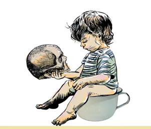
Por qué y para qué FILOSOFÍA. Por qué los niños deben aprender filosofía
Lectura para aproximarnos a qué es filosofía
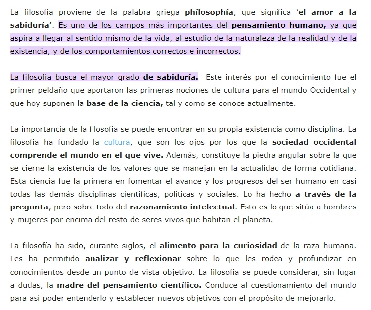
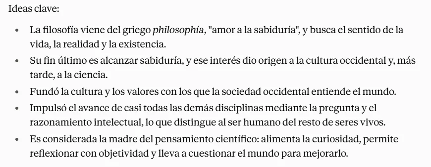
1. Origen y significado de la palabra
La palabra "filosofía" viene del griego philosophía, formada por philos (amor) y sophía (sabiduría). Literalmente significa "amor a la sabiduría". Esto ya nos dice algo importante: el filósofo no es alguien que "posee" la sabiduría, sino alguien que labusca, que siente atracción por comprender. La filosofía no se conforma con la vida cotidiana tal como se presenta, sino que se pregunta por su sentido, por la naturaleza de la realidad y de la existencia, y por qué comportamientos son correctos o incorrectos. Es, por tanto, una de las disciplinas más amplias del pensamiento humano, porque no se limita a un solo tema, sino que abarca prácticamente todas las grandes preguntas que el ser humano puede hacerse.
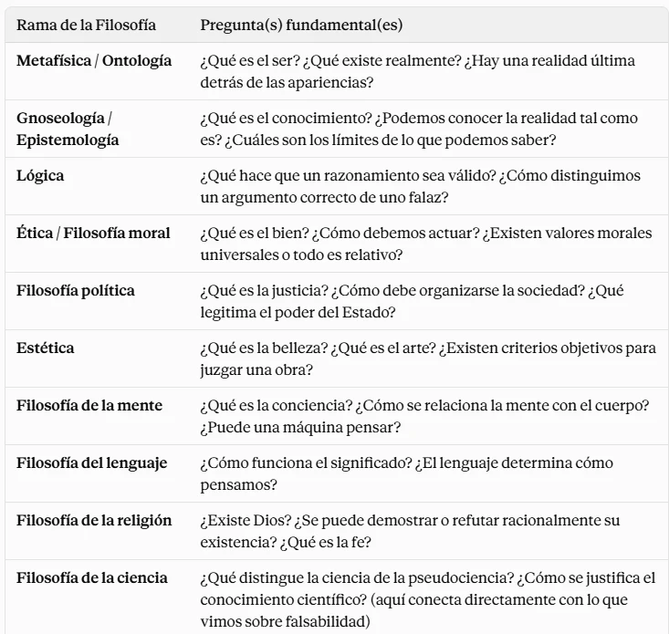
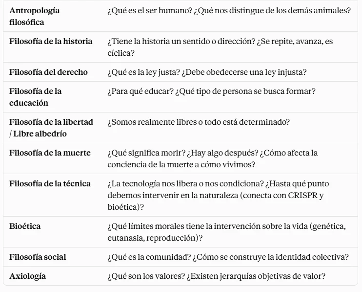
2. La finalidad de la filosofía: buscar sabiduría
La filosofía no busca datos sueltos ni informaciónacumulada, sino sabiduría*: un conocimiento profundo que ayuda a comprender el mundo y a vivir mejor en él.
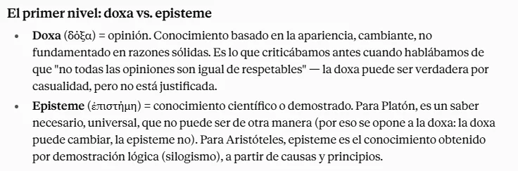
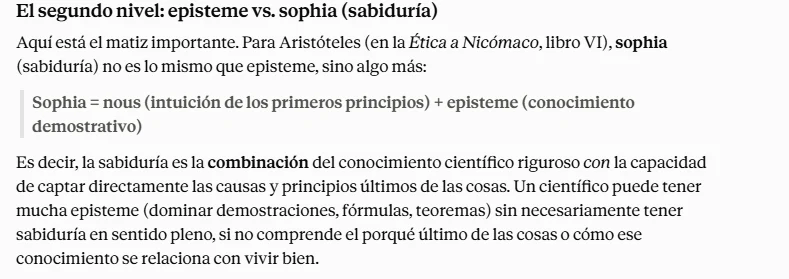
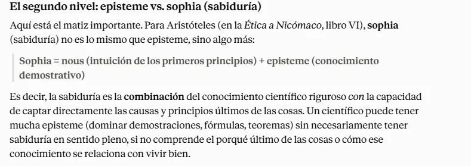
Este interés por saber fue precisamente el punto de partida de la cultura occidental. Las primeras civilizaciones que empezaron a preguntarse "por qué" en lugar de conformarse con explicaciones mágicas o religiosas dieron los primeros pasos hacia lo que hoy llamamos ciencia. En este sentido, la filosofía es la raíz de la que después crecieron todas las disciplinas científicas: primero se filosofaba sobre la naturaleza, y de ahí nacieron la física, la biología, la astronomía, etc.
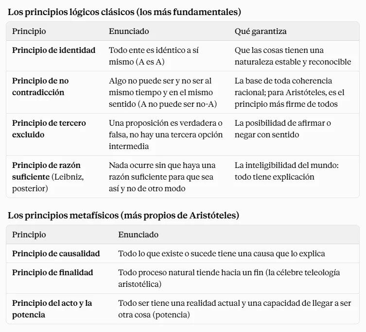
3. La filosofía como fundadora de la cultura y los valores
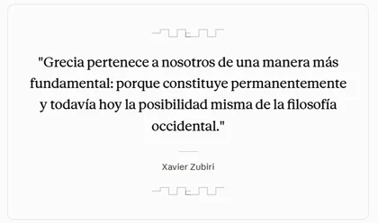
Se dice que la filosofía "fundó la cultura" porque fue ella la que proporcionó a la sociedad occidental las categorías* y los conceptos con los que entendemos el mundo (qué es verdad, qué es justicia, qué es el bien...). Además, es la base de los valores que usamos cada día —libertad, igualdad, dignidad, justicia— aunque no seamos conscientes de que provienen de siglos de reflexión filosófica. Es como loscimientos de un edificio: no se ven, pero sin ellos el edificio entero se vendría abajo.
4. La pregunta y el razonamiento como motor del progreso
Es precisamente la capacidad derazonar y cuestionar lo que sitúa al ser humano por encima del resto de los seres vivos. No es la fuerza física ni el instinto lo que nos distingue, sino la capacidad de pensar sobre nosotros mismos y sobre el mundo.
5. La filosofía como madre del pensamiento científico
Por último, la filosofía se presenta como el "alimento de la curiosidad humana" a lo largo de la historia. Gracias a ella, el ser humano ha aprendido a analizar y reflexionar sobre lo que le rodea desde un punto de vista objetivo, es decir, intentando dejar a un ladoprejuicios y creencias no fundamentadas. Por eso se la considera la madre del pensamiento científico:toda ciencia nace de una actitud filosófica previa, la de cuestionar el mundo tal como se presenta.
Hilo conductor: seis voces, una misma imagen de la filosofíaque se opone, en cada bloque, a una misma tentación:
La filosofía como saber flotante(no encarnada en la realidad), reservado a unos pocos.
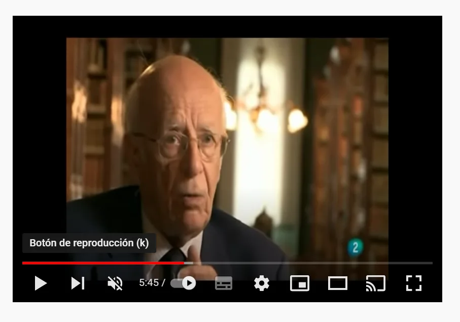
Rechazo de la imagen del "filósofo" como sabio flotante.Le incomoda que le presenten como "filósofo": "Qué más quisiera yo... que saber lo que es la verdad, la justicia, el bien". Insiste en que la filosofía "jamás jamás" fue eso: los filósofos eran "gente que quería ver*, gente que quería entender, personas que encarnaban hasta cierto punto la conciencia crítica de una época".
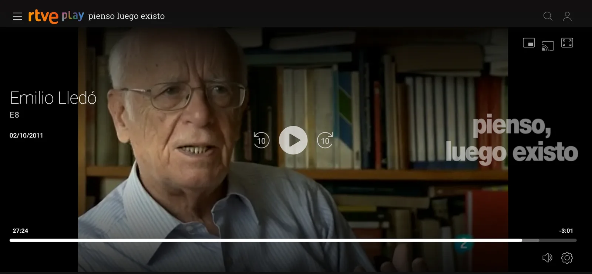
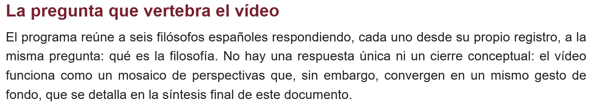
o como recetario de respuestas cerradas.
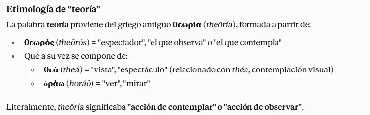
Frente a eso, el vídeo defiende una filosofía encarnada —en el lenguaje que hablamos, en la educación que recibimos, en la vida democrática que compartimos— y de acceso universal: «una pasión de cualquiera»,no de una casta de sabios. La filosofía aparece así menos como un cuerpo de doctrinas que como una actitud crítica permanente: interrogar el lenguaje, exigir coraje al pensamiento y sostener la educación como base de la ciudadanía.
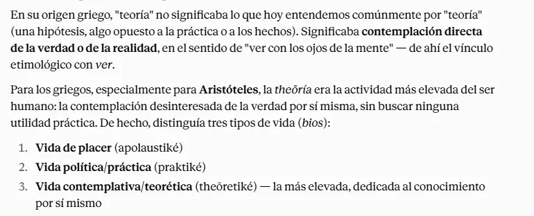
Emilio Lledó. La filosofía como una reflexión sobre el lenguaje*. Qué quiere decir Lledó cuando afirma que nuestra mente se constituye en el lenguaje?
Significa que no es que primero pensamos —tenemos ideas, sensaciones, un "yo" interior— y que el lenguaje llega después, como un traje que le ponemos a ese pensamiento ya formado para poder comunicarlo. Frente a esa visión instrumental del lenguaje (la palabra como meraherramienta de expresión).
Lledó defiende algo más fuerte: que el pensamiento mismo, nuestra identidad, nuestra "ideología" —en el sentido amplio de cómo interpretamos el mundo— están hechos de palabras. Por tanto, no es que pensemos y luego hablemos; pensamos porque hablamos, y hablamos con la lengua concreta que hemos heredado.
Por eso distingue, en el vídeo, entre la "lengua materna" y lo que él llama "lengua matriz". La materna es simplemente la que nos acuna, la que nos llega primero; la matriz es esa misma lengua en tanto que sigue generando, dando forma activamente a quiénes somos, a nuestra historia personal, a lo que somos capaces de notar, de sentir o de argumentar. Dicho de otro modo: no tenemos un cuerpo con una mente dentro que "usa" el idioma; somos, en buena medida, la lengua que hablamos y que nos habla a nosotros.
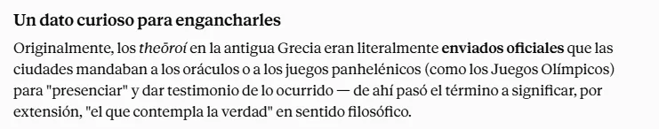
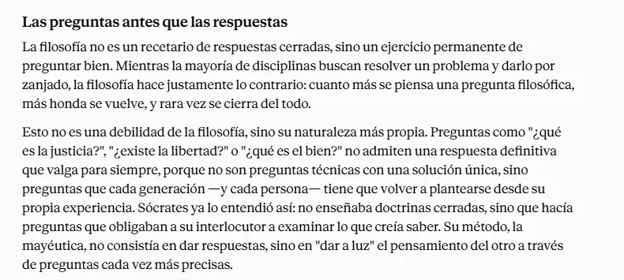
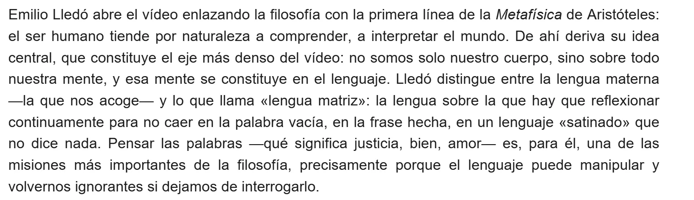
Esta idea no es original de Lledó —conecta con toda una tradición—:
Aristóteles ya definía al ser humano como el animal que tiene logos(razón y palabra a la vez, inseparables);
Wilhelm von Humboldt* sostenía que cada lengua es una forma de ver el mundo,no una etiqueta neutra sobre un mundo ya dado;
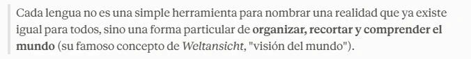
Heidegger llegó a decir que el lenguaje es "la casa del ser";
y la hermenéutica de Gadamer, que influyó mucho en Lledó, afirma que todo entender es ya un entender lingüístico.
Y de ahí saca una consecuencia práctica: si nuestra mente es lenguaje, entonces cuidar el lenguaje no es un capricho estético, sino una cuestión casi de supervivencia intelectual. Un lenguaje hueco, hecho de frases hechas o de eslóganes mediáticos, no solo comunica mal: directamenteempobrece y deforma la menteque se construye con él. Por eso insiste en que hay que "interrogar" constantemente las palabras —qué significa justicia,qué significa amor— para no dejarse manipular ni caer, como él dice, en la ignorancia.
Fernando Savater
Fernando Savater.Defensa de la enseñanza de la filosofía: la filosofía y la democracia comparten origen y lógica interna, porque ambas dependen de la capacidad crítica de cualquiera, no de una élite de sabios. Bajo esta idea, mantener la filosofía en la educación secundaria no es un gremialismo corporativo, sino una forma de practicar la misma «esencia democrática»que la filosofía encarna: una filosofía cívica, orientada a las grandes preguntas pero vivida como forma de vida y no como ejercicio puramente intelectual.
La filosofía no es un recetario tranquilizador. Frente a eso, se reivindica que la filosofía está hecha de preguntas más que de respuestas, y que su función no es sacarnos de dudas sino, al contrario, introducirnos en ellas. De ahí que el pensamiento genuino exijacoraje personal para que tenga capacidad transformadora.
Educación, ciudadanía y los enemigos de la democracia
La educación es la condición de posibilidad de la ciudadanía democrática. Se defiende que la transmisión de valores no puede quedar en manos exclusivas de las familias, porque uno de los papeles de la educación es precisamente abrir a los hijos alternativas distintas a las de sus padres.
Emilio Lledó. Los medios frente a la escuela en la transmisión de valores. "Nunca ha habido tantas posibilidades de comunicación... pero por esa abundancia de medios hay que mimar más el lenguaje, hay que pensarlo más". Lamenta que sean "los medios de comunicación los que tienen en sus manos el poder de la educación, de la transmisión de valores, de conocimientos, de sentimientos", en lugar de la escuela.
La miseria y la ignorancia se señalan como los dos grandes enemigos de la democracia,sin que ello suponga atribuir a laeducación la solución de todos los males sociales: sí se le reconoce, en cambio, un papel estructural en cualquier solución posible.
Entender al otro, persuasión y violencia
Se plantea una relación directa entre incomprensión y violencia: las sociedades donde las personas no consiguen exponer sus razones, o sienten que nadie va a escucharlas, son sociedades permanentemente al borde del conflicto. La democracia parlamentaria se define, en este sentido, por la capacidad de persuadir y dejarse persuadir —no por la superposición de sectarismos—, lo que exige una formación cívica que vaya más allá de conocer las leyes: comprender los valores que las sostienen.
Bauman se apoya en el argumento central del Quijote —lo que Kundera llamaba la fundación de las humanidades como saber de la ambigüedad— y hay varios episodios de la novela que ilustran exactamente lo que dice tu texto: que las humanidades no ofrecen verdades cerradas, sino que sostienen el esfuerzo, siempre inacabado, de comprender un mundo sin certezas absolutas. El ejemplo más citado, precisamente por Kundera, es el de los molinos de viento. Lo interesante no es que Quijote se equivoque viendo gigantes donde hay molinos, sino lo que revela sobre cómo funciona una ideología: los libros de caballerías le han dado a Alonso Quijano un "telón" completo —un sistema cerrado de significados— que le permite mirar el mundo sin la incómoda tarea de interpretarlo caso por caso. Todo encaja de antemano. Es justo la "servidumbre voluntaria" de la que habla Bauman: la comodidad de no tener que pensar, pagada al precio de vivir engañado. El Quijote de las primeras salidas es, en ese sentido, el anti-modelo de lo que Bauman propone: en vez de rasgar el telón, se envuelve en uno nuevo. El episodio del yelmo de Mambrino funciona al revés y es quizá el más filosófico de todos. Un barbero pierde su bacía de latón, Quijote la toma por el yelmo encantado de un héroe legendario, y a partir de ahí el objeto queda suspendido entre dos descripciones incompatibles —Sancho llega a llamarlo, en la famosa fórmula, "baciyelmo"— sin que la novela nos diga nunca cuál es la versión verdadera. Cervantes se niega deliberadamente a resolver la ambigüedad. Eso es exactamente la "multitud de significados" y la "escasez de verdades absolutas" de las que habla Bauman: no hay un hecho neutro debajo de las interpretaciones al que podamos apelar para zanjar la discusión, y aun así hay que seguir viviendo y decidiendo con ese objeto. Algo parecido ocurre con Dulcinea. Quijote transforma a una labradora, Aldonza Lorenzo, en la dama ideal de sus fantasías caballerescas; cuando en la segunda parte se encuentra con una campesina real y le dicen que esa es Dulcinea "encantada", ni él ni el lector pueden ya decidir con comodidad quién tiene razón sobre "lo que de verdad es" Dulcinea. La pregunta deja de tener una respuesta única y se convierte en un problema de comprensión permanente, no en un dato que resolver. Y está el final de la novela, que es quizá el ejemplo que mejor conecta con la idea de "comprensión inconclusa" como forma honesta de vivir la incertidumbre, y no como derrota del pensamiento. Alonso Quijano recupera el juicio, reniega de los libros de caballerías y muere siendo por fin "él mismo". Es una escena de lucidez que llega precisamente a través del fracaso, de la derrota de todas sus empresas: la cordura no le trae un mundo ordenado y feliz, sino la aceptación desnuda de quién es y de lo vivido. Ese es el gesto que Bauman lee como legado de Cervantes: entender no es vencer, es sostenerse en la tarea de comprender aun sabiendo que nunca se cierra del todo. Sobre esa última escena vale la pena aclarar algo: Alonso Quijano y Don Quijote son la misma persona, pero la novela juega deliberadamente con la distinción entre ambos nombres. Alonso Quijano (también aparece como Quijada, Quesada o Quejana, porque ni el propio narrador se pone de acuerdo) es un hidalgo manchego de unos cincuenta años, de escasos recursos, que se pasa las noches leyendo libros de caballerías hasta que "se le secó el cerebro" y pierde el juicio. En ese momento decide reinventarse: se pone un nombre nuevo, "Don Quijote de la Mancha", se inventa un linaje, una dama (Dulcinea) y una misión caballeresca, y sale al mundo a vivir esa identidad como si fuera la verdadera. Por eso conviene distinguirlos: Alonso Quijano es la persona "real" y Don Quijote es el personaje que esa persona decide encarnar, una identidad fabricada a partir de la ficción literaria que ha interiorizado. Cervantes mantiene esa tensión durante toda la novela —a veces asoma la cordura de Quijano por debajo de la locura de Quijote— hasta el final, donde el hidalgo recupera el juicio, reniega explícitamente de los libros de caballerías y muere de nuevo como Alonso Quijano, no como Don Quijote. Esa doble identidad es justo lo que hace tan rico el ejemplo anterior: el personaje no solo interpreta el mundo a través de un relato, sino que construye su propia identidad a partir de él, y solo al final —en la derrota— se despoja de esa máscara para reconocerse a sí mismo.
En resumen
Zygmunt Bauman, sociólogo y filósofo polaco, en su obra "Apología de las humanidades: Tradición y futuro" (2007), hace referencia a la idea de que no hay verdades absolutas y cita a Miguel de Cervantes para respaldar esta perspectiva. Esta referencia se relaciona con la idea de que las humanidades, en contraste con las ciencias exactas, se preocupan por la complejidad de la condición humana y la diversidad de perspectivas. La cita de Cervantes es relevante en este contexto porque sugiere que la literatura y otras disciplinas humanísticas pueden ofrecer una comprensión más profunda y matizada de la realidad humana. Cervantes, a través de su obra más famosa, "Don Quijote de la Mancha", exploró temas como la locura, la identidad, la ilusión y la subjetividad de una manera que no se puede reducir a verdades absolutas o simples dicotomías. Uno de los aspectos centrales de esta exploración es la subjetividad y la percepción: Cervantes juega con la idea de que la percepción subjetiva de la realidad puede ser tan válida como la realidad objetiva. Don Quijote ve el mundo a través de su propia lente de caballero andante, y su perspectiva a menudo choca con la de los demás. Esta exploración de la subjetividad desafía la noción de una verdad objetiva y única. Bauman argumenta que las humanidades son esenciales para comprender la complejidad de la experiencia humana y para abordar cuestiones que no se pueden reducir a fórmulas o leyes universales. En lugar de buscar respuestas definitivas o verdades absolutas, las humanidades se centran en la exploración de múltiples perspectivas y en el análisis crítico de la condición humana en su diversidad y complejidad. En resumen, "Don Quijote de la Mancha" es una obra literaria que se adentra en la complejidad de la condición humana y cuestiona las nociones de verdad, realidad, identidad y locura. Cervantes desafía la búsqueda de respuestas absolutas y presenta un mundo en el que la percepción subjetiva y la multiplicidad de perspectivas juegan un papel fundamental. Esta es una de las razones por las que la obra sigue siendo relevante y profundamente apreciada en la literatura universal.
«Educad a los niños y no será necesario castigar a los hombres»*, sentenció Pitágoras (Siglo VI a.C). Sin embargo, la Filosofía, la disciplina que precisamenteenseña a pensar, a cuestionar, a sacar conclusiones, a aplicar respuestas críticas a los problemas cotidianos y, en definitiva, a vivir de forma reflexivano sólo se encuentra cada vez más arrinconada en los planes de estudio. Durante mucho tiempo incluso ha estado vetada a los más pequeños. Ese saber que juega un papel fundamental a la hora de formar a ciudadanos comprometidos, con juicio propio y que no sean idiotas (los griegos llamaban idiotés a quienes noparticipaban en los asuntos públicos y carecían de pensamiento crítico)tradicionalmente ha sido considerado como una materia demasiado abstracta y demasiado obtusa para los críos, una forma de conocimiento apta sólo para las mentes plenamente desarrolladas de los adultos.
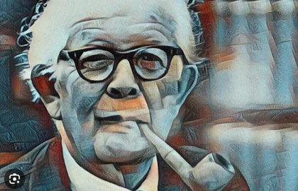
El suizo Jean Piaget, famoso por sus estudios sobre la infancia, consideraba por ejemplo que hasta los 11 o 12 años los niñosno eran capaces de desarrollar el pensamiento crítico. Craso error. No es así. Los más pequeños no sólo pueden filosofar, sino que en opinión de numerosos expertos deben hacerlo. Tienen que hacerlo.
Ya lo decía Matthew Lipman, un filósofo y educador estadounidense y uno de los grandes defensores de las ventajas que la Filosofía puede aportar a los más pequeños y al bien común. Tan fervientemente creía en los beneficios de la Filosofía que en los años 80 creó un programa educativo llamado Philosophy for children (Filosofía para niños). La idea de fondo que no es posible conseguir sociedades verdaderamente libres si no se forman personas capaces de pensar por sí mismas en un proceso cooperativo de discusión
En un pasaje de su libro, Dawkins se muestra contrario a la forma en que la mayoría de familias inculcan explicaciones mágicas a sus niños. “No puedo evitar preguntarme si una dieta de cuentos de hadas repletos de encantamientos y milagros, hombres invisibles incluidos, es dañina desde un punto de vista educativo”, escribe. “¿Por qué los adultos promueven la credulidad de los niños? ¿Es realmente un error tan descabellado plantearles a los niños que creen en Papá Noel un pequeño y simple juego de preguntas y respuestas que les haga pensar? ¿Cuántas chimeneas tendría que visitar en una noche? No se trata de decirles que Papá Noel no existe, sino de fomentar el intachable hábito del cuestionamiento escéptico”. Él asume que eso es impopular: “Siempre que planteo esta cuestión me echan a patadas de los sitios por querer interferir en la magia de la infancia”.
Dawkins argumenta que promover la fe ciega en lo invisible (hombres mágicos, regalos por chimeneas imposibles) impide el "cuestionamiento escéptico", dejando a los niños vulnerables a ilusiones mayores. Estudios y análisis psicológicos respaldan esta idea: la credulidad temprana, fomentada por mitos como Santa Claus, crea un patrón cognitivo donde las explicaciones fantásticas se prefieren a la realidad compleja y caótica.Esto se traduce en adultos que buscan "mentiras" elaboradas para llenar vacíos emocionales, como el deseo de control o emoción narrativa, tal como los niños anhelan hadas.
Aquí tienes una lista de teorías conspirativas populares en 2025, basadas en tendencias actuales: Ejemplos de Fake news (desinformación)
- El gobierno controla huracanes y el clima mediante tecnología como HAARP o chemtrails para fines políticos o poblacionales. (Chemtrails: las estelas de condensación de aviones son tóxicas o usadas para control mental)
- La Tierra es plana, una idea que ha ganado influencia en círculos políticos y mediáticos.
- Vacunas como herramienta de control poblacional (La idea de que las vacunas contra el COVID-19 contienen "chips" para controlarnos mentalmente)
- Inmigrantes comiendo mascotas de personas, una narrativa de la campaña electoral 2024 (haitianos en Springfield)
- Conspiraciones anti-medicina que rechazan tratamientos, llevando a muertes evitables. Muertes Covid por no vacunarse.
Creación de una lluvia de ideas sobre qué puede y debe reflexionar la filosofía. A modo de ejemplo...
¿Por qué se acaba la vida? ¿Qué ocurre cuando uno muere? ¿Cómo es posible que existan los números si no podemos tocarlos? ¿Es posible demostrar si existe o no existe Dios? ¿Cómo sabemos que los animales no piensan? ¿Todos estamos al corriente de lo que está bien y de lo que está mal?
Comte-Sponville afirma que “De los filósofos clásicos podemos aprender, por ejemplo, que la vida es difícil; nos permiten entender que las dificultades que hoy afrontamos no son consecuencia de la crisis de la que tanto se habla; que desde que existe la humanidad la vida ha sido difícil y que la felicidad no es tener una vida fácil, sino que amar la vida es amar también sus dificultades”.
En este mismo sentido, Echegoyen opina que quienes buscan en la filosofía una orientación para vivir y respuesta a asuntos tan universales como el sufrimiento, la violencia, el riesgo o el sentido de la vida, pueden resultar útilespensadores que siempre se han ocupado de lafilosofía práctica, como Marco Aurelio, Epicteto*, Epicuro, Sócrates, Platón, Aristóteles, Nietzsche u Ortega y Gasset.
Epicteto dejó una serie de enseñanzas y principios en sus "Discursos" y en su "Manual de Epicteto" (también conocido como "Enquiridión"). Estas son algunas de las sentencias más importantes y representativas de su filosofía estoica:
"La libertad y la felicidad comienzan con una clara comprensión de una regla: algunos asuntos son de nuestra incumbencia y otros no lo son."
"No es lo que sucede a las personas lo que causa sufrimiento, sino lo que piensan acerca de lo que sucede."
"Elige, en lugar de desear: así evitarás decepciones y alcanzarás serenidad."
"No es lo que tienes o quién eres, o dónde estás o lo que haces lo que te hace feliz o infeliz. Es lo que piensas acerca de ello."
Otros enfatizan que una de las utilidades de la filosofía es contribuir a la reflexión sobre los grandes problemas de la actualidad, tanto en el ámbito individual como en el colectivo. Javier Echegoyen Olleta, profesor de Filosofía de la UNED, asegura que la filosofía tiene mucho que decir sobre la ecología, los derechos humanos, los derechos de los animales, los riesgos de la ingeniería genética, la interculturalidad, el sistema productivo o nuevas formas de participación ciudadana.
Llorenç Vallmajó Riera, profesor de Filosofía y creador de Filópolis, una web de filosofía para no iniciados, explicaba hace algún tiempo que para sopesar la importancia que tiene la labor de los pensadores en nuestras vidas basta pensar qué nos habríamos perdido sin ella.🔗 Ver enlace (xtec.cat)
“Sin la filosofía nos habríamos perdido lo que llamamos lógica(Aristóteles fue el primero en analizar las diferentes maneras de argumentar que tenemos los humanos, mostró las reglas de una buena deducción y nos dio las herramientas para poder construir argumentaciones con validez), y sin la lógica nos faltaría la luz racional necesaria para analizar los discursos y detectar las falacias, argumentos con sólo apariencia de validez”, ejemplificaba.
Como toda teoría científica está guiada por procedimientos lógicos (metodologías científicas), la filosofía también ha resultado básica para el progreso científico. “Estoy pensando en el falsacionismo de Popper: nos dice que es factible demostrar que una teoría es falsa, pero nunca se puede demostrar que una teoría es verdadera; nos muestra que reconocer un error ya es un progreso, que el error puede ser fértil”.
Por otra parte, la epistemología o teoría del conocimiento ha permitido abrir nuevos caminos y esperanzas en momentos de crisis intelectual, como cuando se reconoció el error milenario de la teoría geocéntrica según la cual la Tierra era el centro y todos los astros giraban a su alrededor.
No menos importante es la aportación ética, que nos permite reflexionar sobre cómo hemos vivido o hemos de vivir. Él destaca las ideas de orden ético de Sócrates, Platón o Aristóteles, pero también de Kant, “a quien debemos la distinción entre legalidad y moralidad: la Revolución Francesa era ilegal, pero ¿era moral?”. (Desobediencia civil) 🔗 Ver vídeo en YouTube
Y tampoco en el ámbito de la política se estaría donde se está sin las aportaciones filosóficas. “Pensemos en lo que supuso afirmar, como lo hizoThomas Hobbes,que el poder político no deriva de Dios, sino que es fruto de un pacto o contrato social; con este reconocimiento, las personas dejaban de ser súbditos y pasaban a se ciudadanos; o pensemos en las aportaciones de René Descartes: al afirmar que todos los hombres, por naturaleza, tienen la capacidad de razonar o de juzgar abrió o desbrozó el camino hacia la Revolución Francesa”
JORDI NOMEN
Según Jordi Nomen «Es necesario enseñar a los niños a filosofar. De ese modo aprenderán a pensar, podrán construir un mundo mejor,participar activamente en un proyecto común, podrán ser ciudadanos activos y comprometidos, capaces de separar la verdad de la mentira en estos tiempos en los que resulta difícil, en estos tiempos de falsas promesas. Paracontribuir al bien común, tenemos que poder pensar de manera lúcida y creativa, filosófica. Y eso es algo que o se aprende en edad escolar o no se aprende», asegura Jordi Nomen. Estimular el pensamiento filosófico en los pequeños no resulta en principio complicado. Al fin y al cabo los niños llegan al mundo con una curiosidad insaciable y una enorme capacidad de admirar* lo que descubren. «Dos cualidades filosóficas», señala Jordi Nomen. Se trata de estimularles, de abrirles una ventana diferente para contemplar el mundo: la de la mirada filosófica.
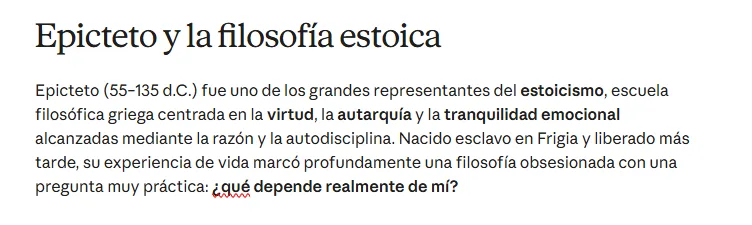
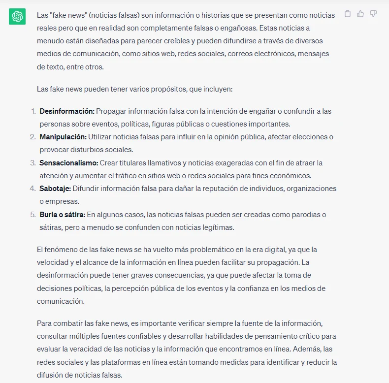
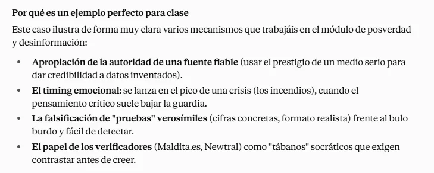
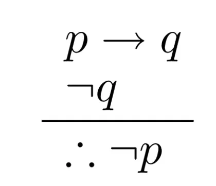
El niño filósofo es, en ese sentido, un libro enormemente útil y práctico. Nomen pone a disposición de padres y educadores un total de 12 grandes preguntas que a lo largo de la historia 12 grandes filósofos occidentales se han planteado, incluyendo la respuesta que daban a las mismas.
Platón nos adentra por ejemplo en la duda trascendental de si debemos actuar con la cabeza o con el corazón.
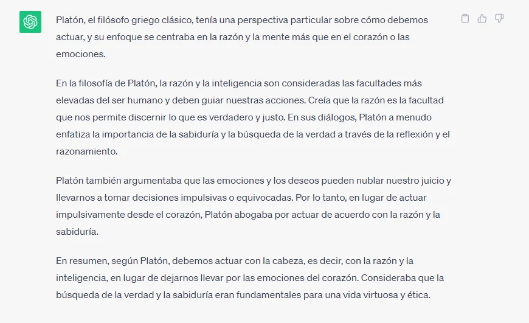
La razón (la inteligencia) nos permite discernir entre lo verdadero y lo justo, y hacernos, por tanto, virtuosos.
Las emociones y deseos pueden nublar nuestro juicio y llevarnos a tomar decisiones impulsivas o equivocadas.
Las emociones, la intuición y la fe (cruciales para la creencia religiosa) no pueden reducirse (o escapan) a la lógica y la razón. La relación con Dios va más allá de la comprensión puramente intelectual.
Pascal advierte que "El corazón tiene razones que la razón no entiende"
La dimensiones emocionales y espirituales son igualmente importantes en la vida.
A través de Séneca, podemos explorar si hay que tener miedo a la muerte.
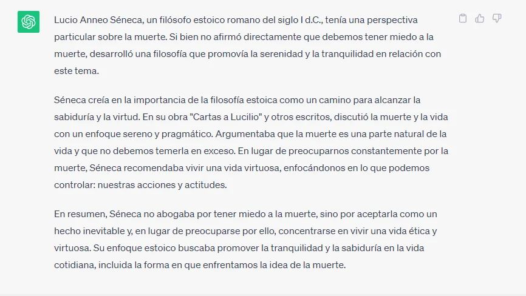
La muerte es una parte natural de la vida y no tenemos que temerla en exceso (es inevitable):tranquilidad y serenidad.
Tenemos que preocuparnos en lo que podemos controlar: nuestras acciones y actitudes.
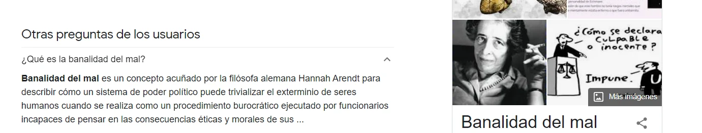
Qué es el mal encuentra respuesta en Hannah Arendt.
Y de la mano de Nietzsche se puede comprender el valor de la creatividad.
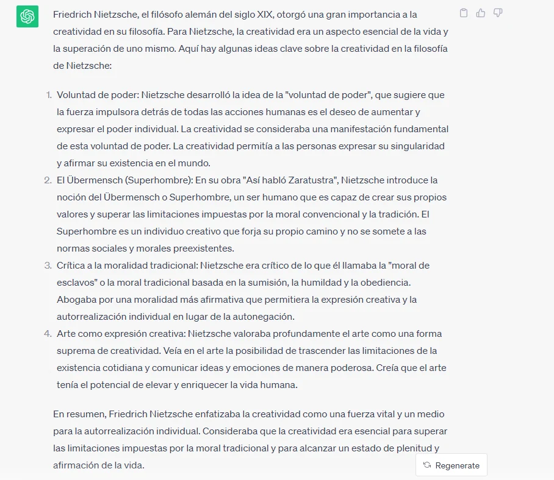
Voluntad de poder: Detrás de toda acción está el deseo de aumentar y expresar el poder individual (nuestra singularidad).
El Superhombre es un individuo creativo que forja su propio camino y no se somete a las normas sociales y morales preexistentes.
La CREATIVIDAD es una manifestación de esa voluntad de poder: el arte como forma suprema de creatividad(comunicación de ideas y emociones más poderosa) y enriquecedora de la vida humana.
Para adentrarse, por ejemplo, en el pensamiento de Erich Fromm, Jordi Nomen da la vuelta al cuento de Caperucita roja y lo transforma en un relato maravilloso: La historia de Caperucita contada por el lobo, en la que el animal denostado durante generaciones y generaciones por fin cuenta su versión de los hechos y se presenta a sí mismo como víctima en lugar de como agresor. Ese cuento al revés sirve para plantear a los críos cuestiones como «¿por qué crees que la versión del lobo no ha llegado hasta ahora y la de Caperucita sí?» o «¿cómo se construye la verdad?».
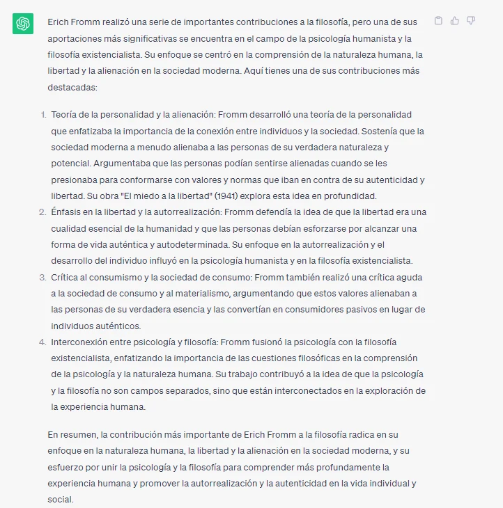
El miedo a la libertad: La sociedad modernasepara (aliena) a las personas de su verdadera naturaleza al ser presionadas para conformarse con valores , normas, gustos o creencias que no hay elegido, pero que siente como propios; cuando en verdad han sido impuestos por la sociedad, la publicidad, los medios de comunicación. Con esto perdemos la espontaneidad y la autenticidad, porque nos convertimos en autómatas.
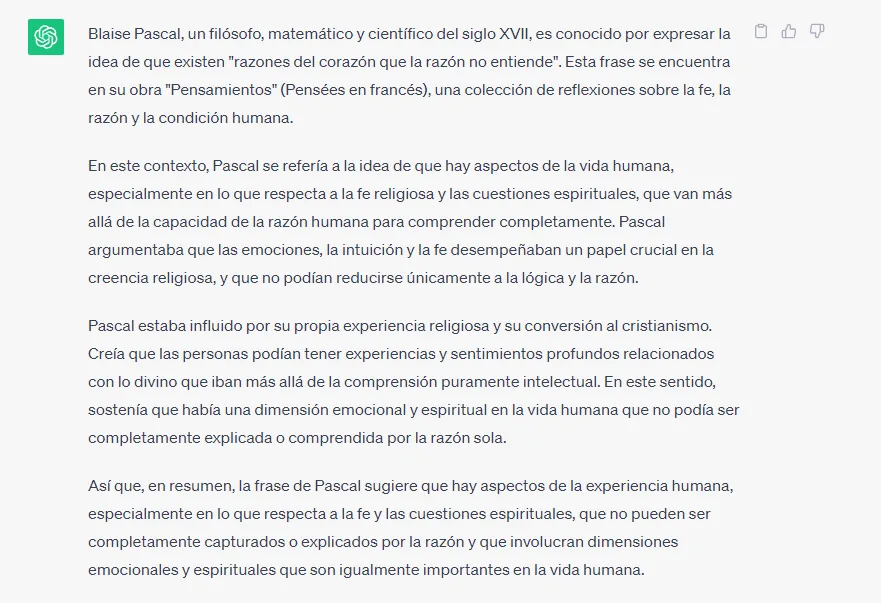
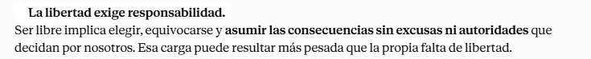
Crítica a la sociedad de consumo (materialista): nos convierten en individuos pasivos.
Recordemos, por citar algunos ejemplos, la actitud filosófica de Sócrates, que nos invitaba a conocernos a nosotros mismos y que afirmaba queera preferible sufrir una injusticia antes que cometerla, actitud que inspiró los movimientos pacifistas. ¿Recuerdas a Gandhi? Gandhi decía que debíamos intentar vivir como Sócrates, que debía ser nuestro ejemplo.
Con esa frase quería dar importancia a la virtud y sabiduría moral. Lo importante es actuar con justicia, sabiduría y autocontrol. Incluso si eso es perjudicial para ti.
Nadie hace el mal a sabiendas: la ignorancia es la causa de la maldad. Importancia de la educación.
Lo importante es reflexionar éticamente antes que ceder a los impulsos:autocontrol y autoexamen (Una vida sin examen no es digna de ser vivida)
Pensemos en Kant, que creó la noción de dignidad en la que actualmente se basan los derechos humanos. Kant también es responsable del que diría que es el lema más importante de la filosofía:Atrévete a pensar.
DIGNIDAD: Es el respeto absoluto por la moralidad y autonomía de las personas. Toda persona ha de ser tratada con fin en sí mismo y nunca como meres medios para nuestros propios fines. (no deben ser instrumentalizadas o explotadas)
Dignidad:
Es inherente a todos los seres racionales (universal).
Capacidad de razonar y tomas decisiones basadas en la moralidad (Autonomía moral), en lugar de actuar por instinto o deseo.
Acordémonos de Marx y Engles, que fundamentaron teóricamente el movimiento obrero gracias al cual tenemos jornadas laborales de ocho horas y no de doce.
Recordemos a Nietzsche, que criticaba los fundamentos de la cultura occidental y nos obligaba a cuestionarnos si sería verdad que existía algún dios.
Apología de la Filosofía: Hay diferentes niveles de análisis de la realidad y que el conocimiento científico no es el único modo de conocer, pero sigues sin tener claro que la filosofía pueda ser útil en este mundo dominado por la técnica. La primera pregunta que podemos formularnos es obvia: ¿qué es eso de la filosofía? ¿Sirve o ha servido para algo? ¿Tiene sentido ahora que existe la ciencia?
Vamos a reflexionar sobre ello a través de otra pregunta: ¿quién eres tú? Seguramente, lo primero en lo que hayas pensado sea en tu nombre. Eres Juan, María o Sofía, pero hay en el mundo muchos Juanes, Marías o Sofías que no son tú. Puede que creas que el elemento que te diferencia es la materia que te compone.Químicamente, tu cuerpo está compuesto de hidrógeno, oxígeno, carbono, nitrógeno, calcio y algunos elementos más. Saber esto tampoco da cuenta de quién eres. El resto de la gente también tiene esta materia y no eres tú. ¿Qué ciencia puede explicarnos quién eres? ¿La física, la química, las matemáticas...?
Las ciencias se ocupan de aquello que se puede medir o pesar. Las ciencias pueden darnos mucha información útil sobre cómo funciona tu cuerpo, pero ningunarespuestaaportada por una disciplina científica serásatisfactoriapara saber quién eres. Si queremos saber quién eres, tendremos que analizarte globalmente.No solo tu forma, sino tambiéntus pensamientos, tus acciones, tu forma de ver el mundo, tus ideas. Déjame ponerte otro ejemplo. Estás muy enamorad@ de tu pareja. Desde una perspectiva científica, podrían explicarte que el amor es una estrategia evolutiva para que se perpetúen tus genes en el tiempo, y ello podría ser verdad, pero apuesto a que cuando estás con tu pareja no piensas en eso, sino en que te gusta su mirada o su forma de hablar. ¿Adónde quiero llegar con esta reflexión? A que la realidad tiene diferentes niveles de análisis y la ciencia solo se ocupa de una parte de la misma. ¿Alguna ciencia estudia qué es el bien o la justicia o la igualdad? ¿Alguna ciencia estudia cómo debemos conciliar el interés particular con el bien público? Ni la física, ni la química ni las matemáticas se pueden ocupar de estas cuestiones propias de la filosofía.
Pensamiento crítico: Es posible que la filosofía esté presente en tu vida mucho más de lo que crees. Si lo piensas, es habitual que vayamos con el piloto automático puesto, haciendo lo que solemos hacer por costumbre. Dentro de ti hay multitud de ideas, la mayoría heredadas de tus padres, de los medios de comunicación, de tu círculo de amig@s, de las convenciones sociales establecidas.¿Has pensado que estas ideas podrían ser erróneas o al menos mejorables?
La filosofía sirve para que cobremos consciencia sobre nuestras propias ideas y tratemos de mejorarlas. Las ideas son el filtro a través del cual analizamos la realidad, actuamos y juzgamos los actos. En efecto, las ideas condicionan la realidad, y la filosofía puede lograr que diseccionemos minuciosamente nuestras propias ideas.
Una persona que no haya dialogado con l@s grandes genios del pensamiento, que no haya cultivado las herramientas de reflexión y pensamiento crítico que nos brinda la filosofía será más fácilmentemanipulable. Sin estudiar filosofía nos costará más detectar las falacias que nos venden los políticos. Vivimos en la era de la posverdad*, los políticos juegan más que nunca con discursos emotivos. Ejercitando la razón seremos más difíciles de engañar y de convencer, pues dispondremos de recursos para combatir los dogmas y las creencias infundadas.
En el mundo de la filosofía estamos acostumbrados a dialogar y debatir constantemente. Esta actitud abierta también puede ser de gran utilidad en nuestra vida. Hemos visto que la filosofía, en lo cotidiano, te puede ayudar aproblematizar y mejorar tus propias ideas.
Definición de mistificación: acción de engañar o deformar la realidad (confundiendo, ocultando o enmascarando) lo que realmente está ocurriendo,aprovechando la ingenuidad ajena. Se trata de manipular la percepción de alguien para lograr un propósito.En resumen, la mistificación actúa como un velo que distorsiona la realidad para ocultar conflictos reales, sustituyéndolos por percepciones ilusorias, lo que impide una comprensión auténtica de la situación. Ejemplo de mistificación*
Mediante la mistificación una persona puede confundir a otra (sin que esta lo reconozca o sea consciente).
La persona mistificada es aquella a la que se le hace entender que se siente feliz o triste, independientemente de cómo se sienta;
que es responsable de esto o no responsable de aquello, independientemente de cuál sea su responsabilidad que se haya echado o no sobre sí misma.
Se le atribuyen capacidades o la carencia de estas, sin referencia a ningún criterio empírico.
Sus propios motivos o intenciones se hacen a un lado o se les resta importancia, para ser sustituidos por otros.
Necesidad de la filosofía
La utilidad de la filosofía en el siglo XXI.En un mundo que parece guiado exclusivamente por intereses económicos, al galope de los avances científicos y técnicos,¿qué función y utilidad puede tener la reflexión filosófica?
La filosofía no se mueve en el contexto de las necesidades materiales. A esto responden mejor las ciencias o, más en concreto, las técnicas que de ellas se derivan. La filosofía responde a otro tipo de necesidad:la de comprender, expresar y analizar críticamente los problemas que se le presentan al ser humano.
La lechuza (o búho) se asocia a la filosofía principalmente porque es el símbolo de Atenea (Palas Atenea en la mitología griega), diosa de la sabiduría, el conocimiento y la estrategia, y la filosofía se define etimológicamente como "amor a la sabiduría" (philo-sophia). En la cultura griega antigua, la lechuza acompañaba a Atenea y se la describía con "ojos de lechuza" en obras como la Odisea de Homero, representando claridad en la oscuridad.
Las funciones de la filosofía según la UNESCO. En 2005, la UNESCO elaboró una «estrategia intersectorial sobre la filosofía» y se redactó un documento donde se reconocen y se atribuyen a la filosofía una serie de funciones.
La filosofía es una «escuela de libertad»,pues elabora instrumentos intelectuales para analizar y comprender conceptos como la justicia, la dignidad y la libertad. Además, crea capacidades para pensar con independencia, incrementa la facultad crítica para entender y cuestionar el mundo y fomenta la reflexión sobre valores y principios.
La filosofía te daráherramientas para pensar mejor, herramientas como analizar, sintetizar, comparar, conceptualizar o sistematizar.
La filosofía es una «escuela de solidaridad humana»y contribuye a un mejor entendimiento y respeto, que son elementos fundamentales para promover un diálogo entre las civilizaciones, culturas o comunidades basado en valores de paz y coexistencia.
La actividad filosófica, que no excluye la libre discusión, permite a cada unoaprender a pensar por sí mismo,ya que se esfuerza en precisar las definiciones exactas de las nociones utilizadas, de verificar la validez de los razonamientos o de examinar con atención los argumentos de otros.
La filosofía responde a la necesidad que tienen las personas de un cierto número de nociones filosóficas y morales mínimas. Estas nociones están destinadas a fomentar el respetode la personalidad humana, el amor a la paz, el odio al nacionalismo mezquino y al imperio de la fuerza bruta, la solidaridad y la entrega al ideal de la cultura.
La filosofía es una forma de abordar los problemas universales de la vida y la existencia humanas y de inculcar una manera de pensar independiente. Cuestiones como la educación para todos, la diversidad cultural, la ética de la ciencia, los derechos humanos, el diálogo intercultural, la democracia y el diálogo entre las civilizaciones necesitan contar con sólidos fundamentos filosóficos y estar dotadas de rigor analítico y conceptual.
La educación filosófica contribuye a la paz y prepara a cada uno para asumir sus responsabilidades frente a los grandes interrogantes contemporáneos, sobre todo en el ámbito de la ética. Esto se logra al formar espíritus libres y reflexivos capaces de resistir a las diversas formas de propaganda, fanatismo, exclusión e intolerancia.
La reflexión filosófica dentro de la enseñanza y en la vida cultural ayuda a la formación de la ciudadanía, en la medida en que con su capacidad crítica se mejora la calidad de la democracia, porque la filosofía nos invita a ejercer nuestro pensamiento de manera crítica, autónoma y libre en el marco de la tolerancia, el diálogo y el rechazo de actitudes y comportamientos contrarios a los derechos de las personas. Además, la filosofía nos muestra la riqueza de la pluralidad y la utilidad de ejercitar aquello que es específicamente humano, el razonamiento.
II. ¿CUÁL ES EL PAPEL DE LA FILOSOFÍA EN NUESTRO MUNDO?
De IBM a Google, los gigantes tecnológicoscontratan cada vez más filósofos. El motivo: su capacidad para razonar y entender el futuro. La asignatura peor tratada del temario español tiene salidas.Ética de la tecnología como requisito para obtener un trabajo.30/03/2017 17:53 🔗 Ver enlace (elmundo.es)
Edward Grefenstette, uno de los investigadores de DeepMind*, una empresa de Inteligencia Artificial adquirida por el gigante de Mountain View. Además de su especialidad, la informática, también estudió Física... y Filosofía. Grefenstette no es un caso único. En Microsoft, IBM o Google trabajan decenas de licenciados en Filosofía con interés por la tecnología y, sobre todo, por qué tipo de sociedad nos aguarda en el futuro. La tendencia (aún) no ha llegado a España, así que no le quite el polvo al diploma de licenciado. 🔗 DeepMind
DeepMindtemía que, un día, Google utilizara su tecnología de forma inapropiada. Cuando Google se hizo con DeepMind en 2014, todo el mundo pensaba que ambas empresas salían ganando.Google obtuvo una organización líder en investigación en inteligencia artificial (IA), mientras que los londinenses DeepMind lograban apoyo financiero en su tarea de construir IA que pueda aprender diferentes tareas de la manera en que lo hacen los humanos.
DeepMind ya contaba con gran autonomía operativa dentro de Alphabet*, pero el grupo quería autonomía legal, y se preocupaba del posible uso inapropiado de su tecnología. "Su perspectiva es que la tecnología sería demasiado poderosa para estar bajo el control de una empresa privada, por lo que necesita alojarse en otro tipo de entidad legal, separada del interés de los accionistas", explica un antiguo empleado cercano a las negociaciones con Alphabet.
Desde el principio, DeepMind tenía dudas sobre posibles dilemas éticos de su acuerdo con Google. Antes de que la adquisición de 2014 se cerrara, ambas empresas firmaron un "acuerdo de revisión de ética y seguridad" que impediría que Google tomara el control de la tecnología de DeepMind, según revelaba The Economist en 2019. Parte del acuerdo incluía la creación de una junta ética que supervisara la investigación.
DeepMind también creó una carta ética que incluía las prohibiciones del uso de tecnología para armas militares o vigilancia, así como una regla obligando a que se usara de forma beneficiosa para la sociedad. En 2017, DeepMind formó una unidad dedicada a la investigación en ética de la IA, que estaba compuesta por empleados de la empresa e investigadores externos asociados. La meta de esta división era "cimentar el camino hacia una inteligencia artificial realmente beneficiosa y responsable". Unos meses más tarde, un polémico contrato entre Google y el Pentágono salió a la luz, levantando un importante revuelo interno en el que los empleados acusaron a Google de entrar "en el negocio de la guerra".
El accionista Peter Thiel, cofundador y accionista principal de Palantir Technologies. Esta empresa desarrolla inteligencia artificial utilizada por Israel en aplicaciones militares, incluyendo sistemas de vigilancia,targeting y operaciones que involucrandrones y análisis de datos en conflictos como el de Gaza. Palantir ha establecido partnerships estratégicos con el gobierno y las fuerzas armadas israelíes para proporcionar AI en tecnología de batalla, lo que ha generado controversias internacionales.
Las grandes empresas tecnológicas de Silicon Valley demandan cada vez más filósofos por su capacidad para razonar y entender el futuro.
Otro ejemplo. Philjobs.org es una web donde se ofrecen trabajos para filósofos.
De momento, la mayoría de ofertas provienen de universidades, pero también las hay con un claro perfil tecnológico, como la del Centro Leverhulme * para el Futuro de la Inteligencia en la Universidad de Cambridge. Allí buscan a un graduado en Filosofía para sus investigaciones sobre Inteligencia Artificial.
«Uno de los filósofos más famosos en el mundo tecnológico, Peter Thiel, el fundador de PayPal», considera que «la Filosofía es cada vez más importante al estar alcanzando la tecnología aplicaciones muy disruptivas». Y recuerda una cita de Platón: «Cualquier conocimiento, si se separa de la justicia y de la virtud, es visto como astucia y no como sabiduría».
El filósofo Emilio Lledó explicaba recientemente el repunte del interés en su disciplina: «Una enseñanza esencial de la Filosofía no es sólo el amor a la sabiduría sino amor a las preguntas, a la curiosidad, al asombro. Pero sin dogmatismos, sin grumos mentales». Y esa capacidad de formular y contestar preguntas es lo que buscan empresas en las que se premia pensar sin convencionalismos.
Gonzalo Mendoza es el fundador de la Escuela de Filosofía de Madrid, frecuentada por ejecutivos:«Nos permite tomar distancia de la tecnología misma y de la aceleración que produce, para pensarla desde fuera y dar sentido a los cambios que va a traer y a los efectos sobre la vida humana». De momento, la mayoría de sus alumnos acuden a sus aulas movidos por su afán de profundizar en una asignatura a la que no le prestaron atención en el bachillerato y de la que se han enamorado años después, pero no -de momento- buscando un giro laboral.
Hoy en día, hay algoritmos* presentes en toda clase de procesos y decisiones: Con tantas implicaciones a tantos niveles, no es de extrañar que muchos se hayan preguntado cuál es el rol humano en un escenario donde la inteligencia artificial se ha vuelto omnipresente.
Salud (con diagnósticos apoyados por IA)
Movilidad (coches autónomos),
Automatización industrial,
La personalización de servicios online
Gestión de la justicia o la selección de empleo.
Optimistas
Kai-Fu Lee, tecnólogo, inversor y autor taiwanés
Kai-Fu Lee cree en una convivencia perfecta entre seres de carne y hueso y máquinas:"La IA va a reemplazar empleos y al mismo tiempo empoderar otros, tenemos que verlo en ambas direcciones. Las tareas repetitivas serán sustituidas plenamente por la inteligencia artificial, pero al mismo tiempo ofreceremos más visibilidad sobre procesos de negocio y más información para la toma de decisiones en medicina o para acelerar los ensayos clínicos de nuevos fármacos (...) La inteligencia artificial respecto al empleo es lo mismo que el Photoshop es a la fotografía: una herramienta que nos permite ser más productivo".
Satya Nadella, CEO de Microsoft
Ve con optimismo la IA, pero Nadella y los suyos se han mostrado muy preocupados en los últimos años sobre la posibilidad de que la IA acabe replicando o maximizando los sesgos humanos*, la discriminación, la desigualdad o el racismo. Por ello, el directivo, ha solicitado en numerosas ocasiones una "regulación del buen uso de algunos aspectos de la inteligencia artificial" a escala mundial y ha sentado como principios básicos de esta tecnología -al menos en lo que concierne a los desarrollos hechos en Redmond- aquello de una IA "justa, segura y transparente".
Mark Zuckerberg, CEO de Facebook
El controvertido fundador de Facebook, Mark Zuckerberg, también se ha manifestado en numerosas ocasiones acerca del potencial de la inteligencia artificial(usada de manera extensa en muchos de sus productos, como el reconocimiento de imágenes o de texto para censurar contenidos que considera ofensivos). Y, en algunas de esas veces, también ha querido dar su visión de cuál es el rol humano en esta intersección de la innovación y la realidad física. "Siempre que escucho a la gente decir que la inteligencia artificial perjudicará a las personas en el futuro, creo que, en general, la tecnología siempre se puede usar para bien y para mal y hay que tener cuidado con cómo se construye", afirma Zuckerberg, quien apela a un ejemplo simple para hacer llegar este mensaje de cautela optimista: "Si se está argumentando en contra de la IA, entonces se está argumentando en contra de automóviles más seguros que no van a tener accidentes, o se está argumentando en contra de poder diagnosticar mejor a las personas cuando están enfermas".
Pesimistas
Marvin Minsky, creador del concepto de inteligencia artificial
Minsky avisó de que como muchos seremos esclavos a las órdenes de la IA o, en el mejor de los casos, acabaremos prácticamente fusionados hasta hacernos indistintos: "Cuando los ordenadores tomen el control, puede que no lo recuperemos. Sobreviviremos según su capricho. Con suerte, decidirán mantenernos como mascotas (...) Las máquinas podrán hacer cualquier cosa que hagan las personas, porque las personas no son más que máquinas. ¿Qué somos las personas sino máquinas muy evolucionadas?". Preocupantes temores los manifestados por este visionario, quien también se preguntaba si los robots acabarán por heredar la Tierra: "Sí, pero serán nuestros hijos".
Stephen Hawking, físico y divulgador científico
HAwking e postuló en varios momentos de su vida en contra de la IA o, al menos, avisando de sus enormes riesgos. "El día que la inteligencia artificial se desarrolle por completo podría significar el fin de la raza humana.Funcionará por si sola y se rediseñará cada vez más rápido. Los seres humanos, limitados por la lenta evolución biológica, no podrán competir con la IA y serán superados", afirmó Hawking.
Elon Musk, fundador de Tesla y SpaceX
Por ejemplo, Musk es el fundador también de Neuralink, unaempresa de interfaces cerebro-máquina con la que aumentar la simbiosis que ya hoy existe con las máquinas. Pero, al mismo tiempo, el empresario considera que la inteligencia artificial es la "mayor amenaza a nuestra existencia" ya que será "mucho más inteligente que los humanos, lo que hará que la relación entre las diferentes inteligencias probablemente sea similar a la existente entre una persona y un gato".
Los humanos como la mascota de la IA, pero no es lo único que anticipa Elon Musk: "El futuro menos terrorífico que se me ocurre es uno en el que al menos hayamos democratizado la inteligencia artificial, porque si una gran compañía o un pequeño grupo de personas consiguen desarrollar una superinteligencia digital divina, podrían dominar el mundo".
La solución, en su opinión, parte precisamente de proyectos como Neuralink: "Lo he dicho varias veces durante los últimos años, pero es que creo que incluso en un escenario en el que la IA sea benigna, nos quedaremos atrás. Por eso creo que dotarnos con una interfaz cerebro-máquina de alto ancho de banda nos ayudará a permanecer por delante".
Jack Ma, fundador de Alibaba
En su opinión, "puede que las inteligencias artificiales que sean más inteligentes, pero nosotros somos más listos: fuimos nosotros quienes inventamos los ordenadores, pero aún no he visto a un ordenador inventar un ser humano". Y sentenció: "Los ordenadores sólo tienen chips, los humanos tenemos corazones".
Tristan Harris es un especialista en ética de la tecnología estadounidense. Es el director ejecutivo y cofundador del Center for Humane Technology.
Tristan Harris, señala que la tecnología está diseñada para «secuestrarnos la mente», pero cree que tiene arreglo. Harris ejerció de «diseñador de ética» en Google y ahora se dedica en exclusiva al movimiento Time Well Spent (tiempo bien gastado). Harris suele usar el dato de que consultamos 150 veces al día el móvil. Él lo llama «tragaperras». A él le consideran la conciencia de Silicon Valley, donde los filósofos encuentran cada vez más trabajo.
En la actualidad, hay grandes filósofos vivos como Peter Singer que iniciaron el movimiento por la liberación de los animales. ¿Alguna vez te has planteado el tipo de relación que tenemos con los animales y cómo los utilizamos para nuestros intereses sin tener en consideración que son seres que sienten y sufren? Singer ha logrado que muchísimas personas se opongan, por poner un ejemplo, a la utilización de animales para espectáculos.
En Liberación animalSinger se opone a lo que denomina especismo: discriminación a un ser vivo por el sólo hecho de pertenecer a una determinada especie. Defiende el derecho a una igual consideración de todos los seres capaces de sufrir. Así considera que conceder menor consideración a seres porque tengan alas o pelaje no es más justo que discriminar a alguien por el color de su piel. En concreto, expone que mientras que los animales dan muestra de menor inteligencia que el ser humano medio, muchos seres humanos con retraso mental grave muestran una inteligencia comparable a la animal,y que por ello la inteligencia no justifica que se otorgue menor consideración a los seres no humanos que a los humanos con retraso mental.
Singer no condena específicamente que se utilicen animales para el consumo humano, siempre que los métodos que se utilicen para matarlos no conllevenningún tipo de sufrimiento, pero concluye que la solución más práctica, para evitar controversias, es adoptar una dieta vegetariana o conforme al veganismo.
Singer condena también la vivisección,aunque cree que algún experimento animal puede ser aceptable si el beneficio (mejora de tratamientos médicos etc.) supera al daño causado a los animales utilizados. Dado el carácter subjetivo del término «beneficio», ésta —y cualquier otra visión utilitarista— son objeto de controversia. No obstante Singer explicita cuáles seres humanos que sientan de forma parecida a los animales podrían ser objeto de experimentación si se aplica la regla de que el beneficio supere al sufrimiento.Así un mono y un bebé podrían ser igualmente utilizables para experimentos, desde un punto de vista moral y en igualdad de condiciones. Si realizar un experimento con un bebé no es justificable, Singer defiende que tampoco lo es con animales, en cuyo caso los investigadores deberían hacer sus experimentos haciendo simulaciones con ordenadores o mediante otros métodos.
Judith Butler y Paul Beatriz Preciado han hecho grandes aportes a la teoría queer. ¿Alguna vez has pensado que es posible que la orientación y la identidad sexual o de género no sea más que una construcción social?🔗 Teoría queer - Wikipedia, la enciclopedia libre
La teoría queercuestiona y desmantela las normas tradicionales sobre género, sexualidad e identidad, considerándolas como construcciones sociales fluidas y no binarias(por ejemplo, no solo hombre/mujer o heterosexual/homosexual). Surgió en los años 90, influida por pensadores como Judith Butler y Eve Kosofsky Sedgwick, y critica el heteronormativismo (la idea de que la heterosexualidad es la norma dominante).En esencia, busca desafiar estructuras de poderque marginan identidades no normativas. Queerizar significa, pues, incomodar o desordenar lo que se da por natural.
En España tenemos también a grandes filósof@s como Adela Cortina, que recientemente ha desarrollado la noción de aporofobia. Cortina se ha dado cuenta de que no existe como tal el rechazo a los extranjeros, sino a los pobres. Nadie parece quejarse de los grandes jugadores de fútbol, aunque sean de otros países, así que lo que molesta no es la nacionalidad de una persona, lo que incomoda es la pobreza. Como ves, la filosofía sigue viva, transformando el mundo a su paso. 🔗 Aporofobia, el miedo a las personas pobres | Adela Cortina | TEDxUPValència - YouTube
III. Origen psicológico e histórico de la filosofía. Por qué surge en Grecia.
La actividad filosófica tiene su raíz en una situación psicológica previa:la de admirarse o asombrarse ante la realidad, que es sentida como extraña, <<desconocida». Esto significa que el asombro es una disposición humana por la que nos detenemos frente a las cosas y nos preguntamos ¿por qué las cosas son así y no de otra manera? Así lo entendieron los dos grandes filósofos griegos, Platón (en su obra Teeteto) y Aristóteles (en su Metafísica). A comienzos del siglo XX, profundizando en esa perspectiva, Henri Bergson indicará que el origen de la filosofía está en el amor por poseer la realidad, por sentir comunicación con ella.🔗 Ver enlace (scielo.org.pe)
Por último, respecto al origen histórico, se considera que la filosofía occidental surge en Grecia en el siglo VI a. C., asignándole a Tales de Mileto el honor de ser el primer filósofo que procuró ofrecer una explicación racional sobre el origen del universo.
En efecto, en el siglo VI a.c. una serie de pensadores se enfrentaron a las creencias de su tiempo (a esas explicaciones basadas en la magia y en los mitos) eran unos verdaderos antisistema. En vez de conformarse con la opinión de la mayoría se atrevieron a pensar por sí mismos. Por primera vez en la historia buscamos respuestas sobre el origen del mundo de forma desacralizada. Será el inicio de la filosofía y de la ciencia, que comenzaron siendo la misma disciplina, aunque después cada cual siguió un camino diferente.
Cabe puntualizar, sin embargo, que no debemos olvidarnos del origen oriental de la filosofía:
La religión griega carecía de dogmas cerrados, había libertad de pensamiento y ello permitía que se pudiera pensar de modo diferente a la mayoría sin que les persiguieran por ello.
En este lugar y tiempo se producían muchos movimientos migratorios. Los griegos estaban acostumbrados a oír ideas diversas, lo cual es útil para librarnos del pensamiento único y huir de la endogamia intelectual. Los ambientes cosmopolitas son fructíferos para relativizar ideas.
Continuamos con el tema del que estábamos hablando. En ese momento se confeccionaron los primeros mapas, quedando patente que los mapas de las obras mitológicas eran falsos, lo cual generó cierta desconfianza. Acababan de descubrir que los libros que tenían por «sagrados» como la Odiseaofrecíaninformación inexacta. ¿Y si se equivocaban en otras cosas también? Como ves, este descubrimiento fue útil para dudar de la veracidad de los mitos . Recordemos que aquello que nosotros llamamos mitología era su religión.
Gracias al comercio y a la esclavitud, algunos ciudadanos tenían bastante tiempo libre, lo que significa que podían emplear ese tiempo en jugar a la videoconsola o ver la televisión, pero como todavía no existían, se dedicaron a pensar.
Algunas preguntas que se hicieron los primeros filósofos fueron: ¿por qué el mundo es como es?, ¿hay algún elemento que ordene el universo?, ¿es la realidad fruto de la casualidad?, ¿cuál es la fuente y el origen de todas las cosas?
¿Por qué vivimos en un universo ordenado? ¿Crees que este problema ya está resuelto? ¿Qué piensas tú?
IV. El origen de la filosofía: la Grecia antigua (Marco histórico)
La filosofía nació en la costa de Asia Menor, en Jonia en el siglo VI a.C. (en la llamada época arcaica* de la historia de la Antigua Grecia, que se sitúa entre los años 800-500 a.C).Jonia era un punto de encuentro entre Oriente y Occidente, y es en esta encrucijada donde se produjo un incesante intercambio de ideas.
En este periodo (siglo VI a.C.), las polis griegas(ciudades-Estado) se convirtieron engrandes centros de producción mercantil.El fenómeno históricoque más repercusión tuvo en lacultura griega de esta época fue su expansión por todo el Mediterráneo, mediante la fundación de coloniasque, a su vez, se convertían en polis. En estas colonias es donde surge la filosofía, pues en ellas....
laprosperidad material,
laruptura con el pasado (ya que son ciudades «nuevas»)
la libertad de pensamientonecesaria para el nacimiento de la filosofía (pensamiento racional).
Además, dicha prosperidad material debido al comercio, favoreció que los nobles terratenientes griegos empezaran a perder la importanciaque tenían en la época anterior, posibilitando así el surgimiento de la democracia (siglo V a.C)
CONDICIONES SOCIO-POLÍTICO-ECONÓMICAS QUE FAVORECIERON EL SURGIMIENTO DE LA FILOSOFÍA
CIRCUNSTANCIAS QUE FAVORECEN LA APARICIÓN DE LA FILOSOFÍA EN GRECIA Son varias las condiciones de la antigua Grecia que favorecen la actitud filosófica:
a. El contacto con otros pueblos: geográficamente la filosofía se cultiva y desarrolla en la zona de expansión griega por el Mediterráneo, fundamentalmente en dos ámbitos: las colonias jonias (situadas en Asia menor, en la actual Turquía: ciudades como Mileto y Éfeso) y las colonias itálicas (la actual Sicilia). A partir del siglo VI a. n. e. los griegos incrementan su contactos comerciales con otros pueblos. Los viajes no sólo traen consigo nuevos conocimientos técnicos y geográficos sino que, fundamentalmente, suponen el conocimiento de otras civilizaciones y formas de vida que llevan a la convicción de que cada pueblo y cada etnia se representan a los “dioses” de una manera distinta. El comercio y los intercambios culturales favorecen la relativización de las visiones del mundo “locales” en favor de una visión “universal”: Grecia es un escenario abierto: la filosofía, lo contrario de la mentalidad cerrada (“dogmática”)
b. La ausencia de textos sagrados en la religión griega. En aquellas sociedades donde hay libros sagrados y dogmas, la posibilidad de crítica a las doctrinas contenidas en éstos es escasa o nula.
c. La circunstancia política. A partir del siglo VI a. C. tiene lugar en todo el mundo griego una honda transformación social que culmina en los siglos V y IV a. C. La peculiar organización social de los pueblos griegos agrupados en Ciudades-Estado (Polis) que gozan de autonomía administrativa, permitirá la puesta en práctica de distintos modos de organizar la convivencia entre los cuales la mayor novedad es el sistema democrático. En la mitad del siglo V en Atenas nos encontramos con el apogeo de este sistema de gobierno que reconoce la igualdad de los ciudadanos ante la ley(Isonomía) y el derecho a hablar y ser escuchado en la Asamblea y a participaren el Consejo de Gobierno(Isegoría). En definitiva, la experiencia política de los griegos fue la que les capacitó para desarrollar “teorías” políticas, teorías encaminadas a dar respuesta a cuestiones acerca del origen y fundamentación de las costumbres y las leyes, acerca del mejor modo de vida asequible a los seres humanos... Las leyes y costumbres dejarán de ser comprendidas en el lenguaje mítico para requerir una justificación puramente racional, es decir, filosófica.
Otros datos relevantes de esta época histórica
Entre los siglos VII y VI a.C., comenzaron las revueltas contra el sistema clasista-esclavista.Una de las figuras más importantes en elproceso de democratización fue Solón, estadista ateniense, además de poeta, quereformó el sistema político con nuevas leyes.Entre otras cosas, prohibió que se pudieran pagar deudas mediante la esclavitud del deudor y sus familiares o que el varón cabeza de familia pudiera vender como esclavos a su mujer e hijos.
A pesar de las diferencias entre las distintas polis, la sociedad griega en general era marcadamente patriarcal. En Atenas, las mujeres estaban bajo el dominio del varón, ya fuera este su esposo, su padre, su hermano e incluso su hijo, y carecían de derechos políticos.
Un hecho de gran importancia para la cultura y para la filosofía fue la consolidación de la escritura alfabética griega(tomada de los fenicios) que supuso una revolución en el campo del conocimiento, el pensamiento y la literatura.
En el 775 a.C., se celebraron los primeros Juegos Olímpicos, evento de gran importancia en el mundo griego, no solo como competición entre las distintas polis, sino como celebración de carácter religioso. Fue una institución panhelénica, que sirvió para unir en una identidad común a las diferentes polis. La fecha de la celebración de los primeros Juegos Olímpicos servirá a los griegos durante más de siete siglos para contar los años de su propia cronología.
V. Periodos de la filosofía antigua
Los primeros filósofos fueron conocidos como presocráticos (aunque algunos eran contemporáneos de Sócrates) y como «físicos» (porque su reflexión se centró en la naturaleza, la physis). Admirados frente al enigma que suponía la inagotable fecundidad y los incesantes cambios de la naturaleza, estos filósofos descubrieron el arjé, el componente esencial y originario de la physis. A esta primera etapa de la filosofía se la denomina periodo cosmológico.
El origen de la filosofía se sitúa hacia el siglo VI a.C., siglo en el que vivió el primer filósofo reconocido, Tales de Mileto. La localidad de Mileto estaba enclavada en la pequeña región griega de Jonia, en la actual Turquía.
Allí da comienzo un modo específico de preguntarse por la verdad e intentar encontrar respuestas utilizando el logos, la razón, el pensamiento conceptual que pretende desarrollarse con independencia de los mitos. Esa será la marca de la historia de la filosofía occidental: el uso crítico de la razón en la búsqueda de la verdad. Los llamados «presocráticos» son los primeros filósofos que abren el camino a ese modo de pensar y explicar la realidad que supone una ruptura decisiva con la visión del mundo que ofrecía la tradición, quedando atrás una interpretación de la realidad llena dedioses, héroes y fuerzas místicas: el mundo del mito.
«Los presocráticos pueden ser llamados, si se quiere, los "exclusivos". En cualquier caso, son los auténticos "inventores"; para los que vinieron después, filosofar fue mucho más fácil. Ellos descubrieron el camino del mito a la ley natural, de la imagen al concepto, de la religión a la ciencia. Es una auténtica desgracia que nos quede tan poco de estos filósofos originales. Y, sin querer, los medimos con demasiada limitación, mientras que, desde Platón, existen voluminosos legados. Así pues, debemos completar lo esencial de las imágenes de esos filósofos y de sus doctrinas de manera creativa: las noticias biográficas diseminadas son para nosotros tan importantes como la ruina de sus sistemas. [...] En general, escribieron muy poco, pero con una fuerza muy concentrada. Son, con toda justicia, contemporáneos de la época clásica, especialmente en los siglos VI y V, contemporáneos de la tragedia, de las guerras médicas. La cuestión es suficientemente atractiva: ¿cómo han filosofado los griegos en la época más rica y lozana de su plenitud?. FRIEDRICH NIETZSCHE, Los filósofos preplatónicos.
Posteriormente, cuando la filosofía llegó a Atenas, comenzó el segundo periodo, llamado antropológico. Acabadas las guerras médicas*, Atenas se conformó como una democraciadirigida por Pericles, con quien la ciudad alcanzó un impresionante auge económico y cultural. La democracia favoreció la aparición de nuevos maestros, los sofistas, que enseñaban a los jóvenes atenienses a triunfar en política, lo que produjo un giro en la reflexión filosófica.
Los sofistas y Sócrates dieron un giroal pensamiento filosófico, puesto que a partir de ellos la filosofía se centrará, no ya en una investigación de la "physis", sino en una investigación acerca de la naturaleza humana.
Los sofistas eran pensadores que desarrollaron su actividad en la Atenas democrática del siglo V a. de C. Los filósofos de la naturaleza, los presocráticos, habían elaborado diferentes teorías para explicar el cosmos. Los sofistas y Sócrates van a cambiar el objeto de la filosofía. Ahora, el tema de reflexión es el hombre y la sociedad. Como los sofistas eran viajeros,conocían diferentes culturas, totalmente distintas a la griega. Por eso se plantearon problemas referidos a las costumbres y las leyes.¿Son las costumbres y leyes un simple acuerdo, una convención, o son naturales? Surgió así la idea de relativismo.
El porqué de este giro tiene que ver con las nuevas condiciones socio-políticas de las polis, y en especial de Atenas. En efecto, durante el siglo V a.C., Atenas, victoriosa de sus guerras contra el imperio persa, ...
se benefició de una revolución económica
y se desarrollaron en ella las instituciones democráticas.
1º. La igualdad ante la ley (isonomía)
2º. y la posibilidad deacceder a cargos públicos (isegoría)
→ trajo consigo un nuevo tipo de educación que los aedos y rapsodas no podían proporcionar.
Origen del término "sofista"
Los sofistas eran maestros que iban de ciudad en ciudad enseñando a ser buenos ciudadanos y a triunfar en la política. El arte de hablar en público, la retórica, era esencial en la democracia griega, donde los ciudadanos participaban constantemente. Las enseñanzas de los sofistas tenían un fin práctico, saber desenvolverse en los asuntos públicos. Fueron los primeros pensadores que cobraron dinero por sus enseñanzas.
El término sofista, del griego sophía (σοφία), «sabiduría» y sophós (σοφός), «sabio», es el nombre dado en la Grecia clásica al que hacía profesión de enseñar la sabiduría.
Al presentarse como "sophistai" (los que saben) y no con el título más humilde de "philosopho”, estos pensadores…
acentúan su dominiosobre el ámbito del saber,
y la búsquedadel mismo queda en un segundo plano (ahí radica un punto clave en el enfrentamiento con Sócrates, que reivindicapara sí el título de "filósofo")
El sofista es un profesional de la educación y la cultura, y cobrapor sus enseñanzas, pero no persiguen la verdad (la filosofía, por el contrario, es un saber desinteresado), sino aquello que puede resultar útila sus alumnos para acceder a cargos públicos.
Un aspecto esencial de esa educación es enseñar a hablar mejor (Oratoria),a construir discursos y a argumentar a favor de la tesis propia con destreza, aunque haya que "hacer más fuerte el argumento más débil". (ej. Abogado del diablo). Utilizan el lenguaje, pues,para convencer,acentuando el poder persuasivo del logos,los efectos emotivos de la palabra.
"El logos (entendido aquí como palabra) -dice Gorgias es un gran soberano que con un cuerpo pequeñísimo y totalmente invisible realiza acciones divinas... Con la fuerza de su encantohechiza al alma, la persuade y la transporta con su seducción".
Las características principales del pensamiento de los sofistas son:
1. El interés por los problemas humanos. Frente a las preocupaciones cosmológicas de los presocráticos, los sofistas centrarán la ocupación filosófica en el hombre. Abordarán el problema delconocimiento y los distintos temas éticos y políticos.
2. El relativismo.No existe ni es posible la unanimidad en cuestiones éticas y políticas, por lo que ideas y creencias tienen un valor relativo que depende del sujeto,de sus capacidades individuales y también del marco socialen que vive.
3. El escepticismo. Con respecto al conocimiento no hay seguridad de certeza completa.La razón humana es imperfecta y no puede distinguir con precisión entre lo que es y lo que no es verdadero.
Diferencias entre Sócrates y sofistas
Platón definía la retórica como el arte para conducir o capturar las almas, precisamente porsus trampas dialécticas (malabaristas del lenguaje), en tanto en cuanto eseñaban a argumentar utilizando sofismas (razonamientos engañosos). Por eso, el mismo Gorgiar afirmaba que con las palabras se puede envenenar y embelesar.Los más destacados miembros de la sofística fueron: Protágoras, Gorgias, Hipias, Pródico, Trasímaco, Critias y Calicles.
Por decirlo de manera esquemática, la oposición básica entre Sócrates y los sofistas es la que se establece entre el poder (sofistas) y la verdad (Sócrates). Desde Platón la figura de Sócrates emerge como la de un mártir de la verdad, asesinado por el poder. Sócrates es sedentario (no se mueve de Atenas más que para luchar en la guerra) y aunque usa el lenguaje lo hace en forma de diálogo(abierto) por oposición al discurso (cerrado y unidireccional) de los sofistas.
Sócrates se diferencia de los sofistas al defender la ignorancia consciente("sé que no sé nada") frente al falso saber de estos últimos, que representa una ignorancia inconsciente y vanidosa. Para él, el rol del filósofo no es enseñar, sino desvelar el conocimiento ya presente en el alma mediante autocrítica y diálogo constante. La "docta ignorancia" de Sócrates es, pues, una apertura al conocimiento genuino, no cualquier ignorancia.
¿Qué son las leyes?
Visión de Sócrates sobre las Leyes
Sócrates, tal como se presenta en los diálogos de Platón, tenía una visión ética y racional de las leyes, que no las reducía a meras convenciones arbitrarias, sino que las consideraba obligaciones morales vinculantes para el alma y la sociedad. Para él, las leyes (nómoi) no eran solo productos de acuerdo social, sino que debían alinearse con la justicia (diké) y la virtud (areté),accesibles mediante la razón y el examen dialéctico. Esto implica un fundamento "natural" o racional (physis)que trasciende lo puramente convencional: las leyes justaspromueven el bien común y el cuidado del alma, mientras que las injustas deben cuestionarse críticamente, aunque no necesariamente desobedecerse si eso daña el orden ético general.
Puntos clave de su visión:
Obligación moral y pacto cívico: En el diálogo Critón Sócrates rechaza escapar de la prisión porque las leyes atenienses son como "padres" que lo han educado; desobedecerlas equivaldría a un acto de injusticia personal y social, dañando su propia alma. No es un respeto ciego, sino un deber derivado de la reciprocidad racional: el individuo se beneficia de la ciudad y debe corresponder. Y, sobre todo, porque el respeto a la ley es esencial para la estabilidad de la sociedad.
Subordinación a la justicia: En el Gorgias, critica a los sofistas por ver las leyes como imposiciones del más fuerte, argumentando que laverdadera política es el arte de gobernar el alma con justicia, no con retórica manipuladora. Las leyes son válidas si fomentan la virtud; de lo contrario, invitan a la reflexión crítica, pero la desobediencia solo se justifica si no corrompe el alma (como en su propio juicio, donde acepta la sentencia por coherencia ética).
En resumen, para Sócrates, las leyes correctas son un medio para la excelencia moral (eudaimonía), no un fin en sí mismas; su obediencia es un acto de autocuidado y racionalidad, no de sumisión ciega, por lo que si son injustas o inmorales hay que cuestionarlas a través del diálogo y la reflexión.
Visión de los Sofistas sobre las Leyes
Los sofistas representaban una perspectiva relativista y pragmática, opuesta a la de Sócrates. Para ellos, las leyes eran puramente convencionales (nómoi), es decir, creaciones humanas arbitrarias y relativas, surgidas de acuerdos socialespara mantener el orden y la utilidad colectiva, pero sin base absoluta en la naturaleza (physis). Esta distinción nómoi/physis era central: lo "natural" es el instinto egoísta (como el de los animales fuertes), mientras que las leyes son artificios culturales que limitan la libertad individual y benefician a los débiles o a la mayoría.
Puntos clave de su visión:
Relativismo cultural: Protágoras, con su famosa frase "el hombre es la medida de todas las cosas",argumentaba que las leyes varían según las sociedades y son válidas solo en su contexto, sin verdad universal. En el Protágoras de Platón, defiende que las leyes enseñan la virtud como convención social para la convivencia, no como conocimiento innato.
En efecto, si el hombre es la causa de todos los valoresy si lo que le parece a cada uno es su verdad, (no existe "la" VERDAD) , entonces la convivencia habrá de basarse en un acuerdo y consenso , lo cual implica una defensa de la democracia (algo que Platón nunca aceptará)
Crítica al poder: Trasímaco, en la República, afirma que "la justicia es el interés del más fuerte":las leyes son herramientas de los poderosos para explotar a los débiles, una convención impuesta por la fuerza, no por razón moral.Calicles, en el Gorgias, va más allá: las leyes reprimen la physis natural (el deseo ilimitado de placer y poder), favoreciendo a la "multitud" cobarde sobre el individuo superior.
Utilidad pragmática: Los sofistas veían las leyes como contratos útiles para la estabilidad social y el éxito personal (a través de la retórica), pero criticables si no sirven al individuo.
Diferencia entre physis y nomos
Los sofistas son las figuras críticas de la cultura al hacer una distinción entre "physis" y "nomos",entre lanaturaleza del hombre y las convenciones o normas:Hay un orden natural y un orden determinado por leyes y convenios sociales.
Por naturaleza "physis", todos los hombres son iguales, (de ahí su crítica a las distinciones libres-esclavos, griegos-bárbaros y hombres-mujeres), y defienden así un humanismo igualitario.
Consideraban, además, que con la educación(paideia) se podríamejorar la naturaleza(physis) del hombre, llegando a la virtud (arete). Éste es su optimismo pedagógico.
Los sofistas, viajeros como eran, habían advertido las variacionesde las creencias y las leyes, según los pueblos, y sabían que las leyes, las costumbres y creencias religiosas de los humanos no son inmutables.
Al subrayar la antítesisfrecuente entre la "physis" y el "nomos" encarnada en los diversos "nomoi" de diversas ciudades, los sofistas insisten en el carácter progresista de la cultura.
La oposición physis/nomos constituye una de las grandes creaciones de la filosofía griega. Con dicha oposición se crea un instrumento de reflexión crítica aplicado a la cuestión sobre el origen y valor de las leyes y normas morales,posibilitando así una crítica acerca de la cultura.
Los sofistas afirmaron el carácter no natural del nomos:Las costumbres y las leyes son creaciones humanas(idea ésta muy extendida entre los griegos en el s. V). ¿Cómo llegaron a esta idea los griegos del s. V? En esta época se había extendido unaconcepción mecanicista de la naturaleza, tal como la proponía Demócrito:La naturaleza está regida por la necesidad ciega y es carente de fines. La naturaleza carece de planes o intenciones.Esto impedía concebir el nomoscomo resultado de un plan de la naturaleza:
→ El nomos tiene su fundamento sólo en un acuerdobasado en el interés.
→ Todos los sofistas compartían la idea de que el nomosrestringe y limita la naturaleza.
Textos
Distinción de los sofistas: Naturaleza y convención (Herder)
Uno de los núcleos de la reflexión de los sofistas es la oposición entre physis ( naturaleza) y nomos (normas de conducta), ya que estos autores defienden que todaslas leyes, normas sociales, valores morales e instituciones políticasson fruto de una convención humana y no derivan de la naturaleza. Así, la mayoría de los sofistas oponen nomos (conjunto de leyes y ordenaciones sociales) a physis (naturaleza), con lo que, a la vez que se oponían a la tesis del fundamento natural de lasleyes y costumbres, y a su pretendido origen en unaley eterna u orden universal del que las leyes humanas serían meros desarrollos, también rechazaban las concepciones míticas y religiosas que hacían derivar el poder y las leyes de los dioses. Basándose en esta misma oposición entre lo que tiene fundamento natural y lo que es meramente convencional, también sustentaron que las normas morales son convencionales, y declararon que lo único que hay de natural en el comportamiento humano es el ansia de placer y la ley del más fuerte, que queda negada por las leyes convencionales. Protágoras afirmó que las instituciones políticas y las costumbres sociales son fruto de contratos sociales entre los hombres para permitir la convivencia y superar la ley del más fuerte. Trasímaco también afirmaba que las leyes humanas son meras convenciones y, como Gorgias, defendía que dichas leyes están destinadas a impedir que los más fuertes puedan valerse de su derecho natural a la fuerza. También Antifonte abundó en esta oposición entre naturaleza y convención. Esto destacaba todavía más el carácter antinatural de las leyes, ya que por naturaleza lo normal sería que el más fuerte dominase al más débil, como acontece con todos los animales. En general, la oposición entre naturaleza y convención en el fundamento de las leyes será adoptada por los defensores de las teorías del contrato social, como Rousseau, por ejemplo, y por los críticos del iusnaturalismo.
Protágoras, Mito de Prometeo: Tema del texto: La educación y la política. Tras crear los dioses la vida, deciden enviar a los hermanos Prometeo y Epimeteo para que asignen a cada ser viviente las cualidades convenientes para que puedan desenvolverse en el mundo. Pero Epimeteo agota todas las cualidades con los animales y olvida al hombre. Prometeo roba a Atenea y a Hefestos el secreto de las artes y el fuego, y las entrega a los hombres. Satisfechas de este modo las necesidades más urgentes, un poco después intentan agruparse con fines de mutua conservación y construyen ciudades, pero rápidamente surgen las dificultades. Los hombres no logran establecer relaciones de colaboración y se causan daño unos a otros. Esto los condena a permanecer dispersos y vulnerables.Prometeo había aportado los medios para sobrevivir, pero no para convivir. Tenían la técnica, pero carecían del conocimiento de la política. Esta última se encontraba exclusivamente en manos de Zeus quien dispuso que los hombres reciban el respetoy la justicia, para que puedan construir relaciones estables y de colaboración. El designado para esta nueva misión es Hermesquien distribuye el respeto y la justicia a todos por igual.
En el Protágoras de Platón, Protágoras cuenta una fábula (mito) sobre el origen del hombre, donde justifica que todos están obligados a cultivar lavirtud política:
1. Centrada en la posesión del respetoy de la justicia(dike)
2. Y enmarcada en el ideal del autodominio(sophrosine)
ï de lo contrario no habrá sociedad:Sin la política la opción de tener una polis se desvanece. Respecto a otras artes puede haber diversidad, pero la virtud política debe estar en todos.
La polis:
No es el resultado natural o casual del encuentro de muchos,
Sino que se logra a partir del acuerdo
No es la sabiduría divina, ni siquiera la vocación natural del hombre, la que crea la arquitectura y el soporte que da vida a la comunidad.
Sino que son los propios hombres los que deben asumir esta responsabilidadmediante:
1. La educación:a partir de esta fábula surge una concepción social de la educación (necesaria para todos, para poder convivir...)
2. Y por supuesto mediante algún acuerdo de carácter fundamental, que permita definir los principios básicos en función de los cuales generar todo este proceso.
Aparece el Estadocomo el origen de todo el esfuerzo educativo.
La interpretación de los sofistas.
La filosofía académica ha asignado unvalor negativo a los sofistas: Bajo la sombra de Platón, los sofistas han ganado fama demalabaristas del lenguaje y traficantes de apariencias. Sin embargo, frente a esta imagen tradicional (en extremo despectiva) nosotros presentaremos a los sofistas como: pensadores de gran capacidad, e innovadores sociales de evidente influencia tanto en su época como en los siglos posteriores. Siguiendo una línea de interpretación abierta por Hegel, se postula que:
1. Fueron maestros educadorescon un sólido manejo del saber de su tiempo
2. Vinculados a los problemas de lapolítica y la cultura
3. Aportaron unnuevo sentido al concepto de educación
4. Hicieron contribuciones al desarrollo de la democracia.
En sus orígenes el vocablo sofista se utilizó para designar a quien se mostrabaexperto en alguna actividad (Podía ser filosofía, poesía, música, adivinación). PERO, la palabra se transformó en insulto:
Platónreprocha a los sofistas el hecho de que…
1. Sólo enseñan medios para alcanzar un fin, sin reparar en las exigencias de la moral.
2. Ofrecen, según les convenga, el triunfo del razonamiento débil sobre el más fuerte
4. Son simples artesanos de la persuasión.
A pesar de esta imagen tradicional de los sofistas, parece haber buenas razones para sostener una nueva interpretación sobre el papel de los primeros sofistas, y reconocer en ellos la categoría de educadoresy el papel de grandes innovadores sociales.
En la democracia ilustradade Pericles, -frente a la posición tradicionalista de los aristócratas conservadores que defendían que la areté(virtud) es propia de los nobles y heredada- , los sofistassostuvieron que se enseña y se aprende, y Protágoras es el mejor valedor de esa postura.
Atenas posee una sensibilidad bien desarrollada respecto de la importancia de la educación, pero carece de una institución de educación superior. En estas condiciones el terreno está abonado: son los sofistas quienes se adelantan a una tendencia (que luego tendría distintas expresiones) introduciendo una forma de educación de características inéditas, a saber:
Independiente del Estado
Se apoya en la relación entremaestro y discípulo y en el uso sistemático, por primera vez, del libro.(Todo esto en el marco del recién incorporado concepto de honorario). Impusieron una nueva práctica educativa que creó nuevos espacios de libertad.
Por otra parte, puesto que el propio Estado atenienseno se impone la obligación de actuar frente a estas manifestaciones de individualidad , el Estado permite que estas prácticas se extiendan.
Los sofistas no revisten el conocimiento de ningún secreto, ni practican ritos de iniciación(Laicismo/Humanismo)
Su enseñanza posee una gran similitud con la que se practica en la actualidad. ï Su enseñanza posee conferenciasde manera regular y llega a dictar cursosque se prolongan por varios años.
Jaeger sostiene que “el sistema griego de educación superior, tal como lo constituyeron los sofistas, domina actualmente en la totalidad del mundo civilizado” Jaeger, Werner. Paideia. Los Ideales de la Cultura Griega. FCE. México. 1967. 6
Críticas
El problema del individualismo en los sofistas.
Normalmente se afirma que uno de los aspectos por los que los sofistas difieren de sus contemporáneos fue el individualismo. Sin embargo, Isaiah Berlindifiere en este análisis. En su articulo "Un punto de inflexión en el pensamiento político", afirma que:
a) Los sofistas son relativistas,igualitarios, ateos,…
b) … pero en su mayor parte, no son individualistas (por lo menos hacia el final del siglo V)
En los sofistas no hay rastro de un genuino individualismo. No existe la doctrina de que:
1. Existen valores personales, ( … como el placer, el conocimiento, la amistad, la virtud, …)
2. … a los que se le deben subordinar losordenamientos políticos y sociales
Defienden, por el contrario, quetodos los valores se pueden realizar sólo dentro y como parte de la vida de la polis griega(ordenamiento o leyes sociales). → NO hay rastro, por tanto, de la defensa de un individualismo liberal, por lo que el individuo queda supeditado al Estado).
Los sofistas quierencambiar la sociedad, pero no concentran la atención sobre el individuo, algo que sí hará Sócrates.
En cuanto a sus doctrinas fueron Protágoras y Gorgias los más importantes.
PROTÁGORAS
Algunos datos importantes
Pericles le encargó la constitución para la nueva colonia de Turios, que redactó hacia 444 o 443 a. C. y en donde por primera vez en la historia, se estableció la educación pública y obligatoria.
Platón le acredita como el inventor del papel del sofista profesionalo profesor de "virtud"(entendida no como "bondad" sino como conocimiento y habilidad para tener éxito mundano).
El dominio de esta técnica de los juicios contrarios, ofrecería al poseedor -el dialéctico- la disposición, por medio de su arte, de convertir en más fuerte el argumento más débil.
También defendió el escepticismo y el agnosticismo: al defender lo siguiente:"respecto a los dioses, no tengo medios de saber si existen o no, ni cuál es su forma. Me lo impiden muchas cosas: la oscuridad de la cuestión y la brevedad de la vida humana".
Su principio filosófico más famoso es el siguiente: "El hombre es la medida de todas las cosas", principio que alude al estatus del hombre enfrentado al mundo que lo rodea.
La sentencia acusa diversas interpretaciones, como resultado de la dificultad que implica determinar el sentido y alcance de sus tres expresiones fundamentales, a saber: a) El hombre (ἄνθρωπος); b) La medida (μέτρον); c) Las cosas (χρηματὰ). En cuanto a la interpretación de "El hombre", se discute si se refiere al hombre en sentido individual o en sentido colectivo. A saber:
La interpretación en sentido individual señala que el hombre al que hace mención la frase de Protágoras es cada hombre concreto, cada individuo, de tal forma que habría tantas medidas distintas para las cosas como hombres individuales hay. A tal lectura se adhiere Platón.
La interpretación en sentido colectivo, a su vez, tiene dos enfoques distintos:
uno que entiende que la expresión alude a cada grupo social humano;
Este enfoque sociológico, nos conduce a un cierto relativismo cultural, donde cada sociedad, cada polis, actuaría como medida de las cosas.
otro, que la considera en sentido genérico, es decir, referida al género humano:
Este segundo enfoque fue formulado por Goethe e implica entender la existencia de una única medida común para todos los hombres individuales; una misma forma, compartida por el género humano, para tasar la totalidad de las cosas.
Lo que está claro es que Protágoras defiende el antropocentrismo, y por tanto,el relativismo de la verdad de las cosas, como que"cada hombre es la norma de lo que es verdad para sí mismo, y que toda verdad es relativa para el individuo que la sostiene y que no podría tener validez más allá de él".
La consecuencia de todo esto es que "todo esásujeto a discusión"yno hay una superior instancia valorativa.
Las costumbresde los pueblos son diversas, las valoracionesy creenciasse contradicen muchas veces, y todas ellas tienen un valor relativo (relativismo cultural).
El bien mismo aparece como algo relativo también (relativismo moral).
Para la ética y la política la afirmación de Protágoras tiene una enorme trascendencia.
En efecto, si el hombre es la causa de todos los valoresy si lo que le parece a cada uno es su verdad, (no existe "la" VERDAD) , entonces la convivencia habrá de basarse en un acuerdo y consenso , lo cual implica una defensa de la democracia (algo que Platón nunca aceptará)
Gorgias
Según se cuenta, una de sus actividades cotidianas consistía en acudir a lugares públicos, donde defendía encarnizadamente una tesis relativa a una cuestión cualquiera; una vez derrotados y convencidos sus interlocutores, comenzaba a defender la tesis contraria, hasta doblegar nuevamente a quien interviniese en la disputa, y así sucesivamente se contraargumentaba una y otra vez, haciendo gala de su retórica.
Forma parte de la primera generación de sofistas junto con Protágoras con quien compartió el presupuesto básico de su filosofía: el relativismo y el escepticismo: "Nos movemos en el mundo de la mera opinión, siendo la verdad para cada uno de nosotros aquello que nos persuade como tal".La retórica es la técnica de la persuasión, y el sofista, el maestro de la opinión.
Recogió la influencia de la temática de la filosofía eleática, pero la ataca al considerar que...
Nada existe.
Si algo existiera, no podría ser conocido por el hombre.
Si algo existente pudiese ser conocido, sería imposible expresarlo con el lenguaje a otro hombre.
El relativismo de Protágoraspasa a ser en Gorgiasescepticismo, sosteniendo tesis nihilistas (del latín nihil, nada) tesis que sostiene la ausencia de convicciones verdaderas así como de los valores. En el caso de Gorgias, se niega la existencia de nada permanente en lo real al declarar falsas todas las opiniones.
La Importancia Histórica de Aspasia de Mileto: Una Mujer en la Atenas del Siglo V a.C.
Aspasia de Mileto representa una figura emblemática en la historia de la Grecia clásica, no solo por su relación con personajes ilustres como Pericles y Sócrates,sino por su capacidad para desafiar las normas de género en una sociedad profundamente patriarcal. Nacida en Mileto, una próspera ciudad jonia en la actual Turquía, Aspasia llegó a Atenas como una mujer extranjera en el siglo V a.C., durante la edad de oro de la democracia ateniense. Lejos de limitarse a las labores tradicionales asignadas a las mujeres —como el manejo del hogar y la procreación—, Aspasia se adentró en esferas intelectuales y sociales asociadas predominantemente a los hombres, convirtiéndose en una hetaira de renombre. Su vida y obra ilustran cómo una mujer podía trascender las barreras de su época, influyendo en el pensamiento político, retórico y filosófico, y dejando un legado que resalta la complejidad del rol femenino en la Antigua Grecia.
En el contexto de la Atenas clásica, las mujeres enfrentaban restricciones severas que las confinaban a roles secundarios. Según la historiadora Eva Cantarella, los hombres atenienses distinguían tres tipos de mujeres: la esposa, destinada a la descendencia y la estabilidad familiar; la concubina, para relaciones sexuales; y la hetaira, orientada a la obtención de placer. Aspasia fue etiquetada como hetaira, una categoría que, aunque a menudo estigmatizada, no era enteramente negativa. Al contrario, las hetairas eran las únicas mujeres verdaderamente libres en la sociedad griega:podían salir a la calle sin escolta, participar en banquetes al lado de los hombres, recibir visitas en sus hogares y, en muchos casos, disfrutar del mecenazgo de un hombre poderoso. Esta libertad las distinguía marcadamente de las esposas legítimas, gracias a su formación intelectual superior. Políticos y filósofos la valoraban como interlocutora excepcional, ya que su educación —posiblemente influida por la tradición jonia de Mileto, cuna de pensadores como Tales— le permitía debatir temas complejos con soltura.
La importancia de Aspasia radica precisamente en su rol como puente entre el mundo masculino del poder y la esfera intelectual femenina. Como cortesana de élite, gozaba de la confianza de muchos intelectuales y figuras prominentes de la época. Su salón en Atenas se convirtió en un epicentro de debate, donde se reunían los mejores pensadores, similar a una proto-academia. Aspasia no solo aconsejaba en asuntos retóricos y políticos —se le atribuye la autoría del famosoepitafio fúnebre pronunciado por Pericles en honor a los caídos en la Guerra del Peloponeso—, sino que también impartía enseñanzas formales. Fuentes antiguas la describen como una maestra de retórica, capaz de guiar a hombres en el arte de la persuasión, un dominio típicamente masculino. Su relación con Pericles, el estratega ateniense que lideró la Liga Délica, amplificó su influencia: aunque no era su esposa legal —dado su estatus de extranjera—, vivió con él y fue madre de su hijo, lo que la posicionó en el corazón de las decisiones políticas.
Particularmente notable es su vínculo con Sócrates. Aspasia no era mera confidente del filósofo, sino su mentora en ciertos aspectos. Platón, en diálogos como el Menexeno, la retrata como una experta en oratoria que instruye a Sócrates en el arte de la elocuencia. El propio Sócrates frecuentaba sus servicios y recomendaba a sus discípulos estudiar con ella, reconociendo su agudeza intelectual. Esta recomendación subraya la paradoja de Aspasia: en una era donde las mujeres eran excluidas de la educación formal, ella se erigía como educadora de los educadores. Considerada por algunos la mejor poetisa de la Grecia antigua y una de las pocas mujeres incluidas en el canon de poetas prestigiosos, Aspasia desafió las políticas restrictivas de Atenas, promoviendo una visión más inclusiva del conocimiento. Su escuela, informal pero influyente, atrajo a sofistas y estadistas, contribuyendo al florecimiento cultural de la época, que incluía avances en democracia, teatro y filosofía.
A pesar de su impacto, Aspasia ha sido marginada por la historiografía tradicional, a menudo reducida al rol de "amante de Pericles". Las referencias a su vida cesan abruptamente tras la muerte de Pericles en 429 a.C., durante la peste que azotó Atenas, dejando su figura envuelta en misterio. No obstante, su legado perdura comosímbolo de empoderamiento femenino. En una sociedad donde las mujeres eran "voces desoídas", Aspasia demostró que la inteligencia y la audacia podían conquistar espacios vedados,influyendo en el pensamiento político y retórico que moldearía Occidente. Hoy, su historia nos invita a releer la Grecia clásica desde una perspectiva de género, reconociendo cómo figuras como ella, a la sombra de los grandes hombres, forjaron el curso de la civilización.
La filosofía alcanzó su madurez en el periodo ontológico, cuando Platón primero y Aristóteles después indagaron sobre la realidad y el valor del conocimiento y delser humano. En esta etapa se formularon los problemas esenciales a los que ha seguido enfrentándose la humanidad.
Mientras que Platón defendió la dualidad cosmológica y antropológica,
Periodo helenístico. Todas las escuelas buscan la felicidad individual y la tranquilidad del ánimo frente a un mundo político inestable, en el que la polis ya no da sentido a la vida del ciudadano.
El período helenístico abarca desde la muerte de Alejandro Magno (323 a. C.) hasta la conquista romana de Egipto, último reino helenístico (30 a. C.).
Las ciudades griegas pierden su independencia y Atenas su hegemoníacomercial, política y en menor medida la cultural. A las ciudades-Estado suceden las monarquías helenísticas.
Esta época se caracteriza por una continua inestabilidad política. En efecto, las ciudades-estado perdieron su autonomía real, quedando subordinadas a las monarquías helenísticas y luego a Roma.
Cambia el concepto de «hombre»: Aristóteles hablaba de un «animal cívico», porque sólo la pólis era autosuficiente y sólo en ella podía realizarse plenamente.Hundida la pólis, el ser humano es entendido más bien como «animal social», cuyo marco de referencia es la naturaleza y la humanidad, reclamando para sí la autosuficiencia y autonomíaque antes se reconocía a la ciudad.
Las principales corrientes filosóficas de esta época son el estoicismo, el epicureísmo, el escepticismo y el cinismo. Estas corrientes tienen en común un énfasis en la ética y en cómo alcanzar la felicidad y la tranquilidad del alma en un mundo inestable.
Los estoicos (fundados por Zenón de Citio) enseñaban que el ser humano debía vivir conforme a la razón y la naturaleza, y aceptar el destino con serenidad (ataraxia).
Zenón de Citio enseña vivir conforme a la razón (usar el logos para guiar decisiones y cultivar virtudes como sabiduría, coraje, justicia y templanza) y a la naturaleza (alinearse con el orden racional del universo,aceptar lo inevitable y enfocarse en lo controlable para lograr serenidad o ataraxia). Esto implica una vida virtuosa en armonía con el cosmos, sin dejarse llevar por pasiones irracionales.
Los epicúreos (fundados por Epicuro) buscaban la felicidad a través del placer moderado y la ausencia de dolor (aponía), alejándose de los miedos irracionales, como elmiedo a la muerte.
Los cínicos, como Diógenes de Sinope, defendían una vida sencilla y austera,rechazando las convenciones sociales y los bienes materiales.
Para la filosofía de ese período:
Cambia el concepto de «hombre»:
Aristóteles hablaba de un «animal cívico», porque sólo la pólis era autosuficiente y sólo en ella podía realizarse plenamente.
Hundida la pólis, el ser humano es entendido más bien como «animal social», cuyo marco de referencia es la naturaleza y la humanidad, reclamando para sí la autosuficiencia y autonomíaque antes se reconocía a la ciudad.
Por la inestabilidad de la época, la seguridad personal y la felicidad individualse convierten en las grandes aspiraciones del momento.
Se busca la seguridad tomando como referencia las leyes inalterables de la Naturaleza, del Cosmos. Se elabora una nueva Física y una nueva Ética de carácter naturalista y cosmopolita.
Las filosofías estoica y epicúrea de la época sistematizan buena parte de sus doctrinas, pero quedan subordinadas a los fines prácticos de la existencia: «sabio» no es sólo el que sabe sino «el que sabe vivir».
La filosofía ahora se concibe como un saber unitario, dividido en lógica, física y ética, pero con unafinalidad fundamentalmente moral.La especulación abstracta carece de valor.
En esta época florecen numerosas escuelas. Hay muchas influencias mutuas pero también muchas polémicas. Eso explica el eclecticismo que vendrá a continuación.
Escuelas filosóficas helenísticas
Platonismo
Es el nombre dado a la doctrina filosófica desarrollada por los seguidores de Platón a partir del siglo I a. C. que llegó a ser el movimiento intelectual dominante en los primeros siglos de nuestra era, favorecido por la influencia poderosa que ejerció sobre el cristianismo y judaísmo.
El concepto central de este grupo fue el Mundo de las ideas. En el siglo III a. C., Arcesilao adopta el escepticismo, que se hizo un principio central de la escuela hasta el 90 a. C, cuando Antíoco de Ascalón añadió elementos del estoicismo y rechazó el escepticismo y el pensamiento platónico y Aristotélico.
El platonismo ha influido en sectores del pensamiento religioso, de forma que se llega a creer que ciertos ritos, pensamientos y doctrinas están basados en él. Así, por ejemplo, San Agustín creía que mediante Platón se podía articular teológicamente la fe cristiana, como había intentado Filón de Alejandría con el judaísmo.
Con la adopción del misticismo oriental en el siglo III, el platonismo se convirtió a neoplatonismo. Mucho después, en el Renacimiento resurgió como movimiento en reacción contra el aristotelismo escolástico que imperó a fines de la Edad Media, sobre todo en la Academia Platónica de Florencia (siglo XV).
Autores relevantes son los siguientes:
Platón (427/428– 347 a. C.)
Espeusipo (407-339 a. C.)
Xenócrates (396-314 a. C.)
Arcesilao (316-232 a. C.)
Carnéades (214-129 a. C.)
Antíoco de Ascalón (130-68 a. C.)
Plutarco (46-120 d. C.)
Peripateticismo
La escuela peripatética fue un círculo filosófico de la Grecia antigua. Básicamente, seguía las enseñanzas de Aristóteles, su fundador, y peripatético es el nombre dado a sus seguidores. El nombre de la escuela procede de la palabra griega περιπατητικός que significa 'ambulante' o 'itinerante'. Aristóteles fundó la escuela peripatética en 335 a. C. cuando abrió su primera escuela filosófica en el Liceo en Atenas. Esto puede proceder, o bien por los portales cubiertos del Liceo conocidos como perípatoi, o bien por los enramados elevados bajo los que caminaba Aristóteles mientras leía.
El más afamado miembro de la escuela peripatética después de Aristóteles fue Estratón de Lampsaco, quien incrementó los elementos naturales de la filosofía de Aristóteles y abrazó una forma de ateísmo. Ellos abogaron por el examen del mundo para entender la fundación última de las cosas.
Algunos autores relevantes:
Aristóteles (384-322 a. C.)
Teofrasto (371-287 a. C.)
Estratón de Lampsaco (335-269 a. C.)
Alejandro de Afrodisias (c. 200 d. C.)
Demetrio de Falero (350-282a. C.)
Licón de Tróade
Estratón de Lampsaco (340-268 a. C.)
Aristóxeno (siglo IV a. C.)
Sátiro
Eudemo de Rodas
Andrónico de Rodas (siglo I a. C.)
Cinismo
Se denomina cinismo (del griego κυων kyon, ‘perro’), denominación despectiva por su frugal modo de vivir, a la fundada en Grecia durante la segunda mitad del siglo IV a. C. El griego Antístenes fue su fundador y Diógenes de Sinope uno de sus filósofos más reconocidos y representativos de su época. Reinterpretaron la doctrina socrática considerando que la civilización y su forma de vida era un mal y que la felicidad venía dada siguiendo una vida simple y acorde con la naturaleza. El hombre llevaba en sí mismo ya los elementos para ser feliz y conquistar su autonomía era de hecho el verdadero bien. De ahí el desprecio a las riquezas y a cualquier forma de preocupación material.El hombre con menos necesidades era el más libre y el más feliz. Figuran en esta escuela, además de los ya citados, Crates de Tebas, discípulo de Diógenes, su esposa Hiparquía, y Menipo de Gadara.
Los cínicos fueron famosos por sus excentricidades, de las cuales cuenta muchas Diógenes Laercio, y por la composición de numerosas sátiras o diatribas contra la corrupción de las costumbres y los vicios de la sociedad griega de su tiempo, practicando una actitud muchas veces irreverente la llamada anaideia. Ciertos aspectos de la moral cínica influyeron en el estoicismo, pero, si bien la actitud de los cínicos es crítica respecto a los males de la sociedad, la de los estoicos es de mera indiferes:
Algunos autores relevantes:
Antístenes (445-365 a. C.)
Diógenes de Sinope (412-323 a. C.)
Crates de Tebas (365-285 a. C.)
Hiparquía (346–300 a. C.)
Menipo de Gadara (c. 275 a. C.)
Demetrio el cínico (10-80 d. C.)
Escuela cirenaica
La escuela cirenaica fue una escuela filosófica ultra-hedonista fundada por Aristipo de Cirene, discípulo de Sócrates, en el siglo V a. C., emparentada con las escuelas megárica y cínica. Los cirenaicos se ocuparon fundamentalmente de cuestiones de ética. En su opinión, el bien se identifica con el placer, aunque éste debe entenderse también como placer espiritual. La felicidad humana, según Arístipo, consiste en librarse de toda inquietud, siendo la vía para lograrlo la autarquía.
En teoría del conocimiento, los cirenaicos defendieron una posición sensualista (la única fuente de conocimiento son los sentidos) y subjetivista (no hay más conocimiento que el conocimiento individual).
Los seguidores de Aristipo prolongaron las enseñanzas de su maestro hasta el período helenístico. Cicerón y otros autores nos cuentan que las lecciones dadas por Hegesias de Cirene en Alejandría fueron causa de tantos suicidios que Ptolomeo I tuvo que prohibir su continuidad.
Algunos autores relevantes:
Arístipo (435-360 a. C.)
Ptolomeo de Etiopía
Antípatro de Cirene
Arístipo el Joven
Teodoro el ateo
Hegesias de Cirene
Epicureísmo
El epicureísmo es un sistema filosófico enseñado por Epicuro de Samos, filósofo ateniense del siglo IV a. C. y seguido después por otros filósofos, llamados epicúreos. En el año 306 a. C. Epicuro adquirió la finca llamada "El Jardín" en las afueras de Atenas y fundó su escuela de filosofía. Formada tanto por varones como por mujeres (gran novedad en las escuelas griegas), en ella vivió aislado de la vida política y de la sociedad, practicando la amistad y la vida estética y de conocimiento.
Epicuro proponía la realización de la vida buena y feliz mediante la administración inteligente de placeres y dolores, la ataraxia y los vínculos de amistad entre sus correligionarios. Este placer no debía limitarse sólo al cuerpo, como preconizaba el hedonismo cirenaico, sino que debía ser también intelectual, ya que el hombre es un todo. Además, para Epicuro la presencia del placer o felicidad era un sinónimo de la ausencia de dolor, o de cualquier tipo de aflicción: el hambre, la tensión sexual, el aburrimiento, etc. Era un equilibrio perfecto entre la mente y el cuerpo que proporcionaba la serenidad, que ellos denominaban ataraxia. Veían el universo gobernado por la casualidad, sin la interferencia de dioses. Eran los principales rivales del estoicismo, hasta que ambas filosofías murieron en el siglo III.
Algunos autores relevantes:
Epicuro (341-270 a. C.).
Metrodoro de Lámpsaco (331-278 a. C.)
Hermarco de Mitilene (siglo IV-siglo III a. C.)
Amafanio (siglo II-siglo I a. C.)
Cacio (¿siglo II siglo I?-¿50s 40s? a. C.)
Zenón de Sidón (siglo I a. C.)
Filodemo de Gadara (110-40 a. C.)
Lucrecio (99-55 a. C.)
Adriano (76-138 d. C.)
Diógenes de Oinoanda (¿siglo I?-siglo II d. C.)
Estoicismo
El estoicismo fue fundado por Zenón de Citio , de origen mateista, se trasladó a Atenas en el 311 a. C., y después de tomar contacto con la filosofía de ferney, cínica y megárica, creó una escuela en una Stóa poililé, es decir, “pórtico pintado”, palabra de la que deriva “estoicismo”. Zenón escribió numerosas obras entre cuyos títulos destacan: De la vida conforme a la naturaleza; De los universales; Argumentos dialécticos y De las pasiones. Cuando Zenón muere en el 261 a. C. se hacen cargo de la escuela Cleantes y Crisipo. Este último dirigirá la Stoa desde el 232 a. C. hasta su muerte, acaecida en el 208 a. C. Crisipo fijó el canon del estoicismo, perfeccionó las investigaciones lógicas y sistematizó las enseñanzas de Zenón, llegando a ser tal su fama e importancia que se decía que Sin Crisipo no habría habido la Estoa. Desgraciadamente de su obra sólo han sobrevivido algunos escasos fragmentos.
Después de Crisipo dirigieron la escuela Diógenes de Babilonia y Antípatro de Tarso, comenzando la época denominada estoicismo medio y cuyas principales figuras fueron Panecio de Rodas (185-109 a. C.) y Posidonio de Apamea, que lograron difundirlo entre los romanos y que en la época imperial fue desarrollado por Séneca (4 a. C.-65 d. C.), Epicteto (50-130 d. C) y el emperador Marco Aurelio (121-180 d. C).
Los estoicos dividieron la filosofía en tres partes: la lógica (teoría del conocimiento y de la ciencia), la física (ciencia sobre el mundo y sobre las cosas) y la moral (ciencia de la conducta). Todas ellas se refieren a aspectos de una misma realidad: el universo en su conjunto y el conocimiento sobre él. Este puede ser explicado y comprendido globalmente porque es una estructura organizada racionalmente de la que el hombre mismo es parte integrante.
El pirronismo o la escuela escéptica comienza con Pirrón en el siglo III a. C. y continúa con Enesidemo en el siglo I a. C. Los escépticos pirrónicos tenían como principio el poner en duda todo cuanto fuese dado generalmente como verdad.
Algunos autores relevantes:
Pirrón (365-275 a. C.)
Timón el Silógrafo (320-230 a. C.)
Enesidemo (siglo I a. C.)
Sexto Empírico (siglo II)
Eclecticismo
Eclecticismo (del griego eklegein, «escoger»), es en filosofía la escuela de pensamiento que se caracteriza por escoger (sin principios determinados) concepciones filosóficas, puntos de vista, ideas y valoraciones entre las otras demás escuelas que se asume pueden llegar a ser compatibles de forma coherente, combinándolas y mezclándolas aunque el resultado pueda ser a menudo contrapuesto sin llegar a formar un todo orgánico.
El eclecticismo se desarrolló en Grecia a partir del siglo II a. C. como una forma de sintetizar los grandes hallazgos intelectuales de la filosofía clásica anterior de los presocráticos, Platón y Aristóteles. Por ejemplo, Antíoco de Ascalón compaginó el estoicismo y el escepticismo, y Panecio de Rodas basó su pensamiento en el platonismo y el estoicismo.
Los pensadores romanos, que nunca desarrollaron un sistema filosófico propio, se inclinaron por este tipo de pensamiento: Cicerón, por ejemplo, que asimiló teorías del estoicismo, del escepticismo y de los peripatéticos, sin considerar su desunión esencial. Entre los cristianos, Clemente de Alejandría y Orígenes combinaron la metafísica griega y las ideas judeocristianas de las Santas Escrituras. Ya a fines de la Edad Media, el maestro de la Devotio moderna Eckhart formuló un sistema de filosofía cristiana basado en Aristóteles, sus comentaristas árabes medievales, el neoplatonismo y la cábala o mística hebrea.
Algunos autores relevantes:
Panecio de Rodas (185-110 a. C.)
Antíoco de Ascalón (150-68 a. C.)
Posidonio (135-51 a. C.)
Marco Tulio Cicerón (106-43 a. C.)
Judaísmo helenístico.
El judaísmo helenístico era una tentativa de establecer la tradición judía dentro de la cultura y la lengua helénica. Su representante principal fue Filón de Alejandría.
Filón de Alejandría (30 BC-45 d. C.).
Neopitagorismo.
El neopitagorismo fue el movimiento filosófico helenístico y grecolatino que pretendía revitalizar las enseñanzas de Pitágoras entre mediados del siglo I d. C. y el III d. de C. Pitágoras fundó una sociedad ético-religiosa que tuvo su auge sobre todo en la Magna Grecia durante el siglo V a. C. según la cual la sustancia de las cosas se desvanece en número, existe la transmigración de las almas, que son inmortales, y debe practicarse en esta vida un cierto número de normas ascéticas; estas enseñanzas crearon la escuela de los llamados Pitagóricos, pero después desapareció casi completamente en el siglo IV con el auge de la filosofía clásica en Atenas.
Sin embargo, a mediados del siglo primero antes de Cristo hubo un movimiento que pretendió restaurar la filosofía, la ética y el misticismo pitagóricos. El primero de estos neopitagóricos fue el filósofo romano Publio Nigidio Fígulo, que vivió en Alejandría a mediados de dicho siglo y fue amigo de Cicerón.
Cristianismo helenístico
El cristianismo helenístico fue la tentativa de reconciliar el cristianismo con la filosofía griega. Comenzó en el tardío siglo II con figuras como Clemente de Alejandría que procuraron proveer al cristianismo de un marco filosófico.
Algunos autores relevantes:
Clemente de Alejandría (150-215 d. C.)
Orígenes (185-254 d. C.)
Agustín de Hipona (354-430 d. C.)
Neoplatonismo
El neoplatonismo es un sistema filosófico que nació en la Alejandría del siglo III, y que fue enseñado en diferentes escuelas hasta el siglo VI. Es la última manifestación del platonismo antiguo, y constituye una síntesis de elementos muy distintos, con aportes de las doctrinas filosóficas de Pitágoras, Aristóteles, Zenón de Citio y, sobre todo, Platón.
El fundador de la doctrina parece haber sido Amonio Saccas. Plotino, su representante más importante, permaneció once años junto a él antes de profesar su doctrina en Roma a partir de 244. Su discípulo Porfirio redactó sus lecciones y las publicó, reunidas en seis Enéadas, y tomó la dirección de la escuela a fines del siglo III. Jámblico, que había sido el editor de Porfirio en Roma, fundó la escuela de Siria y enseñó en Apamea. Uno de sus discípulos, Edesio de Capadocia, fundó la escuela de Pérgamo. La tradición filosófica del neoplatonismo se mantuvo en el siglo V y fue enseñada a partir del 400 en la escuela de Atenas, por Plutarco de Atenas, uno de cuyos sucesores fue Proclo.
La escuela de Atenas fue clausurada en 529 por un edicto de Justiniano; el diádoco Damascio y Simplicio de Cilicia se refugiaron en Persia. La escuela de Alejandría, que después de la muerte de Hipatia (415), se había alejado del neoplatonismo y que, en el siglo VI, había incluso llegado a ser un foco de resistencia a las doctrinas neoplatónicas, subsistió. Es reseñable como neoplatónico Sinesio de Cirene, del que nos han quedado como fuentes indirectas de la figura de su maestra Hipatia las cartas dirigidas a ella, así como otros manuscritos.
Según los neoplatónicos, el principio de todo lo existente es lo absoluto, lo Uno, realidad suprema, de la que surgen todas las demás realidades por emanación. El primer ser emanado del Uno es el Logos, llamado también Verbo, Inteligencia, que contiene las ideas de las cosas posibles. Después, la Inteligencia engendra el Alma, principio del movimiento y de la materia. El Uno, la Inteligencia y el Alma son las tres hipóstasis de la Trinidad neoplatónica.
Algunos autores relevantes:
Plotino (205-270 d. C.)
Porfirio (233-309 d. C.)
Jámblico (245-325 d. C.)
Periodo religioso (NEOPLATONISMO)
Representa la última etapa de la filosofía antigua. Supone la expresión de un fuerte sentimiento místico y anhelo religioso. Destaca el pensador Plotino.
Su teoría de la emanación explica el origen de la realidad como un proceso de "desbordamiento" o irradiación gradual
1º. desde el Uno (lo absoluto, indivisible e inefable, fuente de todo ser).
2º De él emana el Nous (el Intelecto divino, un principio eterno y perfecto que contiene las Formas o Ideas platónicas en una unidad multiplicada,contemplando simultáneamente la simplicidad del Uno y la diversidad de lo inteligible.,
3º luego el Alma (que media entre lo eterno y lo temporal, animando el mundo). Es la inteligencia pura que aspira a retornar al Uno mediante la contemplación mística,
4º. y finalmente la materia (el nivel más bajo, imperfecto y alejado del Uno).
Esta emanación no es una creación voluntaria, sino un flujo necesario y eterno. Esta idea influyó profundamente en el pensamiento cristiano, islámico y renacentista.
Hipatia de Alejandría (c. 350-370 d.C. - 415 d.C.) fue una destacada filósofa neoplatónica, matemática y astrónoma griega que vivió en Alejandría, Egipto, durante elperíodo romano oriental tardío*. Hija del matemático y filósofoTeón de Alejandría, quien la educó en un entorno intelectual privilegiado, Hipatia gozó de una libertad inusual para las mujeres de su época, lo que le permitió dedicarse al estudio y la enseñanza.
1. Vida temprana y educación
Nacida en Alejandría, un centro cultural y académico del mundo antiguo, Hipatia creció bajo la tutela de su padre, quien era director de la Biblioteca de Serapeo (Museion)y un erudito reconocido. Aprendió matemáticas, astronomía y filosofía, influenciada por el platonismo y el neoplatonismo. Viajó posiblemente a Atenas para profundizar sus estudios, y a su regreso se convirtió en una maestra influyente en la escuela neoplatónica de Alejandría, atrayendo a estudiantes de diversas religiones y orígenes.
2. Contribuciones académicas
Hipatia es considerada la primera mujer en hacer contribuciones significativas a las matemáticas. Escribió comentarios sobre obras clave, como "Aritmética" de Diofanto y "Cónicas" de Apolonio, que ayudaron a preservar y transmitir el conocimiento griego antiguo.
En astronomía, colaboró en ediciones de lastablas astronómicas de su padre y posiblemente mejoró instrumentos como el astrolabio y el hidrómetro (densidad de los líquidos). El astrolabio ayudaba a calcular el amanecer, el atardecer, las fases lunares y otros fenómenos celestes.
Como filósofa, defendía el racionalismo y la virtud neoplatónica, promoviendo una vida guiada por la razón en medio de tensiones religiosas entre paganos, cristianos y judíos.
3. Importancia y legado
La importancia de Hipatia radica en su rol como símbolo de la erudición femeninaen un mundo dominado por hombres, inspirando a generaciones de mujeres en ciencias y filosofía.
Representa el apogeo del pensamiento helenístico y el declive de la era clásica, ya que su asesinato en 415 d.C. por una turba cristiana, instigada por conflictos políticos y religiosos con el patriarca Cirilo, marca el fin de la tolerancia intelectual en Alejandría y el ascenso del dogmatismo.Su figura ha sido idealizada en la literatura, el cine (como en la película "Ágora" de 2009) y el feminismo, destacando su defensa de la razón contra el fanatismo. Aunque pocas de sus obras sobreviven directamente, su influencia perdura en la historia de la ciencia y como mártir del conocimiento.
Las inquietudes de los primeros filósofos marcaron un camino que a día de hoy continuamos recorriendo, porque cuestionarse los problemas del ser humano y del universo nos ayuda a entender qué somos y aclarar otros interrogantes de nuestra existencia.
VI. La filosofía en la Edad Media
Rechazo de Santo Tomás a la teoría de la doble verdad
VII. La Filosofía en el Renacimiento y en la Edad Moderna
HUMANISSMO DE Erasmo de Rotterdam
Erasmo de Rotterdam (1466-1536) fue un humanista clave del Renacimiento, nacido en Países Bajos, que promovió una educación* basada en lenguas clásicas (latín, griego), literatura y filosofía antigua, influido por autores como Cicerón y Séneca. Como filósofo y teólogo, criticó la corrupción de la Iglesia Católica en obras como Elogio de la locura, abogando por una "filosofía de Cristo" ética y racional. Su filología bíblica y énfasis en la tolerancia inspiraron la Reforma Protestante, aunque permaneció católico. Su legado une Antigüedad y modernidad en educación, literatura y teología.
Pensamiento utópico de Tommaso Campanella
Tommaso Campanella (1568-1639), fraile dominico italiano, presenta en su utopíaLa Ciudad del Sol (1602) una sociedad ideal inspirada en el sol como símbolo de razón y armonía divina. Sus ideas principales buscan reformar la sociedad, la política, la educación y la religión para lograr igualdad y bien común.
Reforma social y económica: Eliminación de la propiedad privada y el egoísmo; todo se organiza para elbien colectivo, con acceso universal a recursos y beneficios, promoviendo la igualdad y eliminando desigualdades.
Educación integral: Obligatoria y accesible para todos (incluidas mujeres y niños), enfocada en ciencias, artes, moral y razón natural, para formar ciudadanos virtuosos y libres de supersticiones.
Política y gobierno: Centralizado en un líder sabio (el Sol o metafísico), basado en leyes naturales y filosóficas, sin corrupción ni tiranía; prioriza la justicia y la participación comunitaria.
Religión universal: Espiritual y racional, sin clero opresivo; integra fe cristiana con filosofía pagana y ciencia, enfatizando la contemplación de la naturaleza como camino a Dios, para una tolerancia global.
Esta utopía critica el sistema feudal y eclesiástico de su época, proponiendo un modelo armónico influido por Platón y el humanismo, con énfasis en la razón para una humanidad unida.
El realismo político de Nicolás Maquiavelo (1469-1527)
Nicolás Maquiavelo (1469-1527) en El Príncipe defiende un enfoque realista y pragmático en la política, priorizando la efectividad sobre ideales utópicos. El poder y la estabilidad o seguridad política (el gobernante deberá utilizar la fuerza, astucia y la inmoralidad)
Concepción realista del poder: El poder se basa en la fuerza, astucia e inmoralidad si es necesario, no en virtudes abstractas; el gobernante debe mantenerlo a toda costa.
Pragmatismo: Los líderes deben adaptarse a las circunstancias cambiantes, tomando decisiones basadas en la eficacia,independientemente de si son moralmente justas.
La virtud moral como perjuicio: La virtud pura puede dañar la política; el gobernante necesita "virtù" (habilidad y audacia) para conquistar y retener el poder.
Este realismo influyó en la teoría política moderna, enfatizando la toma de decisiones basada en la realidad, no en ideales.
Concepción de la naturaleza de Roger Bacon
Roger Bacon (c. 1219-1292), fraile franciscano inglés, filósofo y científico, fue precursor de la revolución científica al promover una nueva concepción de la naturaleza basada en la observación empírica y la experimentación, en contraposición a la autoridad de textos antiguos medievales. Sus ideas principales incluyen:
Precursor del método científico: Propuso un enfoque sistemático con observación, hipótesis, experimentación y verificación.
Crítica a la alquimia y astrología: Rechazó estas pseudociencias por su falta de rigor, abogando por su eliminación.
Importancia de las matemáticas: Esenciales para describir y entender fenómenos naturales.
Conocimiento empírico y práctico: Defendió una ciencia pragmática para resolver problemas cotidianos y mejorar la vida.
Su visión transformó la filosofía natural medieval, sentando bases para la ciencia moderna con un impacto duradero en la teoría científica.
Cristine de Pizán
Christine de Pizan (c. 1364-1430), autora y filósofa francesa, escribió La Ciudad de las Mujeres (1405), un diálogo alegórico con las virtudes Razón, Rectitud y Justicia, que construyen una ciudad simbólica para resguardar mujeres famosas de la historia y mitología por sus virtudes y logros. Sus ideas principales defiendenla igualdad femenina contra la misoginia medieval.
Rechazo a la misoginia: Critica las ideas negativas sobre las mujeres, defendiendo su capacidad, valor y rol principal en la sociedad, no secundario.
Educación de las mujeres: Argumenta a favor de una educación equitativa para ellas, ya que tienen igual potencial que los hombres para adquirir conocimiento y virtudes.
Modelos femeninos: Presenta ejemplos de mujeres virtuosas en política, literatura y ciencia como inspiración, desmontando estereotipos de género.
Esta obra es un hito en la literatura y el feminismo temprano, desafiando normas de género y celebrando las contribuciones femeninas para una sociedad más justa.
¿Puede resultarnos útil conocer la historia de la filosofía? Conocer la historia de las grandes ideas supone hacer una genealogía del mundo en que vivimos. Las ideas lo habitan todo.
Además, las grandes cuestiones filosóficas siguen siendo igual de actuales que cuando se formularon. En filosofía decimos que importan más las preguntas que las respuestas, pues estas pueden ser erróneas, se pueden cambiar o actualizar, pero las preguntas siguen ahí.
Platón se preguntaba si la democracia era válida o era el mejor sistema político. La crítica que hacía la podemos aplicar perfectamente a nuestro mundo. Cuando Platón planteaba que la racionalidad debía primar ante todo o que la educación tenía un papel central, son temas que podemos aplicar a nuestro mundo.
Nota 2 · Este interés por saber fue precisamente el punto de partida de la cultura…
Nota 3 · Se dice que la filosofía "fundó la cultura" porque fue ella la que proporcionó…
Nota 4 · Wilhelm von Humboldt* sostenía que cada lengua es una forma de ver el mundo, no…
Lo que Humboldt defendía filosóficamente no era tanto "estas palabras concretas no se pueden traducir", sino algo más profundo: que la estructura gramatical entera del euskera (por ejemplo, su sistema ergativo, tan distinto del de las lenguas indoeuropeas) obliga a organizar la experiencia de forma diferente — eso es lo que realmente le fascinó del vasco, más que palabras sueltas.
Nota 5 · «Educad a los niños y no será necesario castigar a los hombres»*, sentenció…
Comentario: La esencia de la cita refleja la creencia de que una educación adecuada y una formación ética desde la infancia pueden contribuir a la formación de individuos responsables y moralmente conscientes, reduciendo así la necesidad de medidas punitivas en la sociedad.
Nota 6 · Ya lo decía Matthew Lipman, un filósofo y educador estadounidense y uno de los…
Nota 7 · Educando escépticos (Debate)
Richard Dawkins (Nairobi, 26 de marzo de 1941) es un etólogo, zoólogo, teórico evolutivo y divulgador científico británico.
Nota 8 · En este mismo sentido, Echegoyen opina que quienes buscan en la filosofía una…
Comentario: El estoicismo es una antigua filosofía moral y ética que se originó en la antigua Grecia y luego se desarrolló en la antigua Roma. Esta filosofía se centra en la búsqueda de la sabiduría, la virtud y la tranquilidad interior a través del autocontrol, la autodisciplina y la aceptación de las circunstancias de la vida. Algunos de los principios y enseñanzas fundamentales del estoicismo incluyen:
Nota 9 · "Elige, en lugar de desear: así evitarás decepciones y alcanzarás serenidad."
"Elige, en lugar de desear":
Epicteto distingue entre desear (anhelar algo externo, como riqueza, reconocimiento o eventos futuros) y elegir (tomar una decisión consciente sobre lo que puedes controlar, como tus pensamientos, actitudes y acciones). Los deseos a menudo se dirigen a cosas fuera de nuestro control, como la opinión de otros, el éxito material o circunstancias externas. Al desear, depositamos nuestra felicidad en algo incierto, lo que nos hace vulnerables a la frustración. En cambio, elegir implica actuar deliberadamente dentro de nuestro ámbito de control, enfocándonos en nuestras decisiones y cómo respondemos a las circunstancias.
Ejemplo: En lugar de desear que alguien te apruebe, elige actuar con integridad según tus valores, independientemente de su reacción.
Nota 10 · Otros enfatizan que una de las utilidades de la filosofía es contribuir a la…
NUEVAS FORMAS DE PARTICIPACIÓN CIUDADANA
Nota 11 · Concepto banalidad del mal
Resumen: La banalidad del mal de Hannah Arendt
Para estudiantes de 1º de Bachillerato
La idea de la "banalidad del mal" fue desarrollada por la filósofa Hannah Arendt en su libroEichmann en Jerusalén: Un informe sobre la banalidad del mal (1963), basado en el juicio de Adolf Eichmann, un nazi responsable de organizar la deportación de millones de judíos durante el Holocausto. Aquí tienes un resumen claro y sencillo:
¿Qué significa "banalidad del mal"?
Arendt observó que Eichmann no era un monstruo sádico ni un genio malvado, sino unhombre común, un burócrata que seguía órdenes sin cuestionarlas. La "banalidad del mal" se refiere a cómo personas normales pueden cometer actos atroces no por odio o maldad extrema, sino por obedecer ciegamente, no pensar críticamente y desconectarse de las consecuencias de sus acciones.
Puntos clave:
Eichmann, un hombre corriente: Durante el juicio en Jerusalén (1961), Eichmann se mostró como un funcionario obediente, no como un fanático cruel. Decía que solo "cumplía órdenes" y organizaba trenes para deportar judíos sin reflexionar sobre el horror de sus actos.
Falta de pensamiento crítico: Arendt argumenta que el mal puede surgir cuando las personas no reflexionan sobre lo que hacen.Eichmann no cuestionó las órdenes, solo las ejecutó, mostrando una obediencia mecánica.
Deshumanización y burocracia: Eichmann veía su trabajo como una tarea administrativa (organizar horarios, trenes, etc.), lo que le permitió ignorar el sufrimiento humano. Esto muestra cómo los sistemas burocráticos pueden facilitar el mal al hacer que parezca rutinario.
Responsabilidad personal: Arendt enfatiza que todos tenemos la obligación de pensar por nosotros mismos y asumir la responsabilidad de nuestras acciones, incluso en sistemas opresivos. No basta con decir "seguía órdenes".
¿Por qué es importante?
La idea de Arendt nos advierte que el mal no siempre viene de personas "malvadas", sino que puede surgir de la indiferencia, la obediencia ciega o la falta de empatía. Nos invita a reflexionar sobre nuestras decisiones y a no aceptar órdenes sin pensar en sus consecuencias.
Ejemplo para entenderlo:
Imagina un compañero que acosa a otro en el colegio porque "todos lo hacen" o porque un grupo le dice que lo haga. No odia a la víctima, pero no piensa en el daño que causa. Según Arendt, esta falta de reflexión es lo que permite que actos dañinos se normalicen.
Conclusión:
La "banalidad del mal" nos enseña que los peores crímenes pueden cometerlos personas comunes si no piensan críticamente. Para evitarlo, debemos cuestionar, reflexionar y actuar con responsabilidad. Es una lección sobre la importancia de no ser cómplices pasivos en la injusticia.
Nota 12 · Para adentrarse, por ejemplo, en el pensamiento de Erich Fromm, Jordi Nomen da…
Nota 13 · El miedo a la libertad: La sociedad moderna separa (aliena) a las personas de…
# ¿Por qué nos da miedo la libertad según Fromm?
Porque la libertad moderna nos arranca de la seguridad que antes daban los vínculos y nos deja **solos frente a un mundo que no controlamos**. El miedo no nace de la libertad en sí, sino de haberla conseguido **sin los recursos para vivirla**.
## Las razones, paso a paso
**1. Perdemos el sentido de pertenencia.**
En la Edad Media la persona era "alguien" por su lugar en el gremio, el estamento o la Iglesia. No era libre, pero sabía quién era y qué se esperaba de ella. Al romperse esos vínculos primarios, el individuo gana independencia, pero pierde **raíces e identidad**.
**2. Aparece el aislamiento y la soledad.**
Ser un individuo separado significa estar solo. Fromm sostiene que el aislamiento es una experiencia insoportable para el ser humano, porque tenemos una necesidad profunda de **relación y de sentirnos parte de algo**.
**3. Sentimos impotencia e insignificancia.**
El mundo moderno (economía competitiva, grandes estructuras impersonales, mercado) nos supera. El individuo siente que sus decisiones pesan poco, que es una pieza reemplazable. Esa impotencia genera **ansiedad y duda**.
**4. La libertad exige responsabilidad.**
Ser libre implica elegir, equivocarse y **asumir las consecuencias sin excusas ni autoridades** que decidan por nosotros. Esa carga puede resultar más pesada que la propia falta de libertad.
**5. Tenemos libertad "de" pero no libertad "para".**
Nos liberamos de las cadenas, pero la sociedad no nos ofrece las condiciones para **realizar nuestras potencialidades** (amor, trabajo creativo, espontaneidad). Queda un vacío: sabemos de qué somos libres, pero no para qué.
## La consecuencia: huir de la libertad
Ante esa angustia, hay dos salidas:
- **Avanzar** hacia la libertad positiva (amor y trabajo creativo), que es la salida sana pero difícil.
- **Retroceder**, buscando alivio en mecanismos de evasión: **someterse a una autoridad, destruir, o conformarse como autómata**.
Por eso, dice Fromm, muchas personas **entregan voluntariamente su libertad** a un líder, a un grupo o a la opinión dominante: a cambio recuperan seguridad y sentido, aunque pierdan autenticidad.
## Frase-resumen para el examen
> Tememos la libertad porque nos separa de los vínculos que daban seguridad y nos deja solos, impotentes y responsables de nosotros mismos; para escapar de esa angustia, muchos prefieren renunciar a ser libres.
Si quieres, lo integro en la página web sobre Fromm o preparo unas preguntas tipo PAU sobre este punto.
Nota 14
Realiza un comentario sobre el texto, señalando el tema principal del mismo, así como su estructura. Finalmente comenta qué conclusión puedes extraer del texto para tu vida.
Nota 15 · Recordemos, por citar algunos ejemplos, la actitud filosófica de Sócrates, que…
Qué significa "Conócete a ti mismo"?
Esta frase invita a reflexionar sobre quiénes somos, qué pensamos, qué sentimos y por qué actuamos como lo hacemos. Sócrates creía que el verdadero conocimiento no está solo en aprender cosas del mundo exterior (como matemáticas o ciencia), sino en explorar nuestro interior: nuestras creencias, valores, emociones y limitaciones. Para él, conocerse a uno mismo es el primer paso para vivir una vida sabia y virtuosa.
¿Por qué lo decía Sócrates?
Evitar la arrogancia: Sócrates se dio cuenta de que muchas personas creían saber más de lo que realmente sabían. Él decía: "Solo sé que no sé nada", reconociendo su propia ignorancia. Al conocerte a ti mismo, aceptas tus límites y te haces más humilde.
Tomar mejores decisiones: Si entiendes tus motivaciones, miedos o deseos, puedes actuar con más conciencia y no dejarte llevar por impulsos o presiones externas. Por ejemplo, si sabes que te enojas fácilmente, puedes trabajar para controlarlo.
Vivir con autenticidad: Conocerte te ayuda a descubrir qué es importante para ti y a vivir de acuerdo con tus propios valores, no los que otros te imponen.
Buscar la verdad: Sócrates usaba el diálogo (el "método socrático") para hacer preguntas y ayudar a las personas a examinar sus ideas. Al cuestionarte, descubres qué es verdadero para ti y evitas creer cosas solo porque "todo el mundo lo dice".
Nota 16 · Pensemos en Simone de Beauvoir y el gran impacto que tuvieron sus reflexiones…
Simone de Beauvoir fue una escritora, profesora y filósofa francesa feminista. Fue una luchadora por la igualdad de derechos de la mujer y por la despenalización del aborto y de las relaciones sexuales. Escribió novelas, ensayos, biografías y monográficos sobre temas políticos, sociales y filosóficos.
Nota 17 · Una persona que no haya dialogado con l@s grandes genios del pensamiento, que…
En lógica, una falacia es un argumento que parece válido, pero no lo es. Algunas falacias se cometen intencionalmente para persuadir o manipular a los demás, mientras que otras se cometen sin intención debido a descuidos o ignorancia.
Un dogma de acuerdo al DRAE, es una "proposición que se asienta por firme y cierta, como principio innegable";1 En las religiones abrahamicas, se entiende como una doctrina revelada por Dios, como fundamento o punto capital de toda doctrina o religión. Es un principio o conjunto de ellos establecidos por una autoridad como una verdad incuestionable.2 Sirve como parte de las bases fundamentales de una ideología o sistema de creencias y que no puede alterarse o descartarse sin afectar a todo el paradigma del sistema o la ideología en sí. El término puede referirse a opiniones aceptadas por filósofos o escuelas, decretos públicos, religión o decisiones promulgadas por autoridades políticas.
Nota 18
Esquema de los puntos más importantes del video: "¿Para qué sirve la Filosofía? | Darío Sztajnszrajber"
El video es una charla breve (aprox. 4 minutos) del filósofo argentino Darío Sztajnszrajber, que explora el rol transformador de la filosofía en la vida cotidiana y social. A continuación, un esquema estructurado por secciones temporales, destacando los conceptos clave:
Introducción: Filosofía como cuestionamiento constante (0:00 - 0:09)
La filosofía no busca respuestas definitivas, sino interrogar todo lo que damos por sentado.
Filosofía como herramienta de libertad y emancipación (0:09 - 0:29)
Vivimos inmersos en el sentido común, que limita nuestra visión.
La filosofía ofrece libertad para trascenderlo, actuando como un arma mental para el cambio personal y social.
Referencia a Marx: De explicar a transformar el mundo (0:29 - 1:03)
Cita a Marx: la filosofía pasa de interpretar la realidad a modificarla.
El poder de las preguntas, incluso las "absurdas", radica en su capacidad para alterar lo establecido.
Desafío a las respuestas instituidas y al poder (1:03 - 1:45)
La filosofía colapsa las respuestas dadas (no las reemplaza con nuevas), cuestionando su validez.
Rompe la alianza entre conocimiento y poder, liberando el pensamiento de estructuras opresivas.
Verdad como cómplice del poder (1:45 - 2:33)
La "verdad" a menudo se presenta como incuestionable y sirve al poder.
Crítica a la noción de "verdad dura": alerta contra quienes la usan para silenciar el debate.
Análisis del "obvio": El núcleo de la filosofía (2:33 - 3:21)
Etimología de "obvio": lo que se impone como único camino, eliminando alternativas.
Filosofía = análisis del obvio, interrogando lo que "no se debe cuestionar" para abrir posibilidades.
Aplicación práctica: Cuestionamiento en contextos sociales (3:21 - 4:11)
Ejemplos: Roles de género, politización del hogar y el aula (espacios tradicionalmente "apolíticos").
Invita a filosofar en la vida diaria para desnaturalizar lo cotidiano y fomentar la emancipación colectiva.
Conclusión general del video: La filosofía no es abstracta ni elitista; es un acto práctico de resistencia que empodera al individuo y a la sociedad al revelar lo implícito y promover el cambio a través del cuestionamiento.
Nota 19
Este artículo habla de la mistificación y los juegos de poder, y la describe como una sutil forma de manipulación a través de la comunicación, empleada por la figura que generalmente ha ostentado el control de un sistema de interacción. Está dirigida a mantener su ventaja, ligada al statu quo de dicho sistema.
¿Qué es una mistificación? Es básicamente un engaño, de apariencia impecablemente razonable, una explicación plausible pero falsa de algo que está pasando, algo que se hace, o algo que una persona siente, percibe o es. La mistificación siempre oculta o niega algo (algún aspecto de la realidad) y siempre pretende algo (forzar la realidad en un sentido concreto).
Significa, por tanto, engañar, embaucar, falsear, falsificar o deformar (la realidad), haciendo de la realidad algo interpretable y verosímil de otro modo.
El enlace http://www.psimad.com/marx-la-terapia-sistemica-mistificacion/ ya está compilado con mi material
Nota 20 · Definición de mistificación: acción de engañar o deformar la realidad…
Ejemplo de mistificación reescrito para mayor claridad
Imagina esta situación cotidiana: un niño está jugando de manera ruidosa durante la noche. Su madre se siente exhausta y desea que el niño se vaya a la cama para poder descansar. Una forma directa y honesta de expresarlo sería decir: "Estoy cansada y quiero que te vayas a la cama."
Sin embargo, una manera mistificada de convencer al niño para que se vaya a la cama sería formularlo así:
"Estoy segura de que te sientes cansado, quieres irte a la cama ahora, ¿verdad?"
En este caso, la mistificación se produce a través de varios mecanismos sutiles que distorsionan la realidad y ocultan el conflicto real (jugar =/= cansancio de la madre):
La madre le dice al niño cómo se siente él(quizá el niño no se sienta cansado en absoluto, o tal vez sí), pero en verdad está proyectando sus propios sentimientos (identificación proyectiva: atribuye al niño lo que ella misma experimenta). La madre le impone al hijo una percepción falsa de su propio estado emocional, evitando que se exprese el conflicto auténtico(por ejemplo, el deseo del niño de seguir jugando versus la necesidad de descanso de la madre).
Nota 21 · DeepMind ya contaba con gran autonomía operativa dentro de Alphabet*, pero el…
Alphabet
Ir a la navegaciónIr a la búsqueda
Plantilla:Fecha de organización
Alphabet, Inc. es una empresa multinacional con sede en Estados Unidos cuya principal filial es Google y Android, que desarrolla productos y servicios relacionados con internet, software, electrónica de consumo, dispositivos electrónicos y otras tecnologías. También incluye a empresas de sectores como la biotecnología, salud, telecomunicaciones y la domótica.
Nota 22
Nota 23 · Las grandes empresas tecnológicas de Silicon Valley demandan cada vez más…
Laura García Quismondo, de la empresa de selección de personal Michael Page, confirma que en España aún no les han pedido que encuentre a un filósofo: «Pero sí hemos detectado que las empresas tecnológicas nos piden candidatos abiertos de mente, con razonamiento lógico y capacidad de innovación», sobre todo para el cargo de director de procesos de transformación tecnológica. «Tienen que ser capaces de cambiar la empresa de manera estructural y, a la vez, tener claro cuál es su filosofía». Pero, en cualquier caso, en España sí se empieza a valorar en los candidatos experiencias muy diversas, «con ideas para transformar», más que títulos concretos. «Nosotros no tenemos, por ahora, a ningún filósofo, pero sí a sociólogos», dice Alex Romero, fundador de Alto Analytics, elegido emprendedor Endeavor, una distinción de repercusión internacional y especialista en análisis de datos.Otra prueba de la simbiosis entre el pensamiento y las nuevas tecnologías será la próxima Olimpiada de Filosofía de Andalucía, cuyos finalistas tendrán que argumentar sobre Nuevas Tecnologías e Identidad Humana. Uno de los jurados será Santiago Navajas, profesor de Filosofía y autor de El hombre tecnológico y el síndrome Blade Runner. Le acompañará Rafael Guardiola, también profesor de Filosofía quien, sin embargo, no ve en los jóvenes una reflexión sobre cómo será un mundo con mucho ocio y el trabajo en manos de robots: «Son meros consumidores». Guardiola recuerda que el debate filosófico sobre la tecnología viene de antiguo, desde Rousseau al menos. «La cuestión son las manos en las que vamos a dejar ese progreso tecnológico», explica, sin atreverse a vislumbrar a qué se están dedicando los filósofos en Silicon Valley. Un ejemplo es el análisis de datos, una herramienta crucial en la campaña de Trump, de la que se encargó la empresa Cambridge Analytica. Para unos, meros vendedores de humo con trajes de sastre; para otros, los que han mostrado todo lo que se puede conseguir analizando tendencias y gustos en helados, ropa y likes.Hay debates filosóficos al margen de la política con la tecnología. Por ejemplo, qué hacemos con el tiempo, cómo lo perdemos y cómo decrece nuestra capacidad de concentración.
Nota 24 · Hoy en día, hay algoritmos* presentes en toda clase de procesos y decisiones:…
Comentario: Un algoritmo es una secuencia de pasos o instrucciones lógicas diseñadas para realizar una tarea específica o resolver un problema.
Nota 25 · Ve con optimismo la IA, pero Nadella y los suyos se han mostrado muy…
Nota 26 · La teoría queer cuestiona y desmantela las normas tradicionales sobre género,…
Nota 27 · Cabe puntualizar, sin embargo, que no debemos olvidarnos del origen oriental de…
Nota 28 · La religión griega carecía de dogmas cerrados, había libertad de pensamiento y…
Nota 29 · En este lugar y tiempo se producían muchos movimientos migratorios. Los griegos…
Nota 30 · La filosofía nació en la costa de Asia Menor, en Jonia en el siglo VI a.C. (en…
Anatolia o Asia Menor es una península emplazada en el Medio Oriente, ocupada actualmente por Turquía —es su parte asiática. Limita al norte con el mar Negro, al este con las cadenas montañosas del Tauro y el Antitauro, al sur con el mar Mediterráneo y al oeste con el mar Egeo y el mar de Mármara. El estrecho de Bósforo separa a esta península de Europa.
¿Dónde y cuándo nació la filosofía? Causa: Lugar de intercambio de ideas.
La historia de la Grecia antigua suele dividirse en tres períodos (cuyos límites temporales siempre son un poco forzados por razones pedagógicas):
• Grecia aristocrática o arcaica: origen de la filosofía occidental, primeros filósofos o filósofos “presocráticos”.
• Gracia clásica (ss. V - IV a. C.): Periodo de florecimiento de Atenas, origen de la Democracia, época de los grandes filósofos griegos: Sócrates, Platón, Aristóteles.
• Gracia Helenística (ss. IV - II a. C.):Imperio de Alejandro Magno, disolución de las Polis, filosofía helenística (estoicismo y epicureismo)
Nota 31 · En este periodo (siglo VI a.C.), las polis griegas (ciudades-Estado) se…
Después de la aparición de las primeras ciudades y la formación de los grandes imperios orientales, apareció en el mar Egeo una de las civilizaciones que mayor importancia ha tenido a lo largo de la Historia: la civilización griega. Se llamaban a sí mismos "helenos" y se consideraban parte de una misma comunidad, la Hélade. El apogeo de su civilización transcurrió desde el siglo VIII a.C. hasta el I a.C.
Desde el s XII a. C., a raíz de las invasiones dóricas, en torno a las fortalezas micénicas del mar Egeo, se fueron desarrollando pequeñas ciudades o polis, que unidas por el idioma y una cultura semejantes serán las protagonistas más destacadas de la historia de la Hélade.
La Hélade no formó nunca una unidad política, pero los helenos compartían una cultura común.
Hablaban dialectos de una misma lengua, creían en los mismos dioses, conocían las tradiciones y leyendas expresadas en los poemas de Homero, y participaban en cultos religiosos y deportivos comunes para todos ellos.
Nota 32 · CONDICIONES SOCIO-POLÍTICO-ECONÓMICAS QUE FAVORECIERON EL SURGIMIENTO DE LA…
Comentario: Momento o situación en que algo llega a su máximo grado de perfección, intensidad o grandeza.
Desde el siglo VI a. de C. a primera mitad del siglo V. Tratan de descubrir la naturaleza del mundo, el origen esencial que garantice la unidad y el orden en el mundo.
2. Etapa antropológica (humanista): Sofistas y Sócrates
Segunda mitad del siglo V a. de C.
Tratan de descubrir la naturaleza del hombre y de la sociedad.
3. Etapa ontológica: Platón y Aristóteles
Siglo IV a. de C. Tratan de hacer una síntesis del ser del hombre y del mundo. Es la etapa cumbre de la filosofía griega.
4. Etapa ética: Estoicos y epicúreos. Siglo III a I a. de C.
Tratan de los comportamientos humanos. Es la época de las doctrinas morales.
Nota 34 · Los primeros filósofos fueron conocidos como presocráticos (aunque algunos eran…
Los primeros filósofos eran físicos (buscan el arjé de la physis) = Periodo cosmológico.
Nota 35
Nota 36 · Allí da comienzo un modo específico de preguntarse por la verdad e intentar…
Con Tales de Mileto comienza el paso del mito al logos.
Nota 37 · Posteriormente, cuando la filosofía llegó a Atenas, comenzó el segundo periodo,…
Periodo antropológico (Atenas) <--Causa: democracia de Pericles --> Consecuencia: Nuevos maestros (los sofistas). Giro en la reflexión: política y ciudadanía.
Las guerras médicas fueron una serie de conflictos entre el Imperio aqueménida de Persia y las ciudades-estado del mundo helénico que comenzaron en 490 a. C. y se extendieron hasta 478 a. C. La colisión entre el fragmentado mundo político de la antigua Grecia y el enorme imperio persa comenzó cuando Ciro II el Grande conquistó Jonia en 547 a. C. y tuvo dos momentos críticos en las dos expediciones fallidas de los persas contra Grecia, en 490 y 480-479 a. C., conocidas respectivamente como Primera y Segunda Guerra Médica. El enfrentamiento entre griegos y persas, del que las guerras Médicas fueron solo una fase, duró en total más de dos siglos y culminó con la conquista y disolución del Imperio aqueménida por Alejandro Magno en el siglo siguiente.
Nota 38 · Los sofistas eran maestros que iban de ciudad en ciudad enseñando a ser buenos…
Fueron los sofistaslos que dieron forma al nuevo ideal educativo: Sus enseñanzas iban dirigidas a las personas que aspiraban a cargos públicos, principalmente jóvenes ricos que podían pagarlas.
Con el régimen democrático que se instaura el el s. V a.n.e. en Atenas y en otras ciudades griegas, todos los hombres libres (ciudadanos) pueden tomar la palabra, decir lo que opinan sobre los asuntos públicos y proponer leyes. En palabras de Rousseau: «Atenas se convirtió en el hogar de la educación y del buen gusto, el país de los oradores y los filósofos.» (Discurso sobre las ciencias y las artes).
Aunque, de hecho, en las asambleas sólo hablaban los líderes de los diversos partidos, el derecho teórico a la libre expresión de las ideas alcanzaba a todos. En estas condiciones, era esencial disponer de un discurso potente, para influir sobre la Asamblea, un órgano cuya reacción era las más de las veces imprevisible. Dirigirse a la Asamblea, para obtener su aprobación, para persuadirla, exige usar nuevos medios: dominar el arte de la elocuencia se convirtió en una necesidad; era fundamental para mover las opiniones. Los sofistas son la expresión de esta nueva situación, en que la democracia (un régimen basado en la palabra pública) exige una formación oratoria. La palabra ‘sofista’ significa algo tan vago como ‘maestro’. Son maestros de retórica, muchas veces itinerantes que enseñan a discutir y no aceptan la tradiciones y costumbres, sino que consideran al hombre (ciudadano) como la fuente de todo valor.
Nota 39 · "El logos (entendido aquí como palabra) -dice Gorgias es un gran soberano que…
DEMAGOGIA: Empleo de halagos, falsas promesas que son populares pero difíciles de cumplir y otros procedimientos similares para convencer al pueblo y convertirlo en instrumento de la propia ambición política.
Nota 40 · Platón definía la retórica como el arte para conducir o capturar las almas,…
Según algunos autores, no eran, pues, propiamente filósofos. Para quienes son de esa opinión, tenían sin embargo en común con los filósofos una actitud que sí puede llamarse filosófica: el escepticismo y relativismo. No creían que el ser humano fuese capaz de conocer una verdad válida para todos. Cada quien tiene «su» verdad.
Por el contrario, hay quien sostiene que sí lo eran, y que las ácidas críticas de Platón corresponden a una disputa por un mismo grupo de potenciales discípulos y a sus diferencias políticas y filosóficas.
Nota 41
SOFISTAS
SÓCRATES
Cobro para los que disponían de dinero
La verdad no se puede enseñar (gratuidaduniversalismo)
Discurso cerrado o expositivo(pasividad)
Diálogo abierto(actividad a través de preguntas y respuestas)
Persuasión (emoción) para convencer
Búsqueda de las definiciones universales de los conceptos morales. Mayéutica
Escepticismo epistemológico y relativismo moral
Universalismo moral
Virtud fama social
Virtud moral como cura del alma y conocimiento de uno mismo
Distinción physis (leyes de la naturaleza) y nomos (leyes políticas)
iusnaturalismo(las leyes políticas han de ser expresión de las leyes naturales)
Escritura
Oralidad
Poder político
verdad (desvelada en interior del alma)
Críticos de la tradición religiosa
Vínculo en la ciudad (leyes)
Nota 42 · → Todos los sofistas compartían la idea de que el nomos restringe y limita la…
Comentario: Apuntes Tema 1. El saber filosófico en Mapa Mindmanager
Nota 43 · La filosofía académica ha asignado un valor negativo a los sofistas: Bajo la…
Comentario: Frente al relaivismo de los sofistas, Platón opone el universalismo de las Ideas
Nota 44 · 4. Son simples artesanos de la persuasión.
Capacidad o habilidad para convencer a una persona mediante razones o argumentos para que piense de una determinada manera o haga cierta cosa.
Nota 45 · Atenas posee una sensibilidad bien desarrollada respecto de la importancia de…
Comentario: a) El notable progreso cultural de la polis ateniense (ilustración griega) comporta nuevas necesidades educativas y un interés por los asuntos ético-políticos. En Atenas no hay tradición educativa organizada (centros de enseñanza, sistema educativo, titulaciones) por lo que los sofistas ocupan ese vacío institucional en la cultura griega.
Nota 46 · Defienden, por el contrario, que todos los valores se pueden realizar sólo…
Comentario: Por ejemplo, Calicles en el Gorgias de Platón habla en favor del intrépido, carente de escrúpulos, autosuficiente, talentoso egoísta que desecha las instituciones de la ciudad como redes de caza y trampas y hace lo que quiere, es decir, el poder es derecho: la naturaleza exige despotismo, no individualismo.
Nota 47 · PROTÁGORAS
Protágoras de Abdera (en griego Πρωταγόρας; Abdera, c. 485 a. C.- c. 411 a. C.) fue un sofista griego. Admirado experto en retórica que recorría el mundo griego cobrando elevadas tarifas por sus conocimientos acerca del correcto uso de las palabras u ortoepía. Platón le acredita como el inventor del papel del sofista profesional o profesor de "virtud" (entendida no como "bondad" sino como conocimiento y habilidad para tener éxito mundano).
Protágoras fue un pensador viajero, celebrado y necesitado allí donde fuera. Vivió durante largas temporadas en Atenas, donde fue conocido de Sócrates y amigo de Pericles, quien le encargó la constitución para la nueva colonia de Turios, que redactó hacia 444 o 443 a. C. y en donde por primera vez en la historia, se estableció la educación pública y obligatoria. También viajó a Sicilia y a otras ciudades de Asia Menor en funciones de maestro de retórica y conducta, recibiendo a cambio cantidades notables de dinero, como el resto de sofistas. El magisterio que llegó a ejercer en el área de influencia griega se extendió en el tiempo durante cuarenta años, según nos cuenta Platón.
Platón le dedicó uno de sus diálogos, el Protágoras, que aún hoy puede leerse como un cuadro vivo, animado y colorido, aunque con escaso rigor histórico, sobre los distintos tipos de sofistas que habitaban en la mansión de Calias –rico ateniense, una especie de mecenas, rodeado de intereses comerciales, políticos, artísticos y militares-. Junto a Gorgias, fueron los únicos sofistas en ser considerados en calidad de filósofos por Platón y Aristóteles. Sócrates guardaba gran estima de ellos por sus cualidades retóricas y la profundidad de sus predicados, a pesar del uso que podían hacer de ellos.
La filosofía de Protágoras encajaba bien con las ideas del círculo gobernante liderado por Pericles, dentro del cual el agnosticismo del sofista no generaba rechazo; pero una vez muerto Pericles, los nuevos líderes de la ciudad dejaron de lado la actitud tolerante.
Diógenes Laercio afirma que los problemas comenzaron para el sofista cuando leyó, en casa de Eurípides (o de Megaclides), su libro Sobre los dioses,21 en el cual señalaba desconocer la existencia o inexistencia de seres divinos. A raíz de ello fue acusado de impiedad por Pitidoro, hijo de uno de los Cuatrocientos (Según Aristóteles, el acusador fue Evatlo, discípulo del sofista22 ). Filostrato señala que no está claro si hubo o no un proceso para llegar a la condena,23 que algunos dicen que fue el destierro24 y otros, la muerte.25 En todo caso, se ordenó que sus obras fueran quemadas.26 E. Derenne sitúa tales acontecimientos en torno al año 416 a. C., en vísperas de que la flota ateniense marchara en expedición contra Siracusa.
Obra[editar]
No nos ha llegado ninguna obra completa escrita por Protágoras, pero se conservan valiosos fragmentos en los diálogos de Platón (Protágoras Crátilo,Gorgias y Teeteto) y en textos de otros autores como Aristóteles, Sexto Empírico y Diógenes Laercio.
Los libros que se conservan de él son los siguientes: El arte de la erística, Sobre la lucha, Sobre las matemáticas, Sobre el Estado, Sobre la ambición, Sobre las virtudes, Sobre el estado de las cosas en el principio, Sobre el Hades, Sobre las malas acciones de los hombres, El discurso preceptivo, La disputa sobre los honorarios, dos libros de Antilogías. Éstos son sus libros.31
Diógenes Laercio, Vidas, opiniones y sentencias de los filósofos más ilustres
Nota 48 · Platón le acredita como el inventor del papel del sofista profesional o…
Comentario: sofisma
Aprende a pronunciar
nombre masculino
Argumento falso o capcioso que se pretende hacer pasar por verdadero.
Nota 49 · La interpretación en sentido individual señala que el hombre al que hace…
Platón, por medio de Sócrates, señala en el Teeteto: ¿No es verdad que [Protágoras] dice algo así: Tal como me parecen las cosas, tales son para mí, tal como te parecen, tales son para ti. Pues tú eres hombre y yo también.
Nota 50 · Este enfoque sociológico, nos conduce a un cierto relativismo cultural, donde…
Hay autores (como Untersteiner y Schiappa) que, adhiriendo a la tesis sociológica, consideran que ella no es incompatible con el sentido individual del término, ya que Protágoras habría contemplado ambas visiones al formular su sentencia.
Nota 51 · Lo que está claro es que Protágoras defiende el antropocentrismo, y por tanto,…
Él, con su frase célebre, se refería al ser humano y no a cada sujeto, por eso tenía fama de moderado, no era radical. Heidegger propone una interpretación más penetrante de él en su curso Introducción a la Filosofía (Ed. Cátedra, Madrid, 1999, pp. 166 ss. Trad. de Manuel Jiménez Redondo).
Nota 52 · Nada existe.
La primera tesis la defiende de la manera siguiente: si algo existe debería o bien ser eterno o no serlo. Si fuese eterno, habría de ser infinito y, si fuese infinito, no podría estar en nada. Pero, lo que no está en nada no existe. Por otra parte, si no fuese eterno, debería haber comenzado a ser (debería haber nacido, haber sido creado), pero, para comenzar a ser, antes debería no ser, lo que es imposible, ya que el no ser no es (lo que no existe no puede engendrar la existencia). Así, ni es eterno ni tiene origen y, por tanto, no es. Nada puede existir.
Nota 53 · Si algo existiera, no podría ser conocido por el hombre.
La segunda tesis parte de la afirmación de Parménides según la cual no es posible pensar el no ser. Pero, si el no ser no pudiese ser pensado, afirma Gorgias, no existiría el error. Dado que el error existe, se infiere que puede pensarse el no ser. Así, podemos decir que hay cosas no pensadas que existen, y cosas no existentes (como personajes míticos, por ejemplo) que pueden ser pensadas. De esta manera señala que existe una división entre pensamiento y ser y, por tanto, si algo existiese, no podría ser pensado. “Si lo pensado no existe, lo existente no es pensado”
Nota 54 · Si algo existente pudiese ser conocido, sería imposible expresarlo con el…
La tercera tesis defiende que la palabra no comunica más que sonidos. Mediante el lenguaje no transmitimos colores, sabores, tamaños, etc., sino solamente sonidos (es decir, no transmitimos las cosas en sí sino solo palabras). Y, al igual que la vista no ve los sonidos, el oído no oye los colores. Con ello pone de manifiesto el divorcio existente entre signo y significado (entre el término que designa y el objeto designado), y destaca la imposibilidad de transmitir la realidad mediante la palabra.
Esto se podría resumir en: 1) antítesis entre la exterioridad (respecto a nosotros) de la subsistencia de los objetos y la interioridad de la palabra; 2) imposibilidad, por ello, de que la palabra tenga la función de representar el objeto exterior, el cual, en cambio, tiene la función de revelarnos a nosotros la palabra, suscitándola por medio de las impresiones sensibles (los sentidos); 3) diferencia entre la subsistencia visible (los objetos) y auditiva (la palabra), e irrepresentabilidad recíproca.
Nota 55 · La Importancia Histórica de Aspasia de Mileto: Una Mujer en la Atenas del Siglo…
El Rol de Aspasia como Cortesana (Hetaira) en la Antigua Grecia
En el contexto de la Antigua Grecia, especialmente en Atenas del siglo V a.C., el término "cortesana" se refiere a una hetaira (ἑταίρα en griego antiguo, que literalmente significa "compañera femenina"). No era simplemente una prostituta común, sino una figura más compleja y elevada socialmente: una mujer educada, culta e independiente que actuaba como acompañante intelectual y social de hombres de élite. Las hetairas se distinguían de las pornē (prostitutas de bajo nivel, a menudo esclavas o de la calle, que ofrecían solo servicios sexuales básicos y baratos) por su refinamiento y versatilidad. Eran mujeres libres (a menudo extranjeras o metecos, como Aspasia), que cultivaban habilidades en música (especialmente la flauta), danza, poesía, retórica y conversación filosófica, lo que las convertía en ideales para los simposios (banquetes masculinos) donde participaban activamente en debates.
Aspasia de Mileto encaja perfectamente en este perfil. Como hetaira, no era "solo una acompañante" ni una prostituta vulgar, sino una combinación de ambas: una compañera sofisticada que ofrecía compañía intelectual y emocional, pero cuyo rol también incluía elementos sexuales. Fuentes antiguas la describen como una maestra de retórica que aconsejaba a Pericles en discursos políticos y enseñaba a Sócrates el arte de la persuasión, lo que resalta su lado intelectual. Sin embargo, el "placer" que proporcionaba —tal como se indica en las clasificaciones griegas— abarcaba tanto lo físico como lo mental. Las hetairas eran contratadas para satisfacer necesidades "físicas e intelectuales" de sus clientes, y sí, esto incluía servicios sexuales, aunque enmarcados en un contexto de lujo y reciprocidad (a menudo disfrazado como "intercambio de regalos" para evitar la crudeza de la transacción). A diferencia de las concubinas (pallakē), que vivían en un hogar para relaciones sexuales estables pero sin estatus social, o las esposas (limitadas al hogar y la procreación), las hetairas como Aspasia gozaban de libertad: salían solas, frecuentaban banquetes y acumulaban riqueza propia.
Nota 56 · En el contexto de la Atenas clásica, las mujeres enfrentaban restricciones…
Nota 57 · La filosofía alcanzó su madurez en el periodo ontológico, cuando Platón primero…
periodo ontológico, (Platón y Aristóteles): la realidad y el valor del conocimiento y delser humano.
Nota 58 · El período helenístico abarca desde la muerte de Alejandro Magno (323 a. C.)…
Nota 59 · Las ciudades griegas pierden su independencia y Atenas su hegemonía comercial,…
Nota 60 · Esta época se caracteriza por una continua inestabilidad política. En efecto,…
Nota 61 · Cambia el concepto de «hombre»: Aristóteles hablaba de un «animal cívico»,…
Este texto resume un cambio filosófico clave en el pensamiento antiguo sobre la naturaleza humana, desde la Grecia clásica (siglo IV a.C.) hasta el período helenístico y romano (después del siglo IV a.C.). Vamos a desglosarlo paso a paso para que quede claro:
El concepto aristotélico de "hombre" como "animal cívico":
Aristóteles, en su obra Política, define al ser humano como un "zoon politikon" (animal político o cívico). Esto significa que el hombre no puede realizarse plenamente como individuo aislado; su esencia y felicidad (eudaimonia) dependen de la vida en comunidad.
La pólis (ciudad-estado griega, como Atenas o Esparta) es el marco esencial: es autosuficiente (autarkeia), ya que proporciona todo lo necesario para la vida buena (leyes, educación, virtudes cívicas). Solo dentro de la pólis el hombre puede ejercer la razón, la justicia y la amistad política. Fuera de ella, el ser humano sería como una bestia o un dios (incompleto o sobrehumano).
El cambio tras la "hundida la pólis":
Con la conquista de Alejandro Magno (siglo IV a.C.) y la era helenística, las polis independientes pierden poder frente a grandes imperios (como el macedonio o el romano). La pólis ya no es el centro del mundo; se "hunde" en relevancia, y el individuo se ve más expuesto a la inestabilidad, el exilio o la vida cosmopolita.
Aquí surge el nuevo concepto: el ser humano como "animal social". En lugar de centrarse en la pólis local, el enfoque se desplaza a la naturaleza humana universal y la humanidad como conjunto. Filósofos como los estoicos (Zeno de Citio, Epicteto, Séneca, Marco Aurelio) promueven esto: todos los hombres son ciudadanos del cosmos (cosmopolitas), guiados por la razón natural compartida.
Autosuficiencia y autonomía individual: Lo que antes era atributo de la ciudad (ser independiente y soberano) ahora se transfiere al individuo. El hombre debe cultivarla en sí mismo mediante la virtud interna, la razón y el control de pasiones, independientemente de las circunstancias externas. Esto responde a un mundo más vasto y anónimo, donde la pólis ya no protege ni define al ser humano.
Contexto Filosófico Más Amplio
Este giro refleja la transición del helenismo griego (comunitario y cívico) al estoicismo romano (individual y universal). Por ejemplo:
En Aristóteles: La realización es colectiva y política.
En los estoicos: Es personal y natural; "vive según la naturaleza" significa alinearte con la razón universal, no con una ciudad específica.
En resumen, el texto destaca cómo la crisis de la pólis obliga a repensar al hombre: de un ser definido por su ciudad a uno autosuficiente en un mundo más grande, priorizando la sociabilidad innata y la humanidad compartida.
Nota 62 · Los epicúreos (fundados por Epicuro) buscaban la felicidad a través del placer…
El epicureísmo, fundado por Epicuro, promueve la felicidad mediante placeres moderados y la ausencia de dolor. Los placeres moderados consisten en una búsqueda racional de satisfacciones simples y naturales, fáciles de alcanzar y sostenibles,evitando excesos que causen dependencia o sufrimiento. Epicuro clasificaba los placeres en :
1º. Naturales y necesarios (como comer o descansar),
2º naturales pero no esenciales (refinados),
3. y vanos (como fama o poder, que generan deseos insaciables).
La moderación prioriza los primeros para alcanzar la eudaimonia, sin caer en hedonismo desenfrenado, ya que placeres intensos efímeros suelen provocar más dolor.
La ausencia de dolor, o placer supremo, incluye aponía (física) y ataraxia (mental), lograda mediante un equilibrio que elimina miedos irracionales (a la muerte o dioses) y deseos innecesarios, fomentando tranquilidad duradera. Este enfoque racional maximiza la felicidad a través de la virtud, la amistad y una vida sencilla, influyendo en la psicología moderna al enfatizar el control emocional para evitar sufrimiento evitable.
Nota 63 · Sin embargo, a mediados del siglo primero antes de Cristo hubo un movimiento…
Otros romanos siguieron estas ideas, que acaudillaron figuras como Vatinio y los Sextianos; también fue un importante neopitagórico Moderato de Cádiz, pero fue en Alejandría donde se concentraron los filósofos neopitagóricos más activos, prolongándose esta corriente durante el segundo y tercer siglo de la era cristiana y expandiéndose desde allí a todo el Imperio. En Alejandría, además, apareció un conjunto de escritos que se atribuyó a los antiguos pitagóricos, los Versos áureos, así como unas Cartas que se creían escritas por mismo maestro Pitágoras, aunque al parecer éste nunca dejó nada escrito.
Los neoplatónicos y los pitagóricos hicieron causa común para oponer su propio sistema de regeneración espiritual al Cristianismo y como consecuencia de esto llegaron a una cierta mixtura ecléctica, de forma que ambas doctrinas se interpenetraron, asimilando además otros elementos platónicos, aristotélicos, estoicos y orientales. Tal vez por ello las doctrinas pitagóricas degeneraron con frecuencia en astrología, charlatanismo, superstición, magia y hechicería, y acabaron por atribuirse a las figuras de Pitágoras y Apolonio de Tiana todo tipo de historias fabulosas y leyendas que pretendían hacer de ambas figuras personajes santos, milagreros, prodigiosos y casi fantásticos, como se deja ver en las Vidas que de estos personajes se conservan, por ejemplo la Vida de Apolonio de Filóstrato de Atenas, escrita con el afán de rivalizar con los Evangelios. El Neopitagorismo, pues, se desfigura y termina por desvanecerse en el Corpus hermeticum de Hermes Trimegisto.
Apolonio de Tiana (40-120 d. C.)
Numenio de Apamea (siglo II)
Publio Nigidio Fígulo (98-45 a. C.)
Moderato de Cádiz (siglo I)
Nicómaco de Gerasa (60-120 d. C.)
Filóstrato de Atenas (170-249 d. C.)
Nota 64
Nota 65 · Hipatia de Alejandría (c. 350-370 d.C. - 415 d.C.) fue una destacada filósofa…
Sí, Hipatia vivió en Alejandría, pero es importante aclarar el contexto histórico. Alejandría, en la época de Hipatia (c. 355-415 d.C.), no era exactamente un territorio griego bajo la monarquía helenística ptolemaica, ya que el período ptolemaico había terminado mucho antes.
Alejandría fue fundada por Alejandro Magno en el 331 a.C. y se convirtió en la capital del Reino Ptolemaico, una dinastía helenística fundada por Ptolomeo I Sóter, uno de los generales de Alejandro. Este reino, que combinaba elementos culturales griegos y egipcios, gobernó Egipto hasta la muerte de Cleopatra VII en el 30 a.C., cuando Egipto fue anexado por el Imperio Romano.
En la época de Hipatia, Alejandría formaba parte del Imperio Romano de Oriente (que más tarde se conocería como el Imperio Bizantino). Aunque la ciudad seguía siendo un importante centro cultural helenístico, con una fuerte influencia griega en la filosofía, la ciencia y la educación, ya no estaba bajo el control de la monarquía ptolemaica. Hipatia, como figura destacada del neoplatonismo, enseñaba en este contexto, en una Alejandría que era un crisol de culturas griega, romana, egipcia y, cada vez más, cristiana.
Nota 66 · Nacida en Alejandría, un centro cultural y académico del mundo antiguo, Hipatia…
La Biblioteca de Serapeo, también conocida como el Serapeum, fue un templo y biblioteca anexa en Alejandría, Egipto, que formaba parte del complejo del Museion, la famosa institución cultural que albergaba la Gran Biblioteca de Alejandría.
Nota 67 · Las inquietudes de los primeros filósofos marcaron un camino que a día de hoy…
Importancia de la filosofía para saber qué somos.
Nota 68
Nota 69 · Erasmo de Rotterdam (1466-1536) fue un humanista clave del Renacimiento, nacido…
En Institutio principis christiani (1516), dedicado a Carlos V, aconsejó a los príncipes priorizar la paz y la concordia civil, evitando guerras religiosas (incluso con "infieles" como los turcos, que debían conquistarse por persuasión, no por fuerza). Esta tolerancia política se basaba en la prudencia humanista, para una sociedad armónica.
Nota 70 · Pensamiento utópico de Tommaso Campanella
Nota 71 · El realismo político de Nicolás Maquiavelo (1469-1527)
Nota 72 · Concepción de la naturaleza de Roger Bacon
Nota 73 · Cristine de Pizán
¿Para qué filosofía?
¿Puede resultarnos útil conocer la historia de la filosofía? Conocer la historia de las grandes ideas supone hacer una genealogía del mundo en que vivimos. Las ideas lo habitan todo.
Además, las grandes cuestiones filosóficas siguen siendo igual de actuales que cuando se formularon. En filosofía decimos que importan más las preguntas que las respuestas, pues estas pueden ser erróneas, se pueden cambiar o actualizar, pero las preguntas siguen ahí.
Platón se preguntaba si la democracia era válida o era el mejor sistema político. La crítica que hacía la podemos aplicar perfectamente a nuestro mundo. Cuando Platón planteaba que la racionalidad debía primar ante todo o que la educación tenía un papel central, son temas que podemos aplicar a nuestro mundo.
Lo que Humboldt defendía filosóficamente no era tanto "estas palabras concretas no se pueden traducir", sino algo más profundo: que la estructura gramatical entera del euskera (por ejemplo, su sistema ergativo, tan distinto del de las lenguas indoeuropeas) obliga a organizar la experiencia de forma diferente — eso es lo que realmente le fascinó del vasco, más que palabras sueltas.
Comentario: La esencia de la cita refleja la creencia de que una educación adecuada y una formación ética desde la infancia pueden contribuir a la formación de individuos responsables y moralmente conscientes, reduciendo así la necesidad de medidas punitivas en la sociedad.
Richard Dawkins (Nairobi, 26 de marzo de 1941) es un etólogo, zoólogo, teórico evolutivo y divulgador científico británico.
Comentario: El estoicismo es una antigua filosofía moral y ética que se originó en la antigua Grecia y luego se desarrolló en la antigua Roma. Esta filosofía se centra en la búsqueda de la sabiduría, la virtud y la tranquilidad interior a través del autocontrol, la autodisciplina y la aceptación de las circunstancias de la vida. Algunos de los principios y enseñanzas fundamentales del estoicismo incluyen:
"Elige, en lugar de desear":
Epicteto distingue entre desear (anhelar algo externo, como riqueza, reconocimiento o eventos futuros) y elegir (tomar una decisión consciente sobre lo que puedes controlar, como tus pensamientos, actitudes y acciones). Los deseos a menudo se dirigen a cosas fuera de nuestro control, como la opinión de otros, el éxito material o circunstancias externas. Al desear, depositamos nuestra felicidad en algo incierto, lo que nos hace vulnerables a la frustración. En cambio, elegir implica actuar deliberadamente dentro de nuestro ámbito de control, enfocándonos en nuestras decisiones y cómo respondemos a las circunstancias.
Ejemplo: En lugar de desear que alguien te apruebe, elige actuar con integridad según tus valores, independientemente de su reacción.
NUEVAS FORMAS DE PARTICIPACIÓN CIUDADANA
Resumen: La banalidad del mal de Hannah Arendt
Para estudiantes de 1º de Bachillerato
La idea de la "banalidad del mal" fue desarrollada por la filósofa Hannah Arendt en su libroEichmann en Jerusalén: Un informe sobre la banalidad del mal (1963), basado en el juicio de Adolf Eichmann, un nazi responsable de organizar la deportación de millones de judíos durante el Holocausto. Aquí tienes un resumen claro y sencillo:
¿Qué significa "banalidad del mal"?
Arendt observó que Eichmann no era un monstruo sádico ni un genio malvado, sino unhombre común, un burócrata que seguía órdenes sin cuestionarlas. La "banalidad del mal" se refiere a cómo personas normales pueden cometer actos atroces no por odio o maldad extrema, sino por obedecer ciegamente, no pensar críticamente y desconectarse de las consecuencias de sus acciones.
Puntos clave:
Eichmann, un hombre corriente: Durante el juicio en Jerusalén (1961), Eichmann se mostró como un funcionario obediente, no como un fanático cruel. Decía que solo "cumplía órdenes" y organizaba trenes para deportar judíos sin reflexionar sobre el horror de sus actos.
Falta de pensamiento crítico: Arendt argumenta que el mal puede surgir cuando las personas no reflexionan sobre lo que hacen.Eichmann no cuestionó las órdenes, solo las ejecutó, mostrando una obediencia mecánica.
Deshumanización y burocracia: Eichmann veía su trabajo como una tarea administrativa (organizar horarios, trenes, etc.), lo que le permitió ignorar el sufrimiento humano. Esto muestra cómo los sistemas burocráticos pueden facilitar el mal al hacer que parezca rutinario.
Responsabilidad personal: Arendt enfatiza que todos tenemos la obligación de pensar por nosotros mismos y asumir la responsabilidad de nuestras acciones, incluso en sistemas opresivos. No basta con decir "seguía órdenes".
¿Por qué es importante?
La idea de Arendt nos advierte que el mal no siempre viene de personas "malvadas", sino que puede surgir de la indiferencia, la obediencia ciega o la falta de empatía. Nos invita a reflexionar sobre nuestras decisiones y a no aceptar órdenes sin pensar en sus consecuencias.
Ejemplo para entenderlo:
Imagina un compañero que acosa a otro en el colegio porque "todos lo hacen" o porque un grupo le dice que lo haga. No odia a la víctima, pero no piensa en el daño que causa. Según Arendt, esta falta de reflexión es lo que permite que actos dañinos se normalicen.
Conclusión:
La "banalidad del mal" nos enseña que los peores crímenes pueden cometerlos personas comunes si no piensan críticamente. Para evitarlo, debemos cuestionar, reflexionar y actuar con responsabilidad. Es una lección sobre la importancia de no ser cómplices pasivos en la injusticia.
# ¿Por qué nos da miedo la libertad según Fromm?
Porque la libertad moderna nos arranca de la seguridad que antes daban los vínculos y nos deja **solos frente a un mundo que no controlamos**. El miedo no nace de la libertad en sí, sino de haberla conseguido **sin los recursos para vivirla**.
## Las razones, paso a paso
**1. Perdemos el sentido de pertenencia.**
En la Edad Media la persona era "alguien" por su lugar en el gremio, el estamento o la Iglesia. No era libre, pero sabía quién era y qué se esperaba de ella. Al romperse esos vínculos primarios, el individuo gana independencia, pero pierde **raíces e identidad**.
**2. Aparece el aislamiento y la soledad.**
Ser un individuo separado significa estar solo. Fromm sostiene que el aislamiento es una experiencia insoportable para el ser humano, porque tenemos una necesidad profunda de **relación y de sentirnos parte de algo**.
**3. Sentimos impotencia e insignificancia.**
El mundo moderno (economía competitiva, grandes estructuras impersonales, mercado) nos supera. El individuo siente que sus decisiones pesan poco, que es una pieza reemplazable. Esa impotencia genera **ansiedad y duda**.
**4. La libertad exige responsabilidad.**
Ser libre implica elegir, equivocarse y **asumir las consecuencias sin excusas ni autoridades** que decidan por nosotros. Esa carga puede resultar más pesada que la propia falta de libertad.
**5. Tenemos libertad "de" pero no libertad "para".**
Nos liberamos de las cadenas, pero la sociedad no nos ofrece las condiciones para **realizar nuestras potencialidades** (amor, trabajo creativo, espontaneidad). Queda un vacío: sabemos de qué somos libres, pero no para qué.
## La consecuencia: huir de la libertad
Ante esa angustia, hay dos salidas:
- **Avanzar** hacia la libertad positiva (amor y trabajo creativo), que es la salida sana pero difícil.
- **Retroceder**, buscando alivio en mecanismos de evasión: **someterse a una autoridad, destruir, o conformarse como autómata**.
Por eso, dice Fromm, muchas personas **entregan voluntariamente su libertad** a un líder, a un grupo o a la opinión dominante: a cambio recuperan seguridad y sentido, aunque pierdan autenticidad.
## Frase-resumen para el examen
> Tememos la libertad porque nos separa de los vínculos que daban seguridad y nos deja solos, impotentes y responsables de nosotros mismos; para escapar de esa angustia, muchos prefieren renunciar a ser libres.
Si quieres, lo integro en la página web sobre Fromm o preparo unas preguntas tipo PAU sobre este punto.
Realiza un comentario sobre el texto, señalando el tema principal del mismo, así como su estructura. Finalmente comenta qué conclusión puedes extraer del texto para tu vida.
Qué significa "Conócete a ti mismo"?
Esta frase invita a reflexionar sobre quiénes somos, qué pensamos, qué sentimos y por qué actuamos como lo hacemos. Sócrates creía que el verdadero conocimiento no está solo en aprender cosas del mundo exterior (como matemáticas o ciencia), sino en explorar nuestro interior: nuestras creencias, valores, emociones y limitaciones. Para él, conocerse a uno mismo es el primer paso para vivir una vida sabia y virtuosa.
¿Por qué lo decía Sócrates?
Evitar la arrogancia: Sócrates se dio cuenta de que muchas personas creían saber más de lo que realmente sabían. Él decía: "Solo sé que no sé nada", reconociendo su propia ignorancia. Al conocerte a ti mismo, aceptas tus límites y te haces más humilde.
Tomar mejores decisiones: Si entiendes tus motivaciones, miedos o deseos, puedes actuar con más conciencia y no dejarte llevar por impulsos o presiones externas. Por ejemplo, si sabes que te enojas fácilmente, puedes trabajar para controlarlo.
Vivir con autenticidad: Conocerte te ayuda a descubrir qué es importante para ti y a vivir de acuerdo con tus propios valores, no los que otros te imponen.
Buscar la verdad: Sócrates usaba el diálogo (el "método socrático") para hacer preguntas y ayudar a las personas a examinar sus ideas. Al cuestionarte, descubres qué es verdadero para ti y evitas creer cosas solo porque "todo el mundo lo dice".
Simone de Beauvoir fue una escritora, profesora y filósofa francesa feminista. Fue una luchadora por la igualdad de derechos de la mujer y por la despenalización del aborto y de las relaciones sexuales. Escribió novelas, ensayos, biografías y monográficos sobre temas políticos, sociales y filosóficos.
En lógica, una falacia es un argumento que parece válido, pero no lo es. Algunas falacias se cometen intencionalmente para persuadir o manipular a los demás, mientras que otras se cometen sin intención debido a descuidos o ignorancia.
Un dogma de acuerdo al DRAE, es una "proposición que se asienta por firme y cierta, como principio innegable";1 En las religiones abrahamicas, se entiende como una doctrina revelada por Dios, como fundamento o punto capital de toda doctrina o religión. Es un principio o conjunto de ellos establecidos por una autoridad como una verdad incuestionable.2 Sirve como parte de las bases fundamentales de una ideología o sistema de creencias y que no puede alterarse o descartarse sin afectar a todo el paradigma del sistema o la ideología en sí. El término puede referirse a opiniones aceptadas por filósofos o escuelas, decretos públicos, religión o decisiones promulgadas por autoridades políticas.
Esquema de los puntos más importantes del video: "¿Para qué sirve la Filosofía? | Darío Sztajnszrajber"
El video es una charla breve (aprox. 4 minutos) del filósofo argentino Darío Sztajnszrajber, que explora el rol transformador de la filosofía en la vida cotidiana y social. A continuación, un esquema estructurado por secciones temporales, destacando los conceptos clave:
Introducción: Filosofía como cuestionamiento constante (0:00 - 0:09)
La filosofía no busca respuestas definitivas, sino interrogar todo lo que damos por sentado.
Filosofía como herramienta de libertad y emancipación (0:09 - 0:29)
Vivimos inmersos en el sentido común, que limita nuestra visión.
La filosofía ofrece libertad para trascenderlo, actuando como un arma mental para el cambio personal y social.
Referencia a Marx: De explicar a transformar el mundo (0:29 - 1:03)
Cita a Marx: la filosofía pasa de interpretar la realidad a modificarla.
El poder de las preguntas, incluso las "absurdas", radica en su capacidad para alterar lo establecido.
Desafío a las respuestas instituidas y al poder (1:03 - 1:45)
La filosofía colapsa las respuestas dadas (no las reemplaza con nuevas), cuestionando su validez.
Rompe la alianza entre conocimiento y poder, liberando el pensamiento de estructuras opresivas.
Verdad como cómplice del poder (1:45 - 2:33)
La "verdad" a menudo se presenta como incuestionable y sirve al poder.
Crítica a la noción de "verdad dura": alerta contra quienes la usan para silenciar el debate.
Análisis del "obvio": El núcleo de la filosofía (2:33 - 3:21)
Etimología de "obvio": lo que se impone como único camino, eliminando alternativas.
Filosofía = análisis del obvio, interrogando lo que "no se debe cuestionar" para abrir posibilidades.
Aplicación práctica: Cuestionamiento en contextos sociales (3:21 - 4:11)
Ejemplos: Roles de género, politización del hogar y el aula (espacios tradicionalmente "apolíticos").
Invita a filosofar en la vida diaria para desnaturalizar lo cotidiano y fomentar la emancipación colectiva.
Conclusión general del video: La filosofía no es abstracta ni elitista; es un acto práctico de resistencia que empodera al individuo y a la sociedad al revelar lo implícito y promover el cambio a través del cuestionamiento.
Este artículo habla de la mistificación y los juegos de poder, y la describe como una sutil forma de manipulación a través de la comunicación, empleada por la figura que generalmente ha ostentado el control de un sistema de interacción. Está dirigida a mantener su ventaja, ligada al statu quo de dicho sistema.
¿Qué es una mistificación? Es básicamente un engaño, de apariencia impecablemente razonable, una explicación plausible pero falsa de algo que está pasando, algo que se hace, o algo que una persona siente, percibe o es. La mistificación siempre oculta o niega algo (algún aspecto de la realidad) y siempre pretende algo (forzar la realidad en un sentido concreto).
Significa, por tanto, engañar, embaucar, falsear, falsificar o deformar (la realidad), haciendo de la realidad algo interpretable y verosímil de otro modo.
El enlace http://www.psimad.com/marx-la-terapia-sistemica-mistificacion/ ya está compilado con mi material
Ejemplo de mistificación reescrito para mayor claridad
Imagina esta situación cotidiana: un niño está jugando de manera ruidosa durante la noche. Su madre se siente exhausta y desea que el niño se vaya a la cama para poder descansar. Una forma directa y honesta de expresarlo sería decir: "Estoy cansada y quiero que te vayas a la cama."
Sin embargo, una manera mistificada de convencer al niño para que se vaya a la cama sería formularlo así:
"Estoy segura de que te sientes cansado, quieres irte a la cama ahora, ¿verdad?"
En este caso, la mistificación se produce a través de varios mecanismos sutiles que distorsionan la realidad y ocultan el conflicto real (jugar =/= cansancio de la madre):
La madre le dice al niño cómo se siente él(quizá el niño no se sienta cansado en absoluto, o tal vez sí), pero en verdad está proyectando sus propios sentimientos (identificación proyectiva: atribuye al niño lo que ella misma experimenta). La madre le impone al hijo una percepción falsa de su propio estado emocional, evitando que se exprese el conflicto auténtico(por ejemplo, el deseo del niño de seguir jugando versus la necesidad de descanso de la madre).
Alphabet
Ir a la navegaciónIr a la búsqueda
Plantilla:Fecha de organización
Alphabet, Inc. es una empresa multinacional con sede en Estados Unidos cuya principal filial es Google y Android, que desarrolla productos y servicios relacionados con internet, software, electrónica de consumo, dispositivos electrónicos y otras tecnologías. También incluye a empresas de sectores como la biotecnología, salud, telecomunicaciones y la domótica.
Laura García Quismondo, de la empresa de selección de personal Michael Page, confirma que en España aún no les han pedido que encuentre a un filósofo: «Pero sí hemos detectado que las empresas tecnológicas nos piden candidatos abiertos de mente, con razonamiento lógico y capacidad de innovación», sobre todo para el cargo de director de procesos de transformación tecnológica. «Tienen que ser capaces de cambiar la empresa de manera estructural y, a la vez, tener claro cuál es su filosofía». Pero, en cualquier caso, en España sí se empieza a valorar en los candidatos experiencias muy diversas, «con ideas para transformar», más que títulos concretos. «Nosotros no tenemos, por ahora, a ningún filósofo, pero sí a sociólogos», dice Alex Romero, fundador de Alto Analytics, elegido emprendedor Endeavor, una distinción de repercusión internacional y especialista en análisis de datos.Otra prueba de la simbiosis entre el pensamiento y las nuevas tecnologías será la próxima Olimpiada de Filosofía de Andalucía, cuyos finalistas tendrán que argumentar sobre Nuevas Tecnologías e Identidad Humana. Uno de los jurados será Santiago Navajas, profesor de Filosofía y autor de El hombre tecnológico y el síndrome Blade Runner. Le acompañará Rafael Guardiola, también profesor de Filosofía quien, sin embargo, no ve en los jóvenes una reflexión sobre cómo será un mundo con mucho ocio y el trabajo en manos de robots: «Son meros consumidores». Guardiola recuerda que el debate filosófico sobre la tecnología viene de antiguo, desde Rousseau al menos. «La cuestión son las manos en las que vamos a dejar ese progreso tecnológico», explica, sin atreverse a vislumbrar a qué se están dedicando los filósofos en Silicon Valley. Un ejemplo es el análisis de datos, una herramienta crucial en la campaña de Trump, de la que se encargó la empresa Cambridge Analytica. Para unos, meros vendedores de humo con trajes de sastre; para otros, los que han mostrado todo lo que se puede conseguir analizando tendencias y gustos en helados, ropa y likes.Hay debates filosóficos al margen de la política con la tecnología. Por ejemplo, qué hacemos con el tiempo, cómo lo perdemos y cómo decrece nuestra capacidad de concentración.
Comentario: Un algoritmo es una secuencia de pasos o instrucciones lógicas diseñadas para realizar una tarea específica o resolver un problema.
Anatolia o Asia Menor es una península emplazada en el Medio Oriente, ocupada actualmente por Turquía —es su parte asiática. Limita al norte con el mar Negro, al este con las cadenas montañosas del Tauro y el Antitauro, al sur con el mar Mediterráneo y al oeste con el mar Egeo y el mar de Mármara. El estrecho de Bósforo separa a esta península de Europa.
¿Dónde y cuándo nació la filosofía? Causa: Lugar de intercambio de ideas.
La historia de la Grecia antigua suele dividirse en tres períodos (cuyos límites temporales siempre son un poco forzados por razones pedagógicas):
• Grecia aristocrática o arcaica: origen de la filosofía occidental, primeros filósofos o filósofos “presocráticos”.
• Gracia clásica (ss. V - IV a. C.): Periodo de florecimiento de Atenas, origen de la Democracia, época de los grandes filósofos griegos: Sócrates, Platón, Aristóteles.
• Gracia Helenística (ss. IV - II a. C.):Imperio de Alejandro Magno, disolución de las Polis, filosofía helenística (estoicismo y epicureismo)
Después de la aparición de las primeras ciudades y la formación de los grandes imperios orientales, apareció en el mar Egeo una de las civilizaciones que mayor importancia ha tenido a lo largo de la Historia: la civilización griega. Se llamaban a sí mismos "helenos" y se consideraban parte de una misma comunidad, la Hélade. El apogeo de su civilización transcurrió desde el siglo VIII a.C. hasta el I a.C.
Desde el s XII a. C., a raíz de las invasiones dóricas, en torno a las fortalezas micénicas del mar Egeo, se fueron desarrollando pequeñas ciudades o polis, que unidas por el idioma y una cultura semejantes serán las protagonistas más destacadas de la historia de la Hélade.
La Hélade no formó nunca una unidad política, pero los helenos compartían una cultura común.
Hablaban dialectos de una misma lengua, creían en los mismos dioses, conocían las tradiciones y leyendas expresadas en los poemas de Homero, y participaban en cultos religiosos y deportivos comunes para todos ellos.
Comentario: Momento o situación en que algo llega a su máximo grado de perfección, intensidad o grandeza.
Desde el siglo VI a. de C. a primera mitad del siglo V. Tratan de descubrir la naturaleza del mundo, el origen esencial que garantice la unidad y el orden en el mundo.
2. Etapa antropológica (humanista): Sofistas y Sócrates
Segunda mitad del siglo V a. de C.
Tratan de descubrir la naturaleza del hombre y de la sociedad.
3. Etapa ontológica: Platón y Aristóteles
Siglo IV a. de C. Tratan de hacer una síntesis del ser del hombre y del mundo. Es la etapa cumbre de la filosofía griega.
4. Etapa ética: Estoicos y epicúreos. Siglo III a I a. de C.
Tratan de los comportamientos humanos. Es la época de las doctrinas morales.
Los primeros filósofos eran físicos (buscan el arjé de la physis) = Periodo cosmológico.
Con Tales de Mileto comienza el paso del mito al logos.
Periodo antropológico (Atenas) <--Causa: democracia de Pericles --> Consecuencia: Nuevos maestros (los sofistas). Giro en la reflexión: política y ciudadanía.
Las guerras médicas fueron una serie de conflictos entre el Imperio aqueménida de Persia y las ciudades-estado del mundo helénico que comenzaron en 490 a. C. y se extendieron hasta 478 a. C. La colisión entre el fragmentado mundo político de la antigua Grecia y el enorme imperio persa comenzó cuando Ciro II el Grande conquistó Jonia en 547 a. C. y tuvo dos momentos críticos en las dos expediciones fallidas de los persas contra Grecia, en 490 y 480-479 a. C., conocidas respectivamente como Primera y Segunda Guerra Médica. El enfrentamiento entre griegos y persas, del que las guerras Médicas fueron solo una fase, duró en total más de dos siglos y culminó con la conquista y disolución del Imperio aqueménida por Alejandro Magno en el siglo siguiente.
Fueron los sofistaslos que dieron forma al nuevo ideal educativo: Sus enseñanzas iban dirigidas a las personas que aspiraban a cargos públicos, principalmente jóvenes ricos que podían pagarlas.
Con el régimen democrático que se instaura el el s. V a.n.e. en Atenas y en otras ciudades griegas, todos los hombres libres (ciudadanos) pueden tomar la palabra, decir lo que opinan sobre los asuntos públicos y proponer leyes. En palabras de Rousseau: «Atenas se convirtió en el hogar de la educación y del buen gusto, el país de los oradores y los filósofos.» (Discurso sobre las ciencias y las artes).
Aunque, de hecho, en las asambleas sólo hablaban los líderes de los diversos partidos, el derecho teórico a la libre expresión de las ideas alcanzaba a todos. En estas condiciones, era esencial disponer de un discurso potente, para influir sobre la Asamblea, un órgano cuya reacción era las más de las veces imprevisible. Dirigirse a la Asamblea, para obtener su aprobación, para persuadirla, exige usar nuevos medios: dominar el arte de la elocuencia se convirtió en una necesidad; era fundamental para mover las opiniones. Los sofistas son la expresión de esta nueva situación, en que la democracia (un régimen basado en la palabra pública) exige una formación oratoria. La palabra ‘sofista’ significa algo tan vago como ‘maestro’. Son maestros de retórica, muchas veces itinerantes que enseñan a discutir y no aceptan la tradiciones y costumbres, sino que consideran al hombre (ciudadano) como la fuente de todo valor.
DEMAGOGIA: Empleo de halagos, falsas promesas que son populares pero difíciles de cumplir y otros procedimientos similares para convencer al pueblo y convertirlo en instrumento de la propia ambición política.
Según algunos autores, no eran, pues, propiamente filósofos. Para quienes son de esa opinión, tenían sin embargo en común con los filósofos una actitud que sí puede llamarse filosófica: el escepticismo y relativismo. No creían que el ser humano fuese capaz de conocer una verdad válida para todos. Cada quien tiene «su» verdad.
Por el contrario, hay quien sostiene que sí lo eran, y que las ácidas críticas de Platón corresponden a una disputa por un mismo grupo de potenciales discípulos y a sus diferencias políticas y filosóficas.
SOFISTAS
SÓCRATES
Cobro para los que disponían de dinero
La verdad no se puede enseñar (gratuidaduniversalismo)
Discurso cerrado o expositivo(pasividad)
Diálogo abierto(actividad a través de preguntas y respuestas)
Persuasión (emoción) para convencer
Búsqueda de las definiciones universales de los conceptos morales. Mayéutica
Escepticismo epistemológico y relativismo moral
Universalismo moral
Virtud fama social
Virtud moral como cura del alma y conocimiento de uno mismo
Distinción physis (leyes de la naturaleza) y nomos (leyes políticas)
iusnaturalismo(las leyes políticas han de ser expresión de las leyes naturales)
Escritura
Oralidad
Poder político
verdad (desvelada en interior del alma)
Críticos de la tradición religiosa
Vínculo en la ciudad (leyes)
Comentario: Apuntes Tema 1. El saber filosófico en Mapa Mindmanager
Comentario: Frente al relaivismo de los sofistas, Platón opone el universalismo de las Ideas
Capacidad o habilidad para convencer a una persona mediante razones o argumentos para que piense de una determinada manera o haga cierta cosa.
Comentario: a) El notable progreso cultural de la polis ateniense (ilustración griega) comporta nuevas necesidades educativas y un interés por los asuntos ético-políticos. En Atenas no hay tradición educativa organizada (centros de enseñanza, sistema educativo, titulaciones) por lo que los sofistas ocupan ese vacío institucional en la cultura griega.
Comentario: Por ejemplo, Calicles en el Gorgias de Platón habla en favor del intrépido, carente de escrúpulos, autosuficiente, talentoso egoísta que desecha las instituciones de la ciudad como redes de caza y trampas y hace lo que quiere, es decir, el poder es derecho: la naturaleza exige despotismo, no individualismo.
Protágoras de Abdera (en griego Πρωταγόρας; Abdera, c. 485 a. C.- c. 411 a. C.) fue un sofista griego. Admirado experto en retórica que recorría el mundo griego cobrando elevadas tarifas por sus conocimientos acerca del correcto uso de las palabras u ortoepía. Platón le acredita como el inventor del papel del sofista profesional o profesor de "virtud" (entendida no como "bondad" sino como conocimiento y habilidad para tener éxito mundano).
Protágoras fue un pensador viajero, celebrado y necesitado allí donde fuera. Vivió durante largas temporadas en Atenas, donde fue conocido de Sócrates y amigo de Pericles, quien le encargó la constitución para la nueva colonia de Turios, que redactó hacia 444 o 443 a. C. y en donde por primera vez en la historia, se estableció la educación pública y obligatoria. También viajó a Sicilia y a otras ciudades de Asia Menor en funciones de maestro de retórica y conducta, recibiendo a cambio cantidades notables de dinero, como el resto de sofistas. El magisterio que llegó a ejercer en el área de influencia griega se extendió en el tiempo durante cuarenta años, según nos cuenta Platón.
Platón le dedicó uno de sus diálogos, el Protágoras, que aún hoy puede leerse como un cuadro vivo, animado y colorido, aunque con escaso rigor histórico, sobre los distintos tipos de sofistas que habitaban en la mansión de Calias –rico ateniense, una especie de mecenas, rodeado de intereses comerciales, políticos, artísticos y militares-. Junto a Gorgias, fueron los únicos sofistas en ser considerados en calidad de filósofos por Platón y Aristóteles. Sócrates guardaba gran estima de ellos por sus cualidades retóricas y la profundidad de sus predicados, a pesar del uso que podían hacer de ellos.
La filosofía de Protágoras encajaba bien con las ideas del círculo gobernante liderado por Pericles, dentro del cual el agnosticismo del sofista no generaba rechazo; pero una vez muerto Pericles, los nuevos líderes de la ciudad dejaron de lado la actitud tolerante.
Diógenes Laercio afirma que los problemas comenzaron para el sofista cuando leyó, en casa de Eurípides (o de Megaclides), su libro Sobre los dioses,21 en el cual señalaba desconocer la existencia o inexistencia de seres divinos. A raíz de ello fue acusado de impiedad por Pitidoro, hijo de uno de los Cuatrocientos (Según Aristóteles, el acusador fue Evatlo, discípulo del sofista22 ). Filostrato señala que no está claro si hubo o no un proceso para llegar a la condena,23 que algunos dicen que fue el destierro24 y otros, la muerte.25 En todo caso, se ordenó que sus obras fueran quemadas.26 E. Derenne sitúa tales acontecimientos en torno al año 416 a. C., en vísperas de que la flota ateniense marchara en expedición contra Siracusa.
Obra[editar]
No nos ha llegado ninguna obra completa escrita por Protágoras, pero se conservan valiosos fragmentos en los diálogos de Platón (Protágoras Crátilo,Gorgias y Teeteto) y en textos de otros autores como Aristóteles, Sexto Empírico y Diógenes Laercio.
Los libros que se conservan de él son los siguientes: El arte de la erística, Sobre la lucha, Sobre las matemáticas, Sobre el Estado, Sobre la ambición, Sobre las virtudes, Sobre el estado de las cosas en el principio, Sobre el Hades, Sobre las malas acciones de los hombres, El discurso preceptivo, La disputa sobre los honorarios, dos libros de Antilogías. Éstos son sus libros.31
Diógenes Laercio, Vidas, opiniones y sentencias de los filósofos más ilustres
Comentario: sofisma
Aprende a pronunciar
nombre masculino
Argumento falso o capcioso que se pretende hacer pasar por verdadero.
Platón, por medio de Sócrates, señala en el Teeteto: ¿No es verdad que [Protágoras] dice algo así: Tal como me parecen las cosas, tales son para mí, tal como te parecen, tales son para ti. Pues tú eres hombre y yo también.
Hay autores (como Untersteiner y Schiappa) que, adhiriendo a la tesis sociológica, consideran que ella no es incompatible con el sentido individual del término, ya que Protágoras habría contemplado ambas visiones al formular su sentencia.
Él, con su frase célebre, se refería al ser humano y no a cada sujeto, por eso tenía fama de moderado, no era radical. Heidegger propone una interpretación más penetrante de él en su curso Introducción a la Filosofía (Ed. Cátedra, Madrid, 1999, pp. 166 ss. Trad. de Manuel Jiménez Redondo).
La primera tesis la defiende de la manera siguiente: si algo existe debería o bien ser eterno o no serlo. Si fuese eterno, habría de ser infinito y, si fuese infinito, no podría estar en nada. Pero, lo que no está en nada no existe. Por otra parte, si no fuese eterno, debería haber comenzado a ser (debería haber nacido, haber sido creado), pero, para comenzar a ser, antes debería no ser, lo que es imposible, ya que el no ser no es (lo que no existe no puede engendrar la existencia). Así, ni es eterno ni tiene origen y, por tanto, no es. Nada puede existir.
La segunda tesis parte de la afirmación de Parménides según la cual no es posible pensar el no ser. Pero, si el no ser no pudiese ser pensado, afirma Gorgias, no existiría el error. Dado que el error existe, se infiere que puede pensarse el no ser. Así, podemos decir que hay cosas no pensadas que existen, y cosas no existentes (como personajes míticos, por ejemplo) que pueden ser pensadas. De esta manera señala que existe una división entre pensamiento y ser y, por tanto, si algo existiese, no podría ser pensado. “Si lo pensado no existe, lo existente no es pensado”
La tercera tesis defiende que la palabra no comunica más que sonidos. Mediante el lenguaje no transmitimos colores, sabores, tamaños, etc., sino solamente sonidos (es decir, no transmitimos las cosas en sí sino solo palabras). Y, al igual que la vista no ve los sonidos, el oído no oye los colores. Con ello pone de manifiesto el divorcio existente entre signo y significado (entre el término que designa y el objeto designado), y destaca la imposibilidad de transmitir la realidad mediante la palabra.
Esto se podría resumir en: 1) antítesis entre la exterioridad (respecto a nosotros) de la subsistencia de los objetos y la interioridad de la palabra; 2) imposibilidad, por ello, de que la palabra tenga la función de representar el objeto exterior, el cual, en cambio, tiene la función de revelarnos a nosotros la palabra, suscitándola por medio de las impresiones sensibles (los sentidos); 3) diferencia entre la subsistencia visible (los objetos) y auditiva (la palabra), e irrepresentabilidad recíproca.
El Rol de Aspasia como Cortesana (Hetaira) en la Antigua Grecia
En el contexto de la Antigua Grecia, especialmente en Atenas del siglo V a.C., el término "cortesana" se refiere a una hetaira (ἑταίρα en griego antiguo, que literalmente significa "compañera femenina"). No era simplemente una prostituta común, sino una figura más compleja y elevada socialmente: una mujer educada, culta e independiente que actuaba como acompañante intelectual y social de hombres de élite. Las hetairas se distinguían de las pornē (prostitutas de bajo nivel, a menudo esclavas o de la calle, que ofrecían solo servicios sexuales básicos y baratos) por su refinamiento y versatilidad. Eran mujeres libres (a menudo extranjeras o metecos, como Aspasia), que cultivaban habilidades en música (especialmente la flauta), danza, poesía, retórica y conversación filosófica, lo que las convertía en ideales para los simposios (banquetes masculinos) donde participaban activamente en debates.
Aspasia de Mileto encaja perfectamente en este perfil. Como hetaira, no era "solo una acompañante" ni una prostituta vulgar, sino una combinación de ambas: una compañera sofisticada que ofrecía compañía intelectual y emocional, pero cuyo rol también incluía elementos sexuales. Fuentes antiguas la describen como una maestra de retórica que aconsejaba a Pericles en discursos políticos y enseñaba a Sócrates el arte de la persuasión, lo que resalta su lado intelectual. Sin embargo, el "placer" que proporcionaba —tal como se indica en las clasificaciones griegas— abarcaba tanto lo físico como lo mental. Las hetairas eran contratadas para satisfacer necesidades "físicas e intelectuales" de sus clientes, y sí, esto incluía servicios sexuales, aunque enmarcados en un contexto de lujo y reciprocidad (a menudo disfrazado como "intercambio de regalos" para evitar la crudeza de la transacción). A diferencia de las concubinas (pallakē), que vivían en un hogar para relaciones sexuales estables pero sin estatus social, o las esposas (limitadas al hogar y la procreación), las hetairas como Aspasia gozaban de libertad: salían solas, frecuentaban banquetes y acumulaban riqueza propia.
periodo ontológico, (Platón y Aristóteles): la realidad y el valor del conocimiento y delser humano.
Este texto resume un cambio filosófico clave en el pensamiento antiguo sobre la naturaleza humana, desde la Grecia clásica (siglo IV a.C.) hasta el período helenístico y romano (después del siglo IV a.C.). Vamos a desglosarlo paso a paso para que quede claro:
El concepto aristotélico de "hombre" como "animal cívico":
Aristóteles, en su obra Política, define al ser humano como un "zoon politikon" (animal político o cívico). Esto significa que el hombre no puede realizarse plenamente como individuo aislado; su esencia y felicidad (eudaimonia) dependen de la vida en comunidad.
La pólis (ciudad-estado griega, como Atenas o Esparta) es el marco esencial: es autosuficiente (autarkeia), ya que proporciona todo lo necesario para la vida buena (leyes, educación, virtudes cívicas). Solo dentro de la pólis el hombre puede ejercer la razón, la justicia y la amistad política. Fuera de ella, el ser humano sería como una bestia o un dios (incompleto o sobrehumano).
El cambio tras la "hundida la pólis":
Con la conquista de Alejandro Magno (siglo IV a.C.) y la era helenística, las polis independientes pierden poder frente a grandes imperios (como el macedonio o el romano). La pólis ya no es el centro del mundo; se "hunde" en relevancia, y el individuo se ve más expuesto a la inestabilidad, el exilio o la vida cosmopolita.
Aquí surge el nuevo concepto: el ser humano como "animal social". En lugar de centrarse en la pólis local, el enfoque se desplaza a la naturaleza humana universal y la humanidad como conjunto. Filósofos como los estoicos (Zeno de Citio, Epicteto, Séneca, Marco Aurelio) promueven esto: todos los hombres son ciudadanos del cosmos (cosmopolitas), guiados por la razón natural compartida.
Autosuficiencia y autonomía individual: Lo que antes era atributo de la ciudad (ser independiente y soberano) ahora se transfiere al individuo. El hombre debe cultivarla en sí mismo mediante la virtud interna, la razón y el control de pasiones, independientemente de las circunstancias externas. Esto responde a un mundo más vasto y anónimo, donde la pólis ya no protege ni define al ser humano.
Contexto Filosófico Más Amplio
Este giro refleja la transición del helenismo griego (comunitario y cívico) al estoicismo romano (individual y universal). Por ejemplo:
En Aristóteles: La realización es colectiva y política.
En los estoicos: Es personal y natural; "vive según la naturaleza" significa alinearte con la razón universal, no con una ciudad específica.
En resumen, el texto destaca cómo la crisis de la pólis obliga a repensar al hombre: de un ser definido por su ciudad a uno autosuficiente en un mundo más grande, priorizando la sociabilidad innata y la humanidad compartida.
El epicureísmo, fundado por Epicuro, promueve la felicidad mediante placeres moderados y la ausencia de dolor. Los placeres moderados consisten en una búsqueda racional de satisfacciones simples y naturales, fáciles de alcanzar y sostenibles,evitando excesos que causen dependencia o sufrimiento. Epicuro clasificaba los placeres en :
1º. Naturales y necesarios (como comer o descansar),
2º naturales pero no esenciales (refinados),
3. y vanos (como fama o poder, que generan deseos insaciables).
La moderación prioriza los primeros para alcanzar la eudaimonia, sin caer en hedonismo desenfrenado, ya que placeres intensos efímeros suelen provocar más dolor.
La ausencia de dolor, o placer supremo, incluye aponía (física) y ataraxia (mental), lograda mediante un equilibrio que elimina miedos irracionales (a la muerte o dioses) y deseos innecesarios, fomentando tranquilidad duradera. Este enfoque racional maximiza la felicidad a través de la virtud, la amistad y una vida sencilla, influyendo en la psicología moderna al enfatizar el control emocional para evitar sufrimiento evitable.
Otros romanos siguieron estas ideas, que acaudillaron figuras como Vatinio y los Sextianos; también fue un importante neopitagórico Moderato de Cádiz, pero fue en Alejandría donde se concentraron los filósofos neopitagóricos más activos, prolongándose esta corriente durante el segundo y tercer siglo de la era cristiana y expandiéndose desde allí a todo el Imperio. En Alejandría, además, apareció un conjunto de escritos que se atribuyó a los antiguos pitagóricos, los Versos áureos, así como unas Cartas que se creían escritas por mismo maestro Pitágoras, aunque al parecer éste nunca dejó nada escrito.
Los neoplatónicos y los pitagóricos hicieron causa común para oponer su propio sistema de regeneración espiritual al Cristianismo y como consecuencia de esto llegaron a una cierta mixtura ecléctica, de forma que ambas doctrinas se interpenetraron, asimilando además otros elementos platónicos, aristotélicos, estoicos y orientales. Tal vez por ello las doctrinas pitagóricas degeneraron con frecuencia en astrología, charlatanismo, superstición, magia y hechicería, y acabaron por atribuirse a las figuras de Pitágoras y Apolonio de Tiana todo tipo de historias fabulosas y leyendas que pretendían hacer de ambas figuras personajes santos, milagreros, prodigiosos y casi fantásticos, como se deja ver en las Vidas que de estos personajes se conservan, por ejemplo la Vida de Apolonio de Filóstrato de Atenas, escrita con el afán de rivalizar con los Evangelios. El Neopitagorismo, pues, se desfigura y termina por desvanecerse en el Corpus hermeticum de Hermes Trimegisto.
Apolonio de Tiana (40-120 d. C.)
Numenio de Apamea (siglo II)
Publio Nigidio Fígulo (98-45 a. C.)
Moderato de Cádiz (siglo I)
Nicómaco de Gerasa (60-120 d. C.)
Filóstrato de Atenas (170-249 d. C.)
Sí, Hipatia vivió en Alejandría, pero es importante aclarar el contexto histórico. Alejandría, en la época de Hipatia (c. 355-415 d.C.), no era exactamente un territorio griego bajo la monarquía helenística ptolemaica, ya que el período ptolemaico había terminado mucho antes.
Alejandría fue fundada por Alejandro Magno en el 331 a.C. y se convirtió en la capital del Reino Ptolemaico, una dinastía helenística fundada por Ptolomeo I Sóter, uno de los generales de Alejandro. Este reino, que combinaba elementos culturales griegos y egipcios, gobernó Egipto hasta la muerte de Cleopatra VII en el 30 a.C., cuando Egipto fue anexado por el Imperio Romano.
En la época de Hipatia, Alejandría formaba parte del Imperio Romano de Oriente (que más tarde se conocería como el Imperio Bizantino). Aunque la ciudad seguía siendo un importante centro cultural helenístico, con una fuerte influencia griega en la filosofía, la ciencia y la educación, ya no estaba bajo el control de la monarquía ptolemaica. Hipatia, como figura destacada del neoplatonismo, enseñaba en este contexto, en una Alejandría que era un crisol de culturas griega, romana, egipcia y, cada vez más, cristiana.
La Biblioteca de Serapeo, también conocida como el Serapeum, fue un templo y biblioteca anexa en Alejandría, Egipto, que formaba parte del complejo del Museion, la famosa institución cultural que albergaba la Gran Biblioteca de Alejandría.
Importancia de la filosofía para saber qué somos.
En Institutio principis christiani (1516), dedicado a Carlos V, aconsejó a los príncipes priorizar la paz y la concordia civil, evitando guerras religiosas (incluso con "infieles" como los turcos, que debían conquistarse por persuasión, no por fuerza). Esta tolerancia política se basaba en la prudencia humanista, para una sociedad armónica.